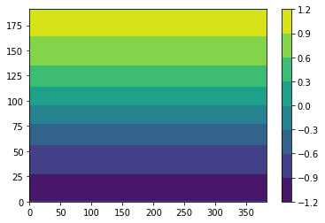
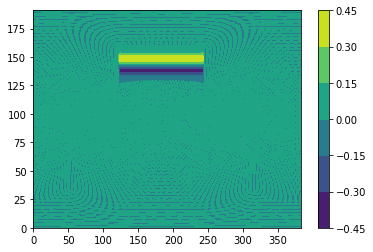
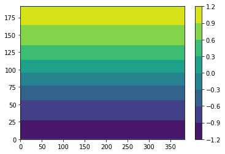
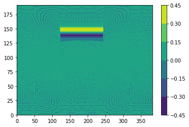
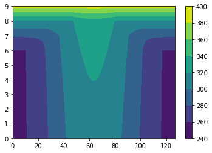
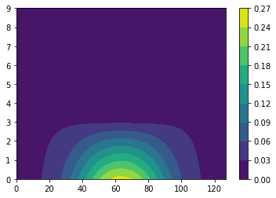
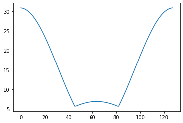
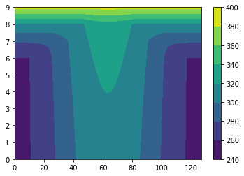
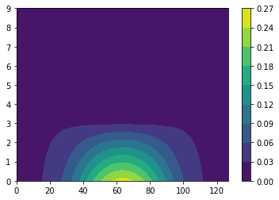
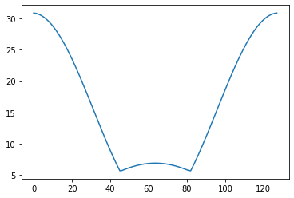

Contents
# Step 1: Install FFTW
!apt-get install libfftw3-dev
!apt-get install libfftw3-mpi-dev
# Step 2: Set paths for Dedalus installation
import os
import matplotlib.pyplot as plt
os.environ['MPI_INCLUDE_PATH'] = "/usr/lib/x86_64-linux-gnu/openmpi/include"
os.environ['MPI_LIBRARY_PATH'] = "/usr/lib/x86_64-linux-gnu"
os.environ['FFTW_INCLUDE_PATH'] = "/usr/include"
os.environ['FFTW_LIBRARY_PATH'] = "/usr/lib/x86_64-linux-gnu"
# Step 3: Install Dedalus using pip
!pip3 install --no-cache http://github.com/dedalusproject/dedalus/zipball/d3/
#!pip install dedalus
/bin/bash: apt-get: command not found
/bin/bash: apt-get: command not found
Collecting http://github.com/dedalusproject/dedalus/zipball/d3/
Downloading http://github.com/dedalusproject/dedalus/zipball/d3/ (23.3MB)
?25l
0% | | 10kB 51.5MB/s eta 0:00:01
0% | | 20kB 381kB/s eta 0:01:01
0% | | 30kB 549kB/s eta 0:00:43
0% | | 40kB 402kB/s eta 0:00:58
0% | | 51kB 460kB/s eta 0:00:51
0% | | 61kB 548kB/s eta 0:00:43
0% | | 71kB 619kB/s eta 0:00:38
0% |▏ | 81kB 683kB/s eta 0:00:34
0% |▏ | 92kB 766kB/s eta 0:00:31
0% |▏ | 102kB 656kB/s eta 0:00:36
0% |▏ | 112kB 609kB/s eta 0:00:38
0% |▏ | 122kB 811kB/s eta 0:00:29
0% |▏ | 133kB 823kB/s eta 0:00:29
0% |▏ | 143kB 1.3MB/s eta 0:00:19
0% |▏ | 153kB 1.4MB/s eta 0:00:17
0% |▎ | 163kB 1.4MB/s eta 0:00:17
0% |▎ | 174kB 1.4MB/s eta 0:00:17
0% |▎ | 184kB 1.5MB/s eta 0:00:16
0% |▎ | 194kB 1.4MB/s eta 0:00:17
0% |▎ | 204kB 2.6MB/s eta 0:00:10
0% |▎ | 215kB 2.5MB/s eta 0:00:10
0% |▎ | 225kB 3.3MB/s eta 0:00:08
1% |▎ | 235kB 2.8MB/s eta 0:00:09
1% |▍ | 245kB 1.9MB/s eta 0:00:13
1% |▍ | 256kB 1.8MB/s eta 0:00:14
1% |▍ | 266kB 1.9MB/s eta 0:00:13
1% |▍ | 276kB 1.7MB/s eta 0:00:14
1% |▍ | 286kB 1.7MB/s eta 0:00:14
1% |▍ | 296kB 1.7MB/s eta 0:00:14
1% |▍ | 307kB 1.6MB/s eta 0:00:14
1% |▍ | 317kB 1.9MB/s eta 0:00:13
1% |▌ | 327kB 1.9MB/s eta 0:00:13
1% |▌ | 337kB 2.0MB/s eta 0:00:12
1% |▌ | 348kB 2.3MB/s eta 0:00:11
1% |▌ | 358kB 2.4MB/s eta 0:00:10
1% |▌ | 368kB 2.4MB/s eta 0:00:10
1% |▌ | 378kB 2.7MB/s eta 0:00:09
1% |▌ | 389kB 2.9MB/s eta 0:00:08
1% |▌ | 399kB 2.7MB/s eta 0:00:09
1% |▋ | 409kB 3.1MB/s eta 0:00:08
1% |▋ | 419kB 3.5MB/s eta 0:00:07
1% |▋ | 430kB 3.0MB/s eta 0:00:08
1% |▋ | 440kB 2.8MB/s eta 0:00:09
1% |▋ | 450kB 4.3MB/s eta 0:00:06
1% |▋ | 460kB 3.8MB/s eta 0:00:07
2% |▋ | 471kB 3.0MB/s eta 0:00:08
2% |▋ | 481kB 3.0MB/s eta 0:00:08
2% |▊ | 491kB 2.4MB/s eta 0:00:10
2% |▊ | 501kB 2.8MB/s eta 0:00:09
2% |▊ | 512kB 2.4MB/s eta 0:00:10
2% |▊ | 522kB 2.5MB/s eta 0:00:10
2% |▊ | 532kB 2.8MB/s eta 0:00:09
2% |▊ | 542kB 2.9MB/s eta 0:00:08
2% |▊ | 552kB 2.5MB/s eta 0:00:09
2% |▊ | 563kB 2.8MB/s eta 0:00:09
2% |▉ | 573kB 2.9MB/s eta 0:00:08
2% |▉ | 583kB 2.9MB/s eta 0:00:08
2% |▉ | 593kB 3.4MB/s eta 0:00:07
2% |▉ | 604kB 3.0MB/s eta 0:00:08
2% |▉ | 614kB 3.6MB/s eta 0:00:07
2% |▉ | 624kB 3.1MB/s eta 0:00:08
2% |▉ | 634kB 2.1MB/s eta 0:00:11
2% |▉ | 645kB 2.3MB/s eta 0:00:10
2% |█ | 655kB 2.6MB/s eta 0:00:09
2% |█ | 665kB 2.6MB/s eta 0:00:09
2% |█ | 675kB 3.0MB/s eta 0:00:08
2% |█ | 686kB 2.7MB/s eta 0:00:09
2% |█ | 696kB 3.0MB/s eta 0:00:08
3% |█ | 706kB 2.8MB/s eta 0:00:09
3% |█ | 716kB 2.5MB/s eta 0:00:10
3% |█ | 727kB 2.9MB/s eta 0:00:08
3% |█ | 737kB 4.5MB/s eta 0:00:06
3% |█ | 747kB 4.5MB/s eta 0:00:05
3% |█ | 757kB 3.3MB/s eta 0:00:07
3% |█ | 768kB 2.5MB/s eta 0:00:09
3% |█ | 778kB 2.6MB/s eta 0:00:09
3% |█ | 788kB 2.5MB/s eta 0:00:09
3% |█ | 798kB 2.3MB/s eta 0:00:10
3% |█▏ | 808kB 2.7MB/s eta 0:00:09
3% |█▏ | 819kB 2.7MB/s eta 0:00:09
3% |█▏ | 829kB 2.7MB/s eta 0:00:09
3% |█▏ | 839kB 2.8MB/s eta 0:00:08
3% |█▏ | 849kB 2.4MB/s eta 0:00:10
3% |█▏ | 860kB 2.9MB/s eta 0:00:08
3% |█▏ | 870kB 3.4MB/s eta 0:00:07
3% |█▏ | 880kB 2.8MB/s eta 0:00:08
3% |█▎ | 890kB 3.1MB/s eta 0:00:08
3% |█▎ | 901kB 3.0MB/s eta 0:00:08
3% |█▎ | 911kB 3.0MB/s eta 0:00:08
3% |█▎ | 921kB 3.1MB/s eta 0:00:08
4% |█▎ | 931kB 2.2MB/s eta 0:00:11
4% |█▎ | 942kB 2.4MB/s eta 0:00:10
4% |█▎ | 952kB 2.8MB/s eta 0:00:09
4% |█▎ | 962kB 2.6MB/s eta 0:00:09
4% |█▍ | 972kB 3.0MB/s eta 0:00:08
4% |█▍ | 983kB 3.2MB/s eta 0:00:07
4% |█▍ | 993kB 3.2MB/s eta 0:00:07
4% |█▍ | 1.0MB 3.1MB/s eta 0:00:08
4% |█▍ | 1.0MB 2.9MB/s eta 0:00:08
4% |█▍ | 1.0MB 3.1MB/s eta 0:00:08
4% |█▍ | 1.0MB 4.1MB/s eta 0:00:06
4% |█▍ | 1.0MB 3.2MB/s eta 0:00:07
4% |█▌ | 1.1MB 3.2MB/s eta 0:00:07
4% |█▌ | 1.1MB 2.8MB/s eta 0:00:08
4% |█▌ | 1.1MB 2.4MB/s eta 0:00:10
4% |█▌ | 1.1MB 2.7MB/s eta 0:00:09
4% |█▌ | 1.1MB 2.6MB/s eta 0:00:09
4% |█▌ | 1.1MB 3.2MB/s eta 0:00:07
4% |█▌ | 1.1MB 2.9MB/s eta 0:00:08
4% |█▌ | 1.1MB 2.3MB/s eta 0:00:10
4% |█▋ | 1.1MB 2.6MB/s eta 0:00:09
4% |█▋ | 1.1MB 2.6MB/s eta 0:00:09
4% |█▋ | 1.2MB 2.3MB/s eta 0:00:10
5% |█▋ | 1.2MB 2.6MB/s eta 0:00:09
5% |█▋ | 1.2MB 2.9MB/s eta 0:00:08
5% |█▋ | 1.2MB 2.9MB/s eta 0:00:08
5% |█▋ | 1.2MB 2.7MB/s eta 0:00:09
5% |█▋ | 1.2MB 1.9MB/s eta 0:00:12
5% |█▊ | 1.2MB 2.1MB/s eta 0:00:11
5% |█▊ | 1.2MB 2.6MB/s eta 0:00:09
5% |█▊ | 1.2MB 2.6MB/s eta 0:00:09
5% |█▊ | 1.2MB 3.2MB/s eta 0:00:07
5% |█▊ | 1.3MB 3.5MB/s eta 0:00:07
5% |█▊ | 1.3MB 3.5MB/s eta 0:00:07
5% |█▊ | 1.3MB 3.3MB/s eta 0:00:07
5% |█▊ | 1.3MB 2.8MB/s eta 0:00:08
5% |█▉ | 1.3MB 3.0MB/s eta 0:00:08
5% |█▉ | 1.3MB 4.1MB/s eta 0:00:06
5% |█▉ | 1.3MB 3.3MB/s eta 0:00:07
5% |█▉ | 1.3MB 3.3MB/s eta 0:00:07
5% |█▉ | 1.3MB 3.1MB/s eta 0:00:08
5% |█▉ | 1.4MB 2.8MB/s eta 0:00:08
5% |█▉ | 1.4MB 3.0MB/s eta 0:00:08
5% |█▉ | 1.4MB 2.6MB/s eta 0:00:09
5% |██ | 1.4MB 2.9MB/s eta 0:00:08
5% |██ | 1.4MB 2.9MB/s eta 0:00:08
6% |██ | 1.4MB 2.4MB/s eta 0:00:10
6% |██ | 1.4MB 2.9MB/s eta 0:00:08
6% |██ | 1.4MB 3.3MB/s eta 0:00:07
6% |██ | 1.4MB 3.3MB/s eta 0:00:07
6% |██ | 1.4MB 3.0MB/s eta 0:00:08
6% |██ | 1.5MB 2.9MB/s eta 0:00:08
6% |██ | 1.5MB 3.0MB/s eta 0:00:08
6% |██ | 1.5MB 2.9MB/s eta 0:00:08
6% |██ | 1.5MB 2.5MB/s eta 0:00:09
6% |██ | 1.5MB 2.9MB/s eta 0:00:08
6% |██ | 1.5MB 2.3MB/s eta 0:00:10
6% |██ | 1.5MB 2.3MB/s eta 0:00:10
6% |██ | 1.5MB 2.2MB/s eta 0:00:10
6% |██▏ | 1.5MB 2.2MB/s eta 0:00:10
6% |██▏ | 1.5MB 2.6MB/s eta 0:00:09
6% |██▏ | 1.6MB 2.9MB/s eta 0:00:08
6% |██▏ | 1.6MB 2.0MB/s eta 0:00:11
6% |██▏ | 1.6MB 2.3MB/s eta 0:00:10
6% |██▏ | 1.6MB 2.7MB/s eta 0:00:09
6% |██▏ | 1.6MB 2.7MB/s eta 0:00:09
6% |██▏ | 1.6MB 3.9MB/s eta 0:00:06
6% |██▎ | 1.6MB 4.0MB/s eta 0:00:06
6% |██▎ | 1.6MB 4.7MB/s eta 0:00:05
7% |██▎ | 1.6MB 3.7MB/s eta 0:00:06
7% |██▎ | 1.6MB 3.0MB/s eta 0:00:08
7% |██▎ | 1.7MB 3.0MB/s eta 0:00:08
7% |██▎ | 1.7MB 4.3MB/s eta 0:00:05
7% |██▎ | 1.7MB 4.3MB/s eta 0:00:05
7% |██▎ | 1.7MB 3.6MB/s eta 0:00:07
7% |██▍ | 1.7MB 2.5MB/s eta 0:00:09
7% |██▍ | 1.7MB 2.8MB/s eta 0:00:08
7% |██▍ | 1.7MB 2.8MB/s eta 0:00:08
7% |██▍ | 1.7MB 2.4MB/s eta 0:00:10
7% |██▍ | 1.7MB 2.8MB/s eta 0:00:08
7% |██▍ | 1.8MB 2.8MB/s eta 0:00:08
7% |██▍ | 1.8MB 2.8MB/s eta 0:00:08
7% |██▍ | 1.8MB 2.9MB/s eta 0:00:08
7% |██▌ | 1.8MB 2.4MB/s eta 0:00:09
7% |██▌ | 1.8MB 2.8MB/s eta 0:00:08
7% |██▌ | 1.8MB 2.6MB/s eta 0:00:09
7% |██▌ | 1.8MB 2.6MB/s eta 0:00:09
7% |██▌ | 1.8MB 2.6MB/s eta 0:00:09
7% |██▌ | 1.8MB 3.1MB/s eta 0:00:07
7% |██▌ | 1.8MB 3.1MB/s eta 0:00:07
7% |██▌ | 1.9MB 2.4MB/s eta 0:00:09
8% |██▋ | 1.9MB 2.4MB/s eta 0:00:09
8% |██▋ | 1.9MB 2.6MB/s eta 0:00:09
8% |██▋ | 1.9MB 3.0MB/s eta 0:00:08
8% |██▋ | 1.9MB 2.5MB/s eta 0:00:09
8% |██▋ | 1.9MB 3.6MB/s eta 0:00:06
8% |██▋ | 1.9MB 3.5MB/s eta 0:00:07
8% |██▋ | 1.9MB 3.5MB/s eta 0:00:07
8% |██▋ | 1.9MB 2.7MB/s eta 0:00:08
8% |██▊ | 1.9MB 2.5MB/s eta 0:00:09
8% |██▊ | 2.0MB 4.0MB/s eta 0:00:06
8% |██▊ | 2.0MB 3.3MB/s eta 0:00:07
8% |██▊ | 2.0MB 2.8MB/s eta 0:00:08
8% |██▊ | 2.0MB 2.9MB/s eta 0:00:08
8% |██▊ | 2.0MB 3.1MB/s eta 0:00:07
8% |██▊ | 2.0MB 3.1MB/s eta 0:00:07
8% |██▊ | 2.0MB 2.9MB/s eta 0:00:08
8% |██▉ | 2.0MB 2.5MB/s eta 0:00:09
8% |██▉ | 2.0MB 3.2MB/s eta 0:00:07
8% |██▉ | 2.0MB 2.7MB/s eta 0:00:08
8% |██▉ | 2.1MB 2.2MB/s eta 0:00:10
8% |██▉ | 2.1MB 2.5MB/s eta 0:00:09
8% |██▉ | 2.1MB 2.1MB/s eta 0:00:11
8% |██▉ | 2.1MB 2.1MB/s eta 0:00:11
9% |██▉ | 2.1MB 2.3MB/s eta 0:00:10
9% |███ | 2.1MB 2.2MB/s eta 0:00:10
9% |███ | 2.1MB 2.4MB/s eta 0:00:09
9% |███ | 2.1MB 2.4MB/s eta 0:00:09
9% |███ | 2.1MB 2.3MB/s eta 0:00:10
9% |███ | 2.2MB 2.8MB/s eta 0:00:08
9% |███ | 2.2MB 3.0MB/s eta 0:00:07
9% |███ | 2.2MB 3.0MB/s eta 0:00:07
9% |███ | 2.2MB 3.8MB/s eta 0:00:06
9% |███ | 2.2MB 3.3MB/s eta 0:00:07
9% |███ | 2.2MB 3.3MB/s eta 0:00:07
9% |███ | 2.2MB 2.9MB/s eta 0:00:08
9% |███ | 2.2MB 2.9MB/s eta 0:00:08
9% |███ | 2.2MB 3.2MB/s eta 0:00:07
9% |███ | 2.2MB 3.1MB/s eta 0:00:07
9% |███ | 2.3MB 3.1MB/s eta 0:00:07
9% |███▏ | 2.3MB 3.0MB/s eta 0:00:08
9% |███▏ | 2.3MB 2.8MB/s eta 0:00:08
9% |███▏ | 2.3MB 3.3MB/s eta 0:00:07
9% |███▏ | 2.3MB 2.7MB/s eta 0:00:08
9% |███▏ | 2.3MB 2.4MB/s eta 0:00:09
9% |███▏ | 2.3MB 3.0MB/s eta 0:00:08
9% |███▏ | 2.3MB 2.7MB/s eta 0:00:08
10% |███▏ | 2.3MB 2.6MB/s eta 0:00:08
10% |███▎ | 2.3MB 2.8MB/s eta 0:00:08
10% |███▎ | 2.4MB 2.6MB/s eta 0:00:09
10% |███▎ | 2.4MB 3.2MB/s eta 0:00:07
10% |███▎ | 2.4MB 2.3MB/s eta 0:00:09
10% |███▎ | 2.4MB 2.1MB/s eta 0:00:11
10% |███▎ | 2.4MB 2.7MB/s eta 0:00:08
10% |███▎ | 2.4MB 2.8MB/s eta 0:00:08
10% |███▎ | 2.4MB 2.9MB/s eta 0:00:08
10% |███▍ | 2.4MB 3.0MB/s eta 0:00:07
10% |███▍ | 2.4MB 2.6MB/s eta 0:00:08
10% |███▍ | 2.4MB 2.8MB/s eta 0:00:08
10% |███▍ | 2.5MB 2.8MB/s eta 0:00:08
10% |███▍ | 2.5MB 2.4MB/s eta 0:00:09
10% |███▍ | 2.5MB 3.7MB/s eta 0:00:06
10% |███▍ | 2.5MB 3.8MB/s eta 0:00:06
10% |███▍ | 2.5MB 3.8MB/s eta 0:00:06
10% |███▌ | 2.5MB 3.3MB/s eta 0:00:07
10% |███▌ | 2.5MB 2.8MB/s eta 0:00:08
10% |███▌ | 2.5MB 3.0MB/s eta 0:00:07
10% |███▌ | 2.5MB 3.0MB/s eta 0:00:07
10% |███▌ | 2.5MB 2.6MB/s eta 0:00:08
11% |███▌ | 2.6MB 2.9MB/s eta 0:00:08
11% |███▌ | 2.6MB 2.9MB/s eta 0:00:08
11% |███▌ | 2.6MB 2.9MB/s eta 0:00:08
11% |███▋ | 2.6MB 2.7MB/s eta 0:00:08
11% |███▋ | 2.6MB 2.6MB/s eta 0:00:08
11% |███▋ | 2.6MB 3.0MB/s eta 0:00:07
11% |███▋ | 2.6MB 2.9MB/s eta 0:00:08
11% |███▋ | 2.6MB 2.6MB/s eta 0:00:08
11% |███▋ | 2.6MB 3.1MB/s eta 0:00:07
11% |███▋ | 2.7MB 3.0MB/s eta 0:00:07
11% |███▋ | 2.7MB 3.0MB/s eta 0:00:07
11% |███▊ | 2.7MB 2.4MB/s eta 0:00:09
11% |███▊ | 2.7MB 2.4MB/s eta 0:00:09
11% |███▊ | 2.7MB 2.9MB/s eta 0:00:08
11% |███▊ | 2.7MB 3.0MB/s eta 0:00:07
11% |███▊ | 2.7MB 2.6MB/s eta 0:00:08
11% |███▊ | 2.7MB 3.2MB/s eta 0:00:07
11% |███▊ | 2.7MB 2.9MB/s eta 0:00:07
11% |███▊ | 2.7MB 2.7MB/s eta 0:00:08
11% |███▉ | 2.8MB 2.9MB/s eta 0:00:08
11% |███▉ | 2.8MB 2.6MB/s eta 0:00:08
11% |███▉ | 2.8MB 4.3MB/s eta 0:00:05
11% |███▉ | 2.8MB 3.1MB/s eta 0:00:07
12% |███▉ | 2.8MB 3.0MB/s eta 0:00:07
12% |███▉ | 2.8MB 3.0MB/s eta 0:00:07
12% |███▉ | 2.8MB 3.0MB/s eta 0:00:07
12% |███▉ | 2.8MB 3.0MB/s eta 0:00:07
12% |████ | 2.8MB 3.0MB/s eta 0:00:07
12% |████ | 2.8MB 2.8MB/s eta 0:00:08
12% |████ | 2.9MB 3.1MB/s eta 0:00:07
12% |████ | 2.9MB 2.9MB/s eta 0:00:08
12% |████ | 2.9MB 2.5MB/s eta 0:00:09
12% |████ | 2.9MB 3.2MB/s eta 0:00:07
12% |████ | 2.9MB 2.9MB/s eta 0:00:07
12% |████ | 2.9MB 2.9MB/s eta 0:00:07
12% |████ | 2.9MB 2.9MB/s eta 0:00:08
12% |████ | 2.9MB 2.5MB/s eta 0:00:09
12% |████ | 2.9MB 2.9MB/s eta 0:00:08
12% |████ | 2.9MB 3.0MB/s eta 0:00:07
12% |████ | 3.0MB 2.1MB/s eta 0:00:10
12% |████ | 3.0MB 2.4MB/s eta 0:00:09
12% |████ | 3.0MB 2.8MB/s eta 0:00:08
12% |████▏ | 3.0MB 2.8MB/s eta 0:00:08
12% |████▏ | 3.0MB 2.7MB/s eta 0:00:08
12% |████▏ | 3.0MB 2.2MB/s eta 0:00:10
12% |████▏ | 3.0MB 2.5MB/s eta 0:00:09
13% |████▏ | 3.0MB 2.7MB/s eta 0:00:08
13% |████▏ | 3.0MB 2.6MB/s eta 0:00:08
13% |████▏ | 3.1MB 2.9MB/s eta 0:00:07
13% |████▏ | 3.1MB 3.9MB/s eta 0:00:06
13% |████▎ | 3.1MB 3.9MB/s eta 0:00:06
13% |████▎ | 3.1MB 3.3MB/s eta 0:00:07
13% |████▎ | 3.1MB 2.7MB/s eta 0:00:08
13% |████▎ | 3.1MB 3.2MB/s eta 0:00:07
13% |████▎ | 3.1MB 3.2MB/s eta 0:00:07
13% |████▎ | 3.1MB 3.2MB/s eta 0:00:07
13% |████▎ | 3.1MB 3.5MB/s eta 0:00:06
13% |████▎ | 3.1MB 2.9MB/s eta 0:00:07
13% |████▍ | 3.2MB 2.9MB/s eta 0:00:07
13% |████▍ | 3.2MB 3.0MB/s eta 0:00:07
13% |████▍ | 3.2MB 2.6MB/s eta 0:00:08
13% |████▍ | 3.2MB 3.0MB/s eta 0:00:07
13% |████▍ | 3.2MB 3.0MB/s eta 0:00:07
13% |████▍ | 3.2MB 2.5MB/s eta 0:00:09
13% |████▍ | 3.2MB 3.0MB/s eta 0:00:07
13% |████▍ | 3.2MB 3.0MB/s eta 0:00:07
13% |████▌ | 3.2MB 2.5MB/s eta 0:00:08
13% |████▌ | 3.2MB 3.1MB/s eta 0:00:07
13% |████▌ | 3.3MB 2.3MB/s eta 0:00:09
14% |████▌ | 3.3MB 2.6MB/s eta 0:00:08
14% |████▌ | 3.3MB 2.9MB/s eta 0:00:07
14% |████▌ | 3.3MB 2.4MB/s eta 0:00:09
14% |████▌ | 3.3MB 2.9MB/s eta 0:00:07
14% |████▌ | 3.3MB 3.3MB/s eta 0:00:07
14% |████▋ | 3.3MB 2.8MB/s eta 0:00:08
14% |████▋ | 3.3MB 2.9MB/s eta 0:00:07
14% |████▋ | 3.3MB 2.9MB/s eta 0:00:07
14% |████▋ | 3.3MB 2.9MB/s eta 0:00:07
14% |████▋ | 3.4MB 3.6MB/s eta 0:00:06
14% |████▋ | 3.4MB 2.9MB/s eta 0:00:07
14% |████▋ | 3.4MB 2.9MB/s eta 0:00:07
14% |████▋ | 3.4MB 3.2MB/s eta 0:00:07
14% |████▊ | 3.4MB 2.7MB/s eta 0:00:08
14% |████▊ | 3.4MB 2.8MB/s eta 0:00:07
14% |████▊ | 3.4MB 3.1MB/s eta 0:00:07
14% |████▊ | 3.4MB 3.1MB/s eta 0:00:07
14% |████▊ | 3.4MB 3.0MB/s eta 0:00:07
14% |████▊ | 3.5MB 2.7MB/s eta 0:00:08
14% |████▊ | 3.5MB 3.0MB/s eta 0:00:07
14% |████▊ | 3.5MB 3.1MB/s eta 0:00:07
14% |████▉ | 3.5MB 2.6MB/s eta 0:00:08
15% |████▉ | 3.5MB 2.9MB/s eta 0:00:07
15% |████▉ | 3.5MB 3.1MB/s eta 0:00:07
15% |████▉ | 3.5MB 3.1MB/s eta 0:00:07
15% |████▉ | 3.5MB 3.0MB/s eta 0:00:07
15% |████▉ | 3.5MB 1.9MB/s eta 0:00:11
15% |████▉ | 3.5MB 2.2MB/s eta 0:00:09
15% |████▉ | 3.6MB 2.4MB/s eta 0:00:09
15% |█████ | 3.6MB 2.4MB/s eta 0:00:09
15% |█████ | 3.6MB 2.8MB/s eta 0:00:07
15% |█████ | 3.6MB 3.0MB/s eta 0:00:07
15% |█████ | 3.6MB 3.0MB/s eta 0:00:07
15% |█████ | 3.6MB 2.9MB/s eta 0:00:07
15% |█████ | 3.6MB 2.5MB/s eta 0:00:08
15% |█████ | 3.6MB 2.8MB/s eta 0:00:08
15% |█████ | 3.6MB 4.4MB/s eta 0:00:05
15% |█████ | 3.6MB 3.7MB/s eta 0:00:06
15% |█████ | 3.7MB 3.7MB/s eta 0:00:06
15% |█████ | 3.7MB 3.1MB/s eta 0:00:07
15% |█████ | 3.7MB 3.1MB/s eta 0:00:07
15% |█████ | 3.7MB 3.0MB/s eta 0:00:07
15% |█████ | 3.7MB 2.6MB/s eta 0:00:08
15% |█████ | 3.7MB 3.1MB/s eta 0:00:07
15% |█████▏ | 3.7MB 3.1MB/s eta 0:00:07
16% |█████▏ | 3.7MB 2.6MB/s eta 0:00:08
16% |█████▏ | 3.7MB 3.0MB/s eta 0:00:07
16% |█████▏ | 3.7MB 2.8MB/s eta 0:00:07
16% |█████▏ | 3.8MB 2.8MB/s eta 0:00:07
16% |█████▏ | 3.8MB 3.0MB/s eta 0:00:07
16% |█████▏ | 3.8MB 2.4MB/s eta 0:00:09
16% |█████▏ | 3.8MB 2.8MB/s eta 0:00:08
16% |█████▎ | 3.8MB 2.8MB/s eta 0:00:07
16% |█████▎ | 3.8MB 2.5MB/s eta 0:00:08
16% |█████▎ | 3.8MB 2.9MB/s eta 0:00:07
16% |█████▎ | 3.8MB 2.4MB/s eta 0:00:09
16% |█████▎ | 3.8MB 2.4MB/s eta 0:00:09
16% |█████▎ | 3.9MB 2.8MB/s eta 0:00:08
16% |█████▎ | 3.9MB 2.7MB/s eta 0:00:08
16% |█████▎ | 3.9MB 2.9MB/s eta 0:00:07
16% |█████▍ | 3.9MB 3.1MB/s eta 0:00:07
16% |█████▍ | 3.9MB 2.8MB/s eta 0:00:07
16% |█████▍ | 3.9MB 3.1MB/s eta 0:00:07
16% |█████▍ | 3.9MB 2.9MB/s eta 0:00:07
16% |█████▍ | 3.9MB 2.9MB/s eta 0:00:07
16% |█████▍ | 3.9MB 3.7MB/s eta 0:00:06
16% |█████▍ | 3.9MB 3.4MB/s eta 0:00:06
16% |█████▍ | 4.0MB 3.4MB/s eta 0:00:06
17% |█████▌ | 4.0MB 3.1MB/s eta 0:00:07
17% |█████▌ | 4.0MB 2.4MB/s eta 0:00:09
17% |█████▌ | 4.0MB 2.8MB/s eta 0:00:07
17% |█████▌ | 4.0MB 3.0MB/s eta 0:00:07
17% |█████▌ | 4.0MB 3.0MB/s eta 0:00:07
17% |█████▌ | 4.0MB 3.0MB/s eta 0:00:07
17% |█████▌ | 4.0MB 2.6MB/s eta 0:00:08
17% |█████▌ | 4.0MB 3.2MB/s eta 0:00:07
17% |█████▋ | 4.0MB 3.0MB/s eta 0:00:07
17% |█████▋ | 4.1MB 2.6MB/s eta 0:00:08
17% |█████▋ | 4.1MB 2.9MB/s eta 0:00:07
17% |█████▋ | 4.1MB 3.3MB/s eta 0:00:06
17% |█████▋ | 4.1MB 3.3MB/s eta 0:00:06
17% |█████▋ | 4.1MB 2.9MB/s eta 0:00:07
17% |█████▋ | 4.1MB 2.5MB/s eta 0:00:08
17% |█████▋ | 4.1MB 2.9MB/s eta 0:00:07
17% |█████▊ | 4.1MB 2.4MB/s eta 0:00:09
17% |█████▊ | 4.1MB 2.4MB/s eta 0:00:09
17% |█████▊ | 4.1MB 2.6MB/s eta 0:00:08
17% |█████▊ | 4.2MB 2.7MB/s eta 0:00:08
17% |█████▊ | 4.2MB 2.6MB/s eta 0:00:08
17% |█████▊ | 4.2MB 3.0MB/s eta 0:00:07
18% |█████▊ | 4.2MB 2.6MB/s eta 0:00:08
18% |█████▊ | 4.2MB 3.0MB/s eta 0:00:07
18% |█████▉ | 4.2MB 3.1MB/s eta 0:00:07
18% |█████▉ | 4.2MB 2.6MB/s eta 0:00:08
18% |█████▉ | 4.2MB 4.0MB/s eta 0:00:05
18% |█████▉ | 4.2MB 3.4MB/s eta 0:00:06
18% |█████▉ | 4.2MB 3.4MB/s eta 0:00:06
18% |█████▉ | 4.3MB 3.3MB/s eta 0:00:06
18% |█████▉ | 4.3MB 2.9MB/s eta 0:00:07
18% |█████▉ | 4.3MB 2.9MB/s eta 0:00:07
18% |██████ | 4.3MB 3.0MB/s eta 0:00:07
18% |██████ | 4.3MB 2.6MB/s eta 0:00:08
18% |██████ | 4.3MB 3.0MB/s eta 0:00:07
18% |██████ | 4.3MB 3.0MB/s eta 0:00:07
18% |██████ | 4.3MB 3.0MB/s eta 0:00:07
18% |██████ | 4.3MB 2.9MB/s eta 0:00:07
18% |██████ | 4.4MB 2.4MB/s eta 0:00:08
18% |██████ | 4.4MB 2.8MB/s eta 0:00:07
18% |██████ | 4.4MB 3.0MB/s eta 0:00:07
18% |██████ | 4.4MB 2.6MB/s eta 0:00:08
18% |██████ | 4.4MB 3.0MB/s eta 0:00:07
18% |██████ | 4.4MB 2.8MB/s eta 0:00:07
18% |██████ | 4.4MB 2.8MB/s eta 0:00:07
19% |██████ | 4.4MB 2.4MB/s eta 0:00:08
19% |██████ | 4.4MB 2.4MB/s eta 0:00:08
19% |██████▏ | 4.4MB 2.8MB/s eta 0:00:07
19% |██████▏ | 4.5MB 3.0MB/s eta 0:00:07
19% |██████▏ | 4.5MB 2.7MB/s eta 0:00:07
19% |██████▏ | 4.5MB 2.9MB/s eta 0:00:07
19% |██████▏ | 4.5MB 2.8MB/s eta 0:00:07
19% |██████▏ | 4.5MB 2.8MB/s eta 0:00:07
19% |██████▏ | 4.5MB 3.1MB/s eta 0:00:07
19% |██████▏ | 4.5MB 2.6MB/s eta 0:00:08
19% |██████▎ | 4.5MB 3.3MB/s eta 0:00:06
19% |██████▎ | 4.5MB 3.2MB/s eta 0:00:06
19% |██████▎ | 4.5MB 2.6MB/s eta 0:00:08
19% |██████▎ | 4.6MB 2.9MB/s eta 0:00:07
19% |██████▎ | 4.6MB 2.9MB/s eta 0:00:07
19% |██████▎ | 4.6MB 2.7MB/s eta 0:00:07
19% |██████▎ | 4.6MB 3.2MB/s eta 0:00:06
19% |██████▎ | 4.6MB 2.7MB/s eta 0:00:08
19% |██████▍ | 4.6MB 2.9MB/s eta 0:00:07
19% |██████▍ | 4.6MB 3.0MB/s eta 0:00:07
19% |██████▍ | 4.6MB 2.8MB/s eta 0:00:07
19% |██████▍ | 4.6MB 3.0MB/s eta 0:00:07
19% |██████▍ | 4.6MB 3.2MB/s eta 0:00:06
20% |██████▍ | 4.7MB 3.2MB/s eta 0:00:06
20% |██████▍ | 4.7MB 3.0MB/s eta 0:00:07
20% |██████▍ | 4.7MB 2.8MB/s eta 0:00:07
20% |██████▌ | 4.7MB 2.9MB/s eta 0:00:07
20% |██████▌ | 4.7MB 2.2MB/s eta 0:00:09
20% |██████▌ | 4.7MB 2.2MB/s eta 0:00:09
20% |██████▌ | 4.7MB 2.5MB/s eta 0:00:08
20% |██████▌ | 4.7MB 2.5MB/s eta 0:00:08
20% |██████▌ | 4.7MB 2.3MB/s eta 0:00:08
20% |██████▌ | 4.8MB 2.6MB/s eta 0:00:08
20% |██████▌ | 4.8MB 2.3MB/s eta 0:00:09
20% |██████▋ | 4.8MB 2.5MB/s eta 0:00:08
20% |██████▋ | 4.8MB 2.6MB/s eta 0:00:08
20% |██████▋ | 4.8MB 2.3MB/s eta 0:00:09
20% |██████▋ | 4.8MB 3.9MB/s eta 0:00:05
20% |██████▋ | 4.8MB 3.0MB/s eta 0:00:07
20% |██████▋ | 4.8MB 3.0MB/s eta 0:00:07
20% |██████▋ | 4.8MB 3.0MB/s eta 0:00:07
20% |██████▋ | 4.8MB 2.7MB/s eta 0:00:07
20% |██████▊ | 4.9MB 2.9MB/s eta 0:00:07
20% |██████▊ | 4.9MB 3.1MB/s eta 0:00:06
20% |██████▊ | 4.9MB 2.6MB/s eta 0:00:08
20% |██████▊ | 4.9MB 2.9MB/s eta 0:00:07
21% |██████▊ | 4.9MB 3.0MB/s eta 0:00:07
21% |██████▊ | 4.9MB 3.0MB/s eta 0:00:07
21% |██████▊ | 4.9MB 3.2MB/s eta 0:00:06
21% |██████▊ | 4.9MB 2.6MB/s eta 0:00:08
21% |██████▉ | 4.9MB 3.0MB/s eta 0:00:07
21% |██████▉ | 4.9MB 3.2MB/s eta 0:00:06
21% |██████▉ | 5.0MB 2.5MB/s eta 0:00:08
21% |██████▉ | 5.0MB 2.7MB/s eta 0:00:07
21% |██████▉ | 5.0MB 3.2MB/s eta 0:00:06
21% |██████▉ | 5.0MB 3.2MB/s eta 0:00:06
21% |██████▉ | 5.0MB 2.4MB/s eta 0:00:08
21% |██████▉ | 5.0MB 2.3MB/s eta 0:00:08
21% |███████ | 5.0MB 2.7MB/s eta 0:00:07
21% |███████ | 5.0MB 3.2MB/s eta 0:00:06
21% |███████ | 5.0MB 2.7MB/s eta 0:00:07
21% |███████ | 5.0MB 2.9MB/s eta 0:00:07
21% |███████ | 5.1MB 3.0MB/s eta 0:00:07
21% |███████ | 5.1MB 3.0MB/s eta 0:00:07
21% |███████ | 5.1MB 2.9MB/s eta 0:00:07
21% |███████ | 5.1MB 2.5MB/s eta 0:00:08
21% |███████ | 5.1MB 3.7MB/s eta 0:00:05
21% |███████ | 5.1MB 3.2MB/s eta 0:00:06
22% |███████ | 5.1MB 2.8MB/s eta 0:00:07
22% |███████ | 5.1MB 2.9MB/s eta 0:00:07
22% |███████ | 5.1MB 3.0MB/s eta 0:00:06
22% |███████ | 5.2MB 3.0MB/s eta 0:00:06
22% |███████ | 5.2MB 3.2MB/s eta 0:00:06
22% |███████▏ | 5.2MB 2.7MB/s eta 0:00:07
22% |███████▏ | 5.2MB 3.0MB/s eta 0:00:07
22% |███████▏ | 5.2MB 2.9MB/s eta 0:00:07
22% |███████▏ | 5.2MB 2.5MB/s eta 0:00:08
22% |███████▏ | 5.2MB 3.0MB/s eta 0:00:06
22% |███████▏ | 5.2MB 3.1MB/s eta 0:00:06
22% |███████▏ | 5.2MB 3.1MB/s eta 0:00:06
22% |███████▏ | 5.2MB 3.0MB/s eta 0:00:07
22% |███████▎ | 5.3MB 2.6MB/s eta 0:00:08
22% |███████▎ | 5.3MB 3.0MB/s eta 0:00:07
22% |███████▎ | 5.3MB 2.9MB/s eta 0:00:07
22% |███████▎ | 5.3MB 2.2MB/s eta 0:00:09
22% |███████▎ | 5.3MB 2.5MB/s eta 0:00:08
22% |███████▎ | 5.3MB 2.9MB/s eta 0:00:07
22% |███████▎ | 5.3MB 2.6MB/s eta 0:00:07
22% |███████▎ | 5.3MB 2.9MB/s eta 0:00:07
22% |███████▍ | 5.3MB 2.6MB/s eta 0:00:07
22% |███████▍ | 5.3MB 3.0MB/s eta 0:00:06
23% |███████▍ | 5.4MB 3.0MB/s eta 0:00:07
23% |███████▍ | 5.4MB 2.5MB/s eta 0:00:08
23% |███████▍ | 5.4MB 3.0MB/s eta 0:00:07
23% |███████▍ | 5.4MB 3.4MB/s eta 0:00:06
23% |███████▍ | 5.4MB 3.1MB/s eta 0:00:06
23% |███████▍ | 5.4MB 3.1MB/s eta 0:00:06
23% |███████▌ | 5.4MB 3.0MB/s eta 0:00:06
23% |███████▌ | 5.4MB 3.0MB/s eta 0:00:06
23% |███████▌ | 5.4MB 3.0MB/s eta 0:00:06
23% |███████▌ | 5.4MB 2.5MB/s eta 0:00:08
23% |███████▌ | 5.5MB 3.0MB/s eta 0:00:06
23% |███████▌ | 5.5MB 2.8MB/s eta 0:00:07
23% |███████▌ | 5.5MB 2.3MB/s eta 0:00:08
23% |███████▌ | 5.5MB 2.7MB/s eta 0:00:07
23% |███████▋ | 5.5MB 1.5MB/s eta 0:00:13
23% |███████▋ | 5.5MB 1.5MB/s eta 0:00:13
23% |███████▋ | 5.5MB 1.6MB/s eta 0:00:12
23% |███████▋ | 5.5MB 1.5MB/s eta 0:00:12
23% |███████▋ | 5.5MB 1.6MB/s eta 0:00:11
23% |███████▋ | 5.6MB 1.6MB/s eta 0:00:11
23% |███████▋ | 5.6MB 1.5MB/s eta 0:00:12
23% |███████▋ | 5.6MB 1.7MB/s eta 0:00:11
23% |███████▊ | 5.6MB 1.8MB/s eta 0:00:10
24% |███████▊ | 5.6MB 1.8MB/s eta 0:00:10
24% |███████▊ | 5.6MB 3.5MB/s eta 0:00:06
24% |███████▊ | 5.6MB 2.7MB/s eta 0:00:07
24% |███████▊ | 5.6MB 2.7MB/s eta 0:00:07
24% |███████▊ | 5.6MB 2.7MB/s eta 0:00:07
24% |███████▊ | 5.6MB 2.3MB/s eta 0:00:08
24% |███████▊ | 5.7MB 2.7MB/s eta 0:00:07
24% |███████▉ | 5.7MB 2.7MB/s eta 0:00:07
24% |███████▉ | 5.7MB 2.7MB/s eta 0:00:07
24% |███████▉ | 5.7MB 2.5MB/s eta 0:00:07
24% |███████▉ | 5.7MB 2.2MB/s eta 0:00:08
24% |███████▉ | 5.7MB 2.6MB/s eta 0:00:07
24% |███████▉ | 5.7MB 2.9MB/s eta 0:00:07
24% |███████▉ | 5.7MB 2.4MB/s eta 0:00:08
24% |███████▉ | 5.7MB 2.6MB/s eta 0:00:07
24% |████████ | 5.7MB 2.9MB/s eta 0:00:07
24% |████████ | 5.8MB 2.9MB/s eta 0:00:07
24% |████████ | 5.8MB 2.1MB/s eta 0:00:09
24% |████████ | 5.8MB 2.1MB/s eta 0:00:09
24% |████████ | 5.8MB 2.6MB/s eta 0:00:07
24% |████████ | 5.8MB 2.9MB/s eta 0:00:07
24% |████████ | 5.8MB 2.7MB/s eta 0:00:07
24% |████████ | 5.8MB 3.0MB/s eta 0:00:06
25% |████████ | 5.8MB 3.0MB/s eta 0:00:06
25% |████████ | 5.8MB 3.1MB/s eta 0:00:06
25% |████████ | 5.8MB 3.0MB/s eta 0:00:06
25% |████████ | 5.9MB 2.5MB/s eta 0:00:07
25% |████████ | 5.9MB 4.4MB/s eta 0:00:04
25% |████████ | 5.9MB 3.7MB/s eta 0:00:05
25% |████████ | 5.9MB 3.0MB/s eta 0:00:06
25% |████████▏ | 5.9MB 3.2MB/s eta 0:00:06
25% |████████▏ | 5.9MB 2.8MB/s eta 0:00:07
25% |████████▏ | 5.9MB 2.8MB/s eta 0:00:07
25% |████████▏ | 5.9MB 3.0MB/s eta 0:00:06
25% |████████▏ | 5.9MB 2.7MB/s eta 0:00:07
25% |████████▏ | 5.9MB 3.0MB/s eta 0:00:06
25% |████████▏ | 6.0MB 3.0MB/s eta 0:00:06
25% |████████▏ | 6.0MB 2.6MB/s eta 0:00:07
25% |████████▎ | 6.0MB 2.9MB/s eta 0:00:06
25% |████████▎ | 6.0MB 2.9MB/s eta 0:00:06
25% |████████▎ | 6.0MB 2.9MB/s eta 0:00:06
25% |████████▎ | 6.0MB 3.1MB/s eta 0:00:06
25% |████████▎ | 6.0MB 2.7MB/s eta 0:00:07
25% |████████▎ | 6.0MB 3.0MB/s eta 0:00:06
25% |████████▎ | 6.0MB 2.8MB/s eta 0:00:07
26% |████████▎ | 6.1MB 2.0MB/s eta 0:00:09
26% |████████▍ | 6.1MB 2.2MB/s eta 0:00:08
26% |████████▍ | 6.1MB 2.5MB/s eta 0:00:07
26% |████████▍ | 6.1MB 2.5MB/s eta 0:00:07
26% |████████▍ | 6.1MB 3.0MB/s eta 0:00:06
26% |████████▍ | 6.1MB 2.4MB/s eta 0:00:08
26% |████████▍ | 6.1MB 2.7MB/s eta 0:00:07
26% |████████▍ | 6.1MB 3.0MB/s eta 0:00:06
26% |████████▍ | 6.1MB 2.5MB/s eta 0:00:07
26% |████████▌ | 6.1MB 3.0MB/s eta 0:00:06
26% |████████▌ | 6.2MB 4.2MB/s eta 0:00:05
26% |████████▌ | 6.2MB 4.2MB/s eta 0:00:05
26% |████████▌ | 6.2MB 3.5MB/s eta 0:00:05
26% |████████▌ | 6.2MB 3.0MB/s eta 0:00:06
26% |████████▌ | 6.2MB 3.0MB/s eta 0:00:06
26% |████████▌ | 6.2MB 3.4MB/s eta 0:00:06
26% |████████▌ | 6.2MB 2.8MB/s eta 0:00:07
26% |████████▋ | 6.2MB 2.9MB/s eta 0:00:06
26% |████████▋ | 6.2MB 2.7MB/s eta 0:00:07
26% |████████▋ | 6.2MB 2.6MB/s eta 0:00:07
26% |████████▋ | 6.3MB 3.0MB/s eta 0:00:06
26% |████████▋ | 6.3MB 2.5MB/s eta 0:00:07
26% |████████▋ | 6.3MB 2.9MB/s eta 0:00:06
27% |████████▋ | 6.3MB 2.9MB/s eta 0:00:06
27% |████████▋ | 6.3MB 2.4MB/s eta 0:00:08
27% |████████▊ | 6.3MB 2.7MB/s eta 0:00:07
27% |████████▊ | 6.3MB 2.4MB/s eta 0:00:08
27% |████████▊ | 6.3MB 2.3MB/s eta 0:00:08
27% |████████▊ | 6.3MB 2.3MB/s eta 0:00:08
27% |████████▊ | 6.3MB 2.3MB/s eta 0:00:08
27% |████████▊ | 6.4MB 2.3MB/s eta 0:00:08
27% |████████▊ | 6.4MB 2.6MB/s eta 0:00:07
27% |████████▊ | 6.4MB 2.3MB/s eta 0:00:08
27% |████████▉ | 6.4MB 2.6MB/s eta 0:00:07
27% |████████▉ | 6.4MB 2.8MB/s eta 0:00:07
27% |████████▉ | 6.4MB 2.8MB/s eta 0:00:07
27% |████████▉ | 6.4MB 3.4MB/s eta 0:00:05
27% |████████▉ | 6.4MB 3.0MB/s eta 0:00:06
27% |████████▉ | 6.4MB 4.1MB/s eta 0:00:05
27% |████████▉ | 6.5MB 3.6MB/s eta 0:00:05
27% |████████▉ | 6.5MB 2.9MB/s eta 0:00:06
27% |█████████ | 6.5MB 2.9MB/s eta 0:00:06
27% |█████████ | 6.5MB 3.1MB/s eta 0:00:06
27% |█████████ | 6.5MB 3.1MB/s eta 0:00:06
27% |█████████ | 6.5MB 3.0MB/s eta 0:00:06
27% |█████████ | 6.5MB 2.6MB/s eta 0:00:07
28% |█████████ | 6.5MB 2.9MB/s eta 0:00:06
28% |█████████ | 6.5MB 2.9MB/s eta 0:00:06
28% |█████████ | 6.5MB 2.5MB/s eta 0:00:07
28% |█████████ | 6.6MB 2.8MB/s eta 0:00:06
28% |█████████ | 6.6MB 2.8MB/s eta 0:00:06
28% |█████████ | 6.6MB 2.8MB/s eta 0:00:06
28% |█████████ | 6.6MB 2.9MB/s eta 0:00:06
28% |█████████ | 6.6MB 2.4MB/s eta 0:00:07
28% |█████████ | 6.6MB 2.8MB/s eta 0:00:06
28% |█████████ | 6.6MB 2.9MB/s eta 0:00:06
28% |█████████▏ | 6.6MB 2.1MB/s eta 0:00:08
28% |█████████▏ | 6.6MB 2.3MB/s eta 0:00:08
28% |█████████▏ | 6.6MB 2.8MB/s eta 0:00:07
28% |█████████▏ | 6.7MB 2.8MB/s eta 0:00:07
28% |█████████▏ | 6.7MB 3.2MB/s eta 0:00:06
28% |█████████▏ | 6.7MB 2.7MB/s eta 0:00:07
28% |█████████▏ | 6.7MB 2.9MB/s eta 0:00:06
28% |█████████▏ | 6.7MB 2.9MB/s eta 0:00:06
28% |█████████▎ | 6.7MB 2.5MB/s eta 0:00:07
28% |█████████▎ | 6.7MB 2.9MB/s eta 0:00:06
28% |█████████▎ | 6.7MB 3.7MB/s eta 0:00:05
28% |█████████▎ | 6.7MB 3.7MB/s eta 0:00:05
29% |█████████▎ | 6.7MB 3.3MB/s eta 0:00:05
29% |█████████▎ | 6.8MB 2.7MB/s eta 0:00:07
29% |█████████▎ | 6.8MB 2.8MB/s eta 0:00:06
29% |█████████▎ | 6.8MB 2.9MB/s eta 0:00:06
29% |█████████▍ | 6.8MB 2.6MB/s eta 0:00:07
29% |█████████▍ | 6.8MB 3.2MB/s eta 0:00:06
29% |█████████▍ | 6.8MB 3.0MB/s eta 0:00:06
29% |█████████▍ | 6.8MB 3.0MB/s eta 0:00:06
29% |█████████▍ | 6.8MB 3.3MB/s eta 0:00:06
29% |█████████▍ | 6.8MB 2.7MB/s eta 0:00:07
29% |█████████▍ | 6.9MB 2.9MB/s eta 0:00:06
29% |█████████▍ | 6.9MB 3.2MB/s eta 0:00:06
29% |█████████▌ | 6.9MB 2.7MB/s eta 0:00:07
29% |█████████▌ | 6.9MB 3.1MB/s eta 0:00:06
29% |█████████▌ | 6.9MB 2.8MB/s eta 0:00:06
29% |█████████▌ | 6.9MB 2.8MB/s eta 0:00:06
29% |█████████▌ | 6.9MB 3.1MB/s eta 0:00:06
29% |█████████▌ | 6.9MB 2.2MB/s eta 0:00:08
29% |█████████▌ | 6.9MB 2.4MB/s eta 0:00:07
29% |█████████▌ | 6.9MB 2.8MB/s eta 0:00:06
29% |█████████▋ | 7.0MB 2.5MB/s eta 0:00:07
29% |█████████▋ | 7.0MB 2.8MB/s eta 0:00:06
29% |█████████▋ | 7.0MB 2.9MB/s eta 0:00:06
30% |█████████▋ | 7.0MB 3.0MB/s eta 0:00:06
30% |█████████▋ | 7.0MB 3.0MB/s eta 0:00:06
30% |█████████▋ | 7.0MB 2.6MB/s eta 0:00:07
30% |█████████▋ | 7.0MB 2.9MB/s eta 0:00:06
30% |█████████▋ | 7.0MB 4.0MB/s eta 0:00:05
30% |█████████▊ | 7.0MB 3.0MB/s eta 0:00:06
30% |█████████▊ | 7.0MB 2.8MB/s eta 0:00:06
30% |█████████▊ | 7.1MB 3.1MB/s eta 0:00:06
30% |█████████▊ | 7.1MB 3.1MB/s eta 0:00:06
30% |█████████▊ | 7.1MB 2.9MB/s eta 0:00:06
30% |█████████▊ | 7.1MB 2.6MB/s eta 0:00:07
30% |█████████▊ | 7.1MB 3.1MB/s eta 0:00:06
30% |█████████▊ | 7.1MB 3.0MB/s eta 0:00:06
30% |█████████▉ | 7.1MB 2.6MB/s eta 0:00:07
30% |█████████▉ | 7.1MB 2.9MB/s eta 0:00:06
30% |█████████▉ | 7.1MB 3.3MB/s eta 0:00:05
30% |█████████▉ | 7.1MB 3.5MB/s eta 0:00:05
30% |█████████▉ | 7.2MB 3.0MB/s eta 0:00:06
30% |█████████▉ | 7.2MB 2.5MB/s eta 0:00:07
30% |█████████▉ | 7.2MB 3.0MB/s eta 0:00:06
30% |█████████▉ | 7.2MB 2.7MB/s eta 0:00:06
30% |██████████ | 7.2MB 1.9MB/s eta 0:00:09
30% |██████████ | 7.2MB 2.1MB/s eta 0:00:08
31% |██████████ | 7.2MB 2.2MB/s eta 0:00:08
31% |██████████ | 7.2MB 2.2MB/s eta 0:00:08
31% |██████████ | 7.2MB 2.2MB/s eta 0:00:08
31% |██████████ | 7.2MB 2.0MB/s eta 0:00:08
31% |██████████ | 7.3MB 2.3MB/s eta 0:00:07
31% |██████████ | 7.3MB 2.3MB/s eta 0:00:07
31% |██████████ | 7.3MB 2.1MB/s eta 0:00:08
31% |██████████ | 7.3MB 2.4MB/s eta 0:00:07
31% |██████████ | 7.3MB 3.4MB/s eta 0:00:05
31% |██████████ | 7.3MB 3.4MB/s eta 0:00:05
31% |██████████ | 7.3MB 2.9MB/s eta 0:00:06
31% |██████████ | 7.3MB 2.4MB/s eta 0:00:07
31% |██████████ | 7.3MB 2.7MB/s eta 0:00:06
31% |██████████▏ | 7.4MB 2.5MB/s eta 0:00:07
31% |██████████▏ | 7.4MB 2.3MB/s eta 0:00:08
31% |██████████▏ | 7.4MB 2.6MB/s eta 0:00:07
31% |██████████▏ | 7.4MB 2.6MB/s eta 0:00:07
31% |██████████▏ | 7.4MB 2.2MB/s eta 0:00:08
31% |██████████▏ | 7.4MB 2.4MB/s eta 0:00:07
31% |██████████▏ | 7.4MB 2.1MB/s eta 0:00:08
31% |██████████▏ | 7.4MB 2.3MB/s eta 0:00:07
31% |██████████▎ | 7.4MB 2.7MB/s eta 0:00:06
31% |██████████▎ | 7.4MB 1.9MB/s eta 0:00:09
32% |██████████▎ | 7.5MB 2.1MB/s eta 0:00:08
32% |██████████▎ | 7.5MB 2.4MB/s eta 0:00:07
32% |██████████▎ | 7.5MB 2.1MB/s eta 0:00:08
32% |██████████▎ | 7.5MB 2.4MB/s eta 0:00:07
32% |██████████▎ | 7.5MB 2.5MB/s eta 0:00:07
32% |██████████▎ | 7.5MB 2.5MB/s eta 0:00:07
32% |██████████▍ | 7.5MB 2.7MB/s eta 0:00:06
32% |██████████▍ | 7.5MB 2.2MB/s eta 0:00:08
32% |██████████▍ | 7.5MB 2.4MB/s eta 0:00:07
32% |██████████▍ | 7.5MB 3.1MB/s eta 0:00:06
32% |██████████▍ | 7.6MB 2.8MB/s eta 0:00:06
32% |██████████▍ | 7.6MB 2.9MB/s eta 0:00:06
32% |██████████▍ | 7.6MB 2.5MB/s eta 0:00:07
32% |██████████▍ | 7.6MB 2.5MB/s eta 0:00:07
32% |██████████▌ | 7.6MB 2.6MB/s eta 0:00:07
32% |██████████▌ | 7.6MB 2.3MB/s eta 0:00:07
32% |██████████▌ | 7.6MB 2.5MB/s eta 0:00:07
32% |██████████▌ | 7.6MB 2.5MB/s eta 0:00:07
32% |██████████▌ | 7.6MB 2.1MB/s eta 0:00:08
32% |██████████▌ | 7.6MB 2.5MB/s eta 0:00:07
32% |██████████▌ | 7.7MB 2.5MB/s eta 0:00:07
32% |██████████▌ | 7.7MB 2.5MB/s eta 0:00:07
33% |██████████▋ | 7.7MB 2.8MB/s eta 0:00:06
33% |██████████▋ | 7.7MB 2.5MB/s eta 0:00:07
33% |██████████▋ | 7.7MB 2.7MB/s eta 0:00:06
33% |██████████▋ | 7.7MB 2.2MB/s eta 0:00:08
33% |██████████▋ | 7.7MB 2.2MB/s eta 0:00:08
33% |██████████▋ | 7.7MB 2.7MB/s eta 0:00:06
33% |██████████▋ | 7.7MB 3.2MB/s eta 0:00:05
33% |██████████▋ | 7.8MB 3.2MB/s eta 0:00:05
33% |██████████▊ | 7.8MB 3.0MB/s eta 0:00:06
33% |██████████▊ | 7.8MB 2.7MB/s eta 0:00:06
33% |██████████▊ | 7.8MB 3.1MB/s eta 0:00:05
33% |██████████▊ | 7.8MB 3.1MB/s eta 0:00:06
33% |██████████▊ | 7.8MB 2.7MB/s eta 0:00:06
33% |██████████▊ | 7.8MB 4.2MB/s eta 0:00:04
33% |██████████▊ | 7.8MB 3.4MB/s eta 0:00:05
33% |██████████▊ | 7.8MB 3.4MB/s eta 0:00:05
33% |██████████▉ | 7.8MB 2.7MB/s eta 0:00:06
33% |██████████▉ | 7.9MB 2.6MB/s eta 0:00:06
33% |██████████▉ | 7.9MB 3.0MB/s eta 0:00:06
33% |██████████▉ | 7.9MB 2.6MB/s eta 0:00:06
33% |██████████▉ | 7.9MB 2.4MB/s eta 0:00:07
33% |██████████▉ | 7.9MB 2.8MB/s eta 0:00:06
33% |██████████▉ | 7.9MB 2.9MB/s eta 0:00:06
34% |██████████▉ | 7.9MB 2.9MB/s eta 0:00:06
34% |███████████ | 7.9MB 3.0MB/s eta 0:00:06
34% |███████████ | 7.9MB 2.5MB/s eta 0:00:07
34% |███████████ | 7.9MB 3.1MB/s eta 0:00:05
34% |███████████ | 8.0MB 2.7MB/s eta 0:00:06
34% |███████████ | 8.0MB 2.5MB/s eta 0:00:07
34% |███████████ | 8.0MB 3.2MB/s eta 0:00:05
34% |███████████ | 8.0MB 2.9MB/s eta 0:00:06
34% |███████████ | 8.0MB 2.9MB/s eta 0:00:06
34% |███████████ | 8.0MB 2.4MB/s eta 0:00:07
34% |███████████ | 8.0MB 2.4MB/s eta 0:00:07
34% |███████████ | 8.0MB 2.7MB/s eta 0:00:06
34% |███████████ | 8.0MB 2.6MB/s eta 0:00:06
34% |███████████ | 8.0MB 2.2MB/s eta 0:00:07
34% |███████████ | 8.1MB 2.7MB/s eta 0:00:06
34% |███████████ | 8.1MB 2.8MB/s eta 0:00:06
34% |███████████▏ | 8.1MB 2.8MB/s eta 0:00:06
34% |███████████▏ | 8.1MB 2.7MB/s eta 0:00:06
34% |███████████▏ | 8.1MB 2.4MB/s eta 0:00:07
34% |███████████▏ | 8.1MB 3.4MB/s eta 0:00:05
34% |███████████▏ | 8.1MB 2.8MB/s eta 0:00:06
34% |███████████▏ | 8.1MB 2.4MB/s eta 0:00:07
34% |███████████▏ | 8.1MB 3.1MB/s eta 0:00:05
35% |███████████▏ | 8.2MB 3.3MB/s eta 0:00:05
35% |███████████▎ | 8.2MB 3.3MB/s eta 0:00:05
35% |███████████▎ | 8.2MB 2.8MB/s eta 0:00:06
35% |███████████▎ | 8.2MB 2.3MB/s eta 0:00:07
35% |███████████▎ | 8.2MB 2.8MB/s eta 0:00:06
35% |███████████▎ | 8.2MB 2.9MB/s eta 0:00:06
35% |███████████▎ | 8.2MB 2.5MB/s eta 0:00:07
35% |███████████▎ | 8.2MB 3.0MB/s eta 0:00:06
35% |███████████▎ | 8.2MB 2.9MB/s eta 0:00:06
35% |███████████▍ | 8.2MB 2.9MB/s eta 0:00:06
35% |███████████▍ | 8.3MB 2.9MB/s eta 0:00:06
35% |███████████▍ | 8.3MB 2.5MB/s eta 0:00:06
35% |███████████▍ | 8.3MB 2.9MB/s eta 0:00:06
35% |███████████▍ | 8.3MB 2.5MB/s eta 0:00:06
35% |███████████▍ | 8.3MB 2.4MB/s eta 0:00:07
35% |███████████▍ | 8.3MB 2.7MB/s eta 0:00:06
35% |███████████▍ | 8.3MB 3.0MB/s eta 0:00:06
35% |███████████▌ | 8.3MB 3.0MB/s eta 0:00:06
35% |███████████▌ | 8.3MB 3.1MB/s eta 0:00:05
35% |███████████▌ | 8.3MB 2.6MB/s eta 0:00:06
35% |███████████▌ | 8.4MB 2.9MB/s eta 0:00:06
35% |███████████▌ | 8.4MB 3.1MB/s eta 0:00:05
36% |███████████▌ | 8.4MB 2.6MB/s eta 0:00:06
36% |███████████▌ | 8.4MB 3.8MB/s eta 0:00:04
36% |███████████▌ | 8.4MB 3.3MB/s eta 0:00:05
36% |███████████▋ | 8.4MB 3.3MB/s eta 0:00:05
36% |███████████▋ | 8.4MB 3.1MB/s eta 0:00:05
36% |███████████▋ | 8.4MB 2.6MB/s eta 0:00:06
36% |███████████▋ | 8.4MB 2.9MB/s eta 0:00:06
36% |███████████▋ | 8.4MB 3.0MB/s eta 0:00:05
36% |███████████▋ | 8.5MB 2.7MB/s eta 0:00:06
36% |███████████▋ | 8.5MB 2.9MB/s eta 0:00:06
36% |███████████▋ | 8.5MB 3.1MB/s eta 0:00:05
36% |███████████▊ | 8.5MB 3.1MB/s eta 0:00:05
36% |███████████▊ | 8.5MB 3.0MB/s eta 0:00:05
36% |███████████▊ | 8.5MB 2.6MB/s eta 0:00:06
36% |███████████▊ | 8.5MB 2.9MB/s eta 0:00:06
36% |███████████▊ | 8.5MB 3.1MB/s eta 0:00:05
36% |███████████▊ | 8.5MB 2.5MB/s eta 0:00:06
36% |███████████▊ | 8.6MB 2.7MB/s eta 0:00:06
36% |███████████▊ | 8.6MB 3.0MB/s eta 0:00:05
36% |███████████▉ | 8.6MB 3.0MB/s eta 0:00:05
36% |███████████▉ | 8.6MB 2.5MB/s eta 0:00:06
36% |███████████▉ | 8.6MB 2.3MB/s eta 0:00:07
36% |███████████▉ | 8.6MB 2.7MB/s eta 0:00:06
37% |███████████▉ | 8.6MB 3.1MB/s eta 0:00:05
37% |███████████▉ | 8.6MB 2.5MB/s eta 0:00:06
37% |███████████▉ | 8.6MB 2.7MB/s eta 0:00:06
37% |███████████▉ | 8.6MB 3.1MB/s eta 0:00:05
37% |████████████ | 8.7MB 3.1MB/s eta 0:00:05
37% |████████████ | 8.7MB 3.0MB/s eta 0:00:05
37% |████████████ | 8.7MB 2.5MB/s eta 0:00:06
37% |████████████ | 8.7MB 3.7MB/s eta 0:00:04
37% |████████████ | 8.7MB 3.2MB/s eta 0:00:05
37% |████████████ | 8.7MB 2.9MB/s eta 0:00:05
37% |████████████ | 8.7MB 3.0MB/s eta 0:00:05
37% |████████████ | 8.7MB 3.1MB/s eta 0:00:05
37% |████████████ | 8.7MB 3.1MB/s eta 0:00:05
37% |████████████ | 8.7MB 3.0MB/s eta 0:00:05
37% |████████████ | 8.8MB 2.7MB/s eta 0:00:06
37% |████████████ | 8.8MB 2.9MB/s eta 0:00:05
37% |████████████ | 8.8MB 2.7MB/s eta 0:00:06
37% |████████████ | 8.8MB 2.5MB/s eta 0:00:06
37% |████████████ | 8.8MB 3.1MB/s eta 0:00:05
37% |████████████▏ | 8.8MB 2.8MB/s eta 0:00:06
37% |████████████▏ | 8.8MB 2.8MB/s eta 0:00:06
37% |████████████▏ | 8.8MB 3.1MB/s eta 0:00:05
37% |████████████▏ | 8.8MB 2.5MB/s eta 0:00:06
38% |████████████▏ | 8.8MB 2.8MB/s eta 0:00:06
38% |████████████▏ | 8.9MB 2.2MB/s eta 0:00:07
38% |████████████▏ | 8.9MB 2.2MB/s eta 0:00:07
38% |████████████▏ | 8.9MB 2.7MB/s eta 0:00:06
38% |████████████▎ | 8.9MB 2.8MB/s eta 0:00:06
38% |████████████▎ | 8.9MB 2.7MB/s eta 0:00:06
38% |████████████▎ | 8.9MB 3.1MB/s eta 0:00:05
38% |████████████▎ | 8.9MB 2.5MB/s eta 0:00:06
38% |████████████▎ | 8.9MB 2.8MB/s eta 0:00:06
38% |████████████▎ | 8.9MB 3.0MB/s eta 0:00:05
38% |████████████▎ | 8.9MB 2.8MB/s eta 0:00:06
38% |████████████▎ | 9.0MB 4.9MB/s eta 0:00:03
38% |████████████▍ | 9.0MB 3.3MB/s eta 0:00:05
38% |████████████▍ | 9.0MB 3.2MB/s eta 0:00:05
38% |████████████▍ | 9.0MB 3.0MB/s eta 0:00:05
38% |████████████▍ | 9.0MB 2.6MB/s eta 0:00:06
38% |████████████▍ | 9.0MB 2.7MB/s eta 0:00:06
38% |████████████▍ | 9.0MB 3.1MB/s eta 0:00:05
38% |████████████▍ | 9.0MB 2.7MB/s eta 0:00:06
38% |████████████▍ | 9.0MB 3.1MB/s eta 0:00:05
38% |████████████▌ | 9.1MB 2.7MB/s eta 0:00:06
38% |████████████▌ | 9.1MB 2.7MB/s eta 0:00:06
38% |████████████▌ | 9.1MB 3.2MB/s eta 0:00:05
39% |████████████▌ | 9.1MB 2.9MB/s eta 0:00:05
39% |████████████▌ | 9.1MB 3.3MB/s eta 0:00:05
39% |████████████▌ | 9.1MB 3.0MB/s eta 0:00:05
39% |████████████▌ | 9.1MB 2.8MB/s eta 0:00:06
39% |████████████▌ | 9.1MB 2.9MB/s eta 0:00:05
39% |████████████▋ | 9.1MB 2.9MB/s eta 0:00:05
39% |████████████▋ | 9.1MB 2.7MB/s eta 0:00:06
39% |████████████▋ | 9.2MB 3.2MB/s eta 0:00:05
39% |████████████▋ | 9.2MB 2.3MB/s eta 0:00:07
39% |████████████▋ | 9.2MB 2.6MB/s eta 0:00:06
39% |████████████▋ | 9.2MB 2.7MB/s eta 0:00:06
39% |████████████▋ | 9.2MB 2.6MB/s eta 0:00:06
39% |████████████▋ | 9.2MB 3.3MB/s eta 0:00:05
39% |████████████▊ | 9.2MB 3.0MB/s eta 0:00:05
39% |████████████▊ | 9.2MB 3.0MB/s eta 0:00:05
39% |████████████▊ | 9.2MB 2.8MB/s eta 0:00:05
39% |████████████▊ | 9.2MB 2.9MB/s eta 0:00:05
39% |████████████▊ | 9.3MB 3.0MB/s eta 0:00:05
39% |████████████▊ | 9.3MB 3.4MB/s eta 0:00:05
39% |████████████▊ | 9.3MB 3.0MB/s eta 0:00:05
39% |████████████▊ | 9.3MB 3.2MB/s eta 0:00:05
39% |████████████▉ | 9.3MB 3.0MB/s eta 0:00:05
40% |████████████▉ | 9.3MB 3.0MB/s eta 0:00:05
40% |████████████▉ | 9.3MB 2.9MB/s eta 0:00:05
40% |████████████▉ | 9.3MB 2.6MB/s eta 0:00:06
40% |████████████▉ | 9.3MB 3.2MB/s eta 0:00:05
40% |████████████▉ | 9.3MB 2.8MB/s eta 0:00:05
40% |████████████▉ | 9.4MB 2.3MB/s eta 0:00:07
40% |████████████▉ | 9.4MB 2.9MB/s eta 0:00:05
40% |█████████████ | 9.4MB 3.2MB/s eta 0:00:05
40% |█████████████ | 9.4MB 3.2MB/s eta 0:00:05
40% |█████████████ | 9.4MB 3.0MB/s eta 0:00:05
40% |█████████████ | 9.4MB 2.4MB/s eta 0:00:06
40% |█████████████ | 9.4MB 2.9MB/s eta 0:00:05
40% |█████████████ | 9.4MB 3.1MB/s eta 0:00:05
40% |█████████████ | 9.4MB 2.0MB/s eta 0:00:07
40% |█████████████ | 9.5MB 2.2MB/s eta 0:00:07
40% |█████████████ | 9.5MB 2.7MB/s eta 0:00:06
40% |█████████████ | 9.5MB 2.7MB/s eta 0:00:06
40% |█████████████ | 9.5MB 2.6MB/s eta 0:00:06
40% |█████████████ | 9.5MB 2.5MB/s eta 0:00:06
40% |█████████████ | 9.5MB 2.9MB/s eta 0:00:05
40% |█████████████ | 9.5MB 3.1MB/s eta 0:00:05
40% |█████████████ | 9.5MB 2.7MB/s eta 0:00:06
40% |█████████████▏ | 9.5MB 3.0MB/s eta 0:00:05
41% |█████████████▏ | 9.5MB 3.9MB/s eta 0:00:04
41% |█████████████▏ | 9.6MB 3.8MB/s eta 0:00:04
41% |█████████████▏ | 9.6MB 3.8MB/s eta 0:00:04
41% |█████████████▏ | 9.6MB 3.1MB/s eta 0:00:05
41% |█████████████▏ | 9.6MB 3.4MB/s eta 0:00:05
41% |█████████████▏ | 9.6MB 2.9MB/s eta 0:00:05
41% |█████████████▏ | 9.6MB 2.5MB/s eta 0:00:06
41% |█████████████▎ | 9.6MB 2.9MB/s eta 0:00:05
41% |█████████████▎ | 9.6MB 2.8MB/s eta 0:00:05
41% |█████████████▎ | 9.6MB 2.3MB/s eta 0:00:06
41% |█████████████▎ | 9.6MB 3.0MB/s eta 0:00:05
41% |█████████████▎ | 9.7MB 2.8MB/s eta 0:00:05
41% |█████████████▎ | 9.7MB 2.8MB/s eta 0:00:05
41% |█████████████▎ | 9.7MB 2.6MB/s eta 0:00:06
41% |█████████████▎ | 9.7MB 2.3MB/s eta 0:00:06
41% |█████████████▍ | 9.7MB 2.7MB/s eta 0:00:06
41% |█████████████▍ | 9.7MB 2.9MB/s eta 0:00:05
41% |█████████████▍ | 9.7MB 2.5MB/s eta 0:00:06
41% |█████████████▍ | 9.7MB 2.9MB/s eta 0:00:05
41% |█████████████▍ | 9.7MB 2.5MB/s eta 0:00:06
41% |█████████████▍ | 9.7MB 2.5MB/s eta 0:00:06
41% |█████████████▍ | 9.8MB 2.6MB/s eta 0:00:06
41% |█████████████▍ | 9.8MB 2.4MB/s eta 0:00:06
42% |█████████████▌ | 9.8MB 3.1MB/s eta 0:00:05
42% |█████████████▌ | 9.8MB 3.2MB/s eta 0:00:05
42% |█████████████▌ | 9.8MB 2.6MB/s eta 0:00:06
42% |█████████████▌ | 9.8MB 2.8MB/s eta 0:00:05
42% |█████████████▌ | 9.8MB 3.1MB/s eta 0:00:05
42% |█████████████▌ | 9.8MB 3.1MB/s eta 0:00:05
42% |█████████████▌ | 9.8MB 4.0MB/s eta 0:00:04
42% |█████████████▌ | 9.9MB 3.3MB/s eta 0:00:05
42% |█████████████▋ | 9.9MB 3.3MB/s eta 0:00:05
42% |█████████████▋ | 9.9MB 3.1MB/s eta 0:00:05
42% |█████████████▋ | 9.9MB 2.7MB/s eta 0:00:05
42% |█████████████▋ | 9.9MB 3.0MB/s eta 0:00:05
42% |█████████████▋ | 9.9MB 3.2MB/s eta 0:00:05
42% |█████████████▋ | 9.9MB 3.2MB/s eta 0:00:05
42% |█████████████▋ | 9.9MB 3.0MB/s eta 0:00:05
42% |█████████████▋ | 9.9MB 2.5MB/s eta 0:00:06
42% |█████████████▊ | 9.9MB 2.9MB/s eta 0:00:05
42% |█████████████▊ | 10.0MB 3.1MB/s eta 0:00:05
42% |█████████████▊ | 10.0MB 2.6MB/s eta 0:00:06
42% |█████████████▊ | 10.0MB 2.9MB/s eta 0:00:05
42% |█████████████▊ | 10.0MB 3.0MB/s eta 0:00:05
42% |█████████████▊ | 10.0MB 3.0MB/s eta 0:00:05
43% |█████████████▊ | 10.0MB 2.9MB/s eta 0:00:05
43% |█████████████▊ | 10.0MB 2.4MB/s eta 0:00:06
43% |█████████████▉ | 10.0MB 2.7MB/s eta 0:00:05
43% |█████████████▉ | 10.0MB 2.4MB/s eta 0:00:06
43% |█████████████▉ | 10.0MB 2.3MB/s eta 0:00:06
43% |█████████████▉ | 10.1MB 2.6MB/s eta 0:00:06
43% |█████████████▉ | 10.1MB 2.9MB/s eta 0:00:05
43% |█████████████▉ | 10.1MB 2.9MB/s eta 0:00:05
43% |█████████████▉ | 10.1MB 2.9MB/s eta 0:00:05
43% |█████████████▉ | 10.1MB 2.5MB/s eta 0:00:06
43% |██████████████ | 10.1MB 2.8MB/s eta 0:00:05
43% |██████████████ | 10.1MB 3.0MB/s eta 0:00:05
43% |██████████████ | 10.1MB 2.8MB/s eta 0:00:05
43% |██████████████ | 10.1MB 4.1MB/s eta 0:00:04
43% |██████████████ | 10.1MB 3.3MB/s eta 0:00:04
43% |██████████████ | 10.2MB 3.3MB/s eta 0:00:04
43% |██████████████ | 10.2MB 3.1MB/s eta 0:00:05
43% |██████████████ | 10.2MB 2.6MB/s eta 0:00:05
43% |██████████████ | 10.2MB 2.9MB/s eta 0:00:05
43% |██████████████ | 10.2MB 3.1MB/s eta 0:00:05
43% |██████████████ | 10.2MB 2.7MB/s eta 0:00:05
43% |██████████████ | 10.2MB 3.1MB/s eta 0:00:05
43% |██████████████ | 10.2MB 2.9MB/s eta 0:00:05
44% |██████████████ | 10.2MB 2.9MB/s eta 0:00:05
44% |██████████████ | 10.3MB 3.2MB/s eta 0:00:05
44% |██████████████▏ | 10.3MB 2.7MB/s eta 0:00:05
44% |██████████████▏ | 10.3MB 3.0MB/s eta 0:00:05
44% |██████████████▏ | 10.3MB 3.1MB/s eta 0:00:05
44% |██████████████▏ | 10.3MB 2.7MB/s eta 0:00:05
44% |██████████████▏ | 10.3MB 3.0MB/s eta 0:00:05
44% |██████████████▏ | 10.3MB 3.0MB/s eta 0:00:05
44% |██████████████▏ | 10.3MB 3.0MB/s eta 0:00:05
44% |██████████████▏ | 10.3MB 2.5MB/s eta 0:00:06
44% |██████████████▎ | 10.3MB 2.4MB/s eta 0:00:06
44% |██████████████▎ | 10.4MB 2.6MB/s eta 0:00:05
44% |██████████████▎ | 10.4MB 2.8MB/s eta 0:00:05
44% |██████████████▎ | 10.4MB 2.5MB/s eta 0:00:06
44% |██████████████▎ | 10.4MB 2.9MB/s eta 0:00:05
44% |██████████████▎ | 10.4MB 2.9MB/s eta 0:00:05
44% |██████████████▎ | 10.4MB 2.9MB/s eta 0:00:05
44% |██████████████▎ | 10.4MB 3.0MB/s eta 0:00:05
44% |██████████████▍ | 10.4MB 2.6MB/s eta 0:00:05
44% |██████████████▍ | 10.4MB 3.8MB/s eta 0:00:04
44% |██████████████▍ | 10.4MB 3.4MB/s eta 0:00:04
44% |██████████████▍ | 10.5MB 2.6MB/s eta 0:00:05
44% |██████████████▍ | 10.5MB 2.8MB/s eta 0:00:05
45% |██████████████▍ | 10.5MB 3.1MB/s eta 0:00:05
45% |██████████████▍ | 10.5MB 3.1MB/s eta 0:00:05
45% |██████████████▍ | 10.5MB 3.0MB/s eta 0:00:05
45% |██████████████▌ | 10.5MB 2.6MB/s eta 0:00:05
45% |██████████████▌ | 10.5MB 2.9MB/s eta 0:00:05
45% |██████████████▌ | 10.5MB 3.0MB/s eta 0:00:05
45% |██████████████▌ | 10.5MB 2.6MB/s eta 0:00:05
45% |██████████████▌ | 10.5MB 2.9MB/s eta 0:00:05
45% |██████████████▌ | 10.6MB 3.4MB/s eta 0:00:04
45% |██████████████▌ | 10.6MB 3.4MB/s eta 0:00:04
45% |██████████████▌ | 10.6MB 3.0MB/s eta 0:00:05
45% |██████████████▋ | 10.6MB 2.4MB/s eta 0:00:06
45% |██████████████▋ | 10.6MB 2.8MB/s eta 0:00:05
45% |██████████████▋ | 10.6MB 3.0MB/s eta 0:00:05
45% |██████████████▋ | 10.6MB 2.2MB/s eta 0:00:06
45% |██████████████▋ | 10.6MB 2.4MB/s eta 0:00:06
45% |██████████████▋ | 10.6MB 2.8MB/s eta 0:00:05
45% |██████████████▋ | 10.6MB 2.8MB/s eta 0:00:05
45% |██████████████▋ | 10.7MB 2.8MB/s eta 0:00:05
45% |██████████████▊ | 10.7MB 2.6MB/s eta 0:00:05
45% |██████████████▊ | 10.7MB 3.0MB/s eta 0:00:05
45% |██████████████▊ | 10.7MB 3.1MB/s eta 0:00:05
45% |██████████████▊ | 10.7MB 2.8MB/s eta 0:00:05
46% |██████████████▊ | 10.7MB 3.0MB/s eta 0:00:05
46% |██████████████▊ | 10.7MB 3.8MB/s eta 0:00:04
46% |██████████████▊ | 10.7MB 3.8MB/s eta 0:00:04
46% |██████████████▊ | 10.7MB 3.3MB/s eta 0:00:04
46% |██████████████▉ | 10.8MB 2.5MB/s eta 0:00:06
46% |██████████████▉ | 10.8MB 2.7MB/s eta 0:00:05
46% |██████████████▉ | 10.8MB 2.4MB/s eta 0:00:06
46% |██████████████▉ | 10.8MB 2.2MB/s eta 0:00:06
46% |██████████████▉ | 10.8MB 2.5MB/s eta 0:00:05
46% |██████████████▉ | 10.8MB 2.5MB/s eta 0:00:05
46% |██████████████▉ | 10.8MB 2.5MB/s eta 0:00:05
46% |██████████████▉ | 10.8MB 2.6MB/s eta 0:00:05
46% |███████████████ | 10.8MB 2.4MB/s eta 0:00:06
46% |███████████████ | 10.8MB 2.6MB/s eta 0:00:05
46% |███████████████ | 10.9MB 3.2MB/s eta 0:00:04
46% |███████████████ | 10.9MB 2.8MB/s eta 0:00:05
46% |███████████████ | 10.9MB 3.6MB/s eta 0:00:04
46% |███████████████ | 10.9MB 3.4MB/s eta 0:00:04
46% |███████████████ | 10.9MB 3.4MB/s eta 0:00:04
46% |███████████████ | 10.9MB 2.5MB/s eta 0:00:05
46% |███████████████ | 10.9MB 2.5MB/s eta 0:00:05
46% |███████████████ | 10.9MB 2.8MB/s eta 0:00:05
47% |███████████████ | 10.9MB 3.2MB/s eta 0:00:04
47% |███████████████ | 10.9MB 2.7MB/s eta 0:00:05
47% |███████████████ | 11.0MB 3.0MB/s eta 0:00:05
47% |███████████████ | 11.0MB 2.7MB/s eta 0:00:05
47% |███████████████ | 11.0MB 2.7MB/s eta 0:00:05
47% |███████████████▏ | 11.0MB 2.9MB/s eta 0:00:05
47% |███████████████▏ | 11.0MB 2.5MB/s eta 0:00:05
47% |███████████████▏ | 11.0MB 3.8MB/s eta 0:00:04
47% |███████████████▏ | 11.0MB 3.4MB/s eta 0:00:04
47% |███████████████▏ | 11.0MB 2.9MB/s eta 0:00:05
47% |███████████████▏ | 11.0MB 2.9MB/s eta 0:00:05
47% |███████████████▏ | 11.0MB 3.0MB/s eta 0:00:05
47% |███████████████▏ | 11.1MB 3.0MB/s eta 0:00:05
47% |███████████████▎ | 11.1MB 3.3MB/s eta 0:00:04
47% |███████████████▎ | 11.1MB 2.9MB/s eta 0:00:05
47% |███████████████▎ | 11.1MB 3.2MB/s eta 0:00:04
47% |███████████████▎ | 11.1MB 3.2MB/s eta 0:00:04
47% |███████████████▎ | 11.1MB 2.7MB/s eta 0:00:05
47% |███████████████▎ | 11.1MB 3.0MB/s eta 0:00:05
47% |███████████████▎ | 11.1MB 3.1MB/s eta 0:00:04
47% |███████████████▎ | 11.1MB 3.1MB/s eta 0:00:04
47% |███████████████▍ | 11.2MB 2.9MB/s eta 0:00:05
47% |███████████████▍ | 11.2MB 2.6MB/s eta 0:00:05
48% |███████████████▍ | 11.2MB 3.0MB/s eta 0:00:05
48% |███████████████▍ | 11.2MB 2.8MB/s eta 0:00:05
48% |███████████████▍ | 11.2MB 2.1MB/s eta 0:00:06
48% |███████████████▍ | 11.2MB 2.3MB/s eta 0:00:06
48% |███████████████▍ | 11.2MB 2.7MB/s eta 0:00:05
48% |███████████████▍ | 11.2MB 2.7MB/s eta 0:00:05
48% |███████████████▌ | 11.2MB 2.4MB/s eta 0:00:05
48% |███████████████▌ | 11.2MB 2.3MB/s eta 0:00:06
48% |███████████████▌ | 11.3MB 2.6MB/s eta 0:00:05
48% |███████████████▌ | 11.3MB 2.6MB/s eta 0:00:05
48% |███████████████▌ | 11.3MB 2.1MB/s eta 0:00:06
48% |███████████████▌ | 11.3MB 2.5MB/s eta 0:00:05
48% |███████████████▌ | 11.3MB 3.0MB/s eta 0:00:04
48% |███████████████▌ | 11.3MB 3.0MB/s eta 0:00:04
48% |███████████████▋ | 11.3MB 2.7MB/s eta 0:00:05
48% |███████████████▋ | 11.3MB 2.5MB/s eta 0:00:05
48% |███████████████▋ | 11.3MB 3.1MB/s eta 0:00:04
48% |███████████████▋ | 11.3MB 3.1MB/s eta 0:00:04
48% |███████████████▋ | 11.4MB 2.6MB/s eta 0:00:05
48% |███████████████▋ | 11.4MB 3.0MB/s eta 0:00:04
48% |███████████████▋ | 11.4MB 3.6MB/s eta 0:00:04
48% |███████████████▋ | 11.4MB 3.6MB/s eta 0:00:04
48% |███████████████▊ | 11.4MB 3.2MB/s eta 0:00:04
49% |███████████████▊ | 11.4MB 2.7MB/s eta 0:00:05
49% |███████████████▊ | 11.4MB 3.1MB/s eta 0:00:04
49% |███████████████▊ | 11.4MB 3.2MB/s eta 0:00:04
49% |███████████████▊ | 11.4MB 2.8MB/s eta 0:00:05
49% |███████████████▊ | 11.4MB 3.0MB/s eta 0:00:04
49% |███████████████▊ | 11.5MB 3.1MB/s eta 0:00:04
49% |███████████████▊ | 11.5MB 3.1MB/s eta 0:00:04
49% |███████████████▉ | 11.5MB 2.2MB/s eta 0:00:06
49% |███████████████▉ | 11.5MB 2.2MB/s eta 0:00:06
49% |███████████████▉ | 11.5MB 2.8MB/s eta 0:00:05
49% |███████████████▉ | 11.5MB 3.2MB/s eta 0:00:04
49% |███████████████▉ | 11.5MB 2.7MB/s eta 0:00:05
49% |███████████████▉ | 11.5MB 2.9MB/s eta 0:00:05
49% |███████████████▉ | 11.5MB 2.7MB/s eta 0:00:05
49% |███████████████▉ | 11.6MB 2.7MB/s eta 0:00:05
49% |████████████████ | 11.6MB 2.9MB/s eta 0:00:05
49% |████████████████ | 11.6MB 2.4MB/s eta 0:00:05
49% |████████████████ | 11.6MB 4.0MB/s eta 0:00:03
49% |████████████████ | 11.6MB 3.5MB/s eta 0:00:04
49% |████████████████ | 11.6MB 2.8MB/s eta 0:00:05
49% |████████████████ | 11.6MB 2.8MB/s eta 0:00:05
49% |████████████████ | 11.6MB 1.8MB/s eta 0:00:07
49% |████████████████ | 11.6MB 1.8MB/s eta 0:00:07
50% |████████████████ | 11.6MB 2.0MB/s eta 0:00:06
50% |████████████████ | 11.7MB 2.0MB/s eta 0:00:06
50% |████████████████ | 11.7MB 2.1MB/s eta 0:00:06
50% |████████████████ | 11.7MB 2.4MB/s eta 0:00:05
50% |████████████████ | 11.7MB 2.4MB/s eta 0:00:05
50% |████████████████ | 11.7MB 2.7MB/s eta 0:00:05
50% |████████████████ | 11.7MB 3.0MB/s eta 0:00:04
50% |████████████████▏ | 11.7MB 2.6MB/s eta 0:00:05
50% |████████████████▏ | 11.7MB 8.7MB/s eta 0:00:02
50% |████████████████▏ | 11.7MB 5.3MB/s eta 0:00:03
50% |████████████████▏ | 11.7MB 5.3MB/s eta 0:00:03
50% |████████████████▏ | 11.8MB 4.9MB/s eta 0:00:03
50% |████████████████▏ | 11.8MB 2.8MB/s eta 0:00:05
50% |████████████████▏ | 11.8MB 2.8MB/s eta 0:00:05
50% |████████████████▏ | 11.8MB 2.8MB/s eta 0:00:05
50% |████████████████▎ | 11.8MB 2.7MB/s eta 0:00:05
50% |████████████████▎ | 11.8MB 2.9MB/s eta 0:00:04
50% |████████████████▎ | 11.8MB 3.0MB/s eta 0:00:04
50% |████████████████▎ | 11.8MB 3.0MB/s eta 0:00:04
50% |████████████████▎ | 11.8MB 3.3MB/s eta 0:00:04
50% |████████████████▎ | 11.8MB 2.9MB/s eta 0:00:04
50% |████████████████▎ | 11.9MB 3.0MB/s eta 0:00:04
51% |████████████████▎ | 11.9MB 4.6MB/s eta 0:00:03
51% |████████████████▍ | 11.9MB 3.7MB/s eta 0:00:04
51% |████████████████▍ | 11.9MB 3.7MB/s eta 0:00:04
51% |████████████████▍ | 11.9MB 3.2MB/s eta 0:00:04
51% |████████████████▍ | 11.9MB 3.2MB/s eta 0:00:04
51% |████████████████▍ | 11.9MB 2.9MB/s eta 0:00:04
51% |████████████████▍ | 11.9MB 2.7MB/s eta 0:00:05
51% |████████████████▍ | 11.9MB 3.1MB/s eta 0:00:04
51% |████████████████▍ | 12.0MB 2.9MB/s eta 0:00:04
51% |████████████████▌ | 12.0MB 2.6MB/s eta 0:00:05
51% |████████████████▌ | 12.0MB 2.9MB/s eta 0:00:04
51% |████████████████▌ | 12.0MB 2.9MB/s eta 0:00:04
51% |████████████████▌ | 12.0MB 2.9MB/s eta 0:00:04
51% |████████████████▌ | 12.0MB 2.9MB/s eta 0:00:04
51% |████████████████▌ | 12.0MB 2.5MB/s eta 0:00:05
51% |████████████████▌ | 12.0MB 3.1MB/s eta 0:00:04
51% |████████████████▌ | 12.0MB 2.9MB/s eta 0:00:04
51% |████████████████▋ | 12.0MB 2.4MB/s eta 0:00:05
51% |████████████████▋ | 12.1MB 2.8MB/s eta 0:00:04
51% |████████████████▋ | 12.1MB 2.2MB/s eta 0:00:06
51% |████████████████▋ | 12.1MB 2.1MB/s eta 0:00:06
51% |████████████████▋ | 12.1MB 2.4MB/s eta 0:00:05
51% |████████████████▋ | 12.1MB 2.4MB/s eta 0:00:05
52% |████████████████▋ | 12.1MB 2.7MB/s eta 0:00:05
52% |████████████████▋ | 12.1MB 3.1MB/s eta 0:00:04
52% |████████████████▊ | 12.1MB 2.4MB/s eta 0:00:05
52% |████████████████▊ | 12.1MB 2.7MB/s eta 0:00:05
52% |████████████████▊ | 12.1MB 3.1MB/s eta 0:00:04
52% |████████████████▊ | 12.2MB 3.2MB/s eta 0:00:04
52% |████████████████▊ | 12.2MB 4.6MB/s eta 0:00:03
52% |████████████████▊ | 12.2MB 3.9MB/s eta 0:00:03
52% |████████████████▊ | 12.2MB 3.9MB/s eta 0:00:03
52% |████████████████▊ | 12.2MB 3.2MB/s eta 0:00:04
52% |████████████████▉ | 12.2MB 2.7MB/s eta 0:00:05
52% |████████████████▉ | 12.2MB 2.8MB/s eta 0:00:04
52% |████████████████▉ | 12.2MB 3.2MB/s eta 0:00:04
52% |████████████████▉ | 12.2MB 3.2MB/s eta 0:00:04
52% |████████████████▉ | 12.2MB 3.1MB/s eta 0:00:04
52% |████████████████▉ | 12.3MB 2.7MB/s eta 0:00:05
52% |████████████████▉ | 12.3MB 3.2MB/s eta 0:00:04
52% |████████████████▉ | 12.3MB 2.1MB/s eta 0:00:06
52% |█████████████████ | 12.3MB 2.0MB/s eta 0:00:06
52% |█████████████████ | 12.3MB 2.2MB/s eta 0:00:05
52% |█████████████████ | 12.3MB 2.6MB/s eta 0:00:05
52% |█████████████████ | 12.3MB 2.6MB/s eta 0:00:05
52% |█████████████████ | 12.3MB 1.9MB/s eta 0:00:06
53% |█████████████████ | 12.3MB 1.8MB/s eta 0:00:06
53% |█████████████████ | 12.3MB 2.0MB/s eta 0:00:06
53% |█████████████████ | 12.4MB 2.1MB/s eta 0:00:06
53% |█████████████████ | 12.4MB 2.2MB/s eta 0:00:06
53% |█████████████████ | 12.4MB 3.9MB/s eta 0:00:03
53% |█████████████████ | 12.4MB 4.3MB/s eta 0:00:03
53% |█████████████████ | 12.4MB 4.4MB/s eta 0:00:03
53% |█████████████████ | 12.4MB 3.9MB/s eta 0:00:03
53% |█████████████████ | 12.4MB 3.2MB/s eta 0:00:04
53% |█████████████████ | 12.4MB 8.0MB/s eta 0:00:02
53% |█████████████████▏ | 12.4MB 6.1MB/s eta 0:00:02
53% |█████████████████▏ | 12.5MB 4.9MB/s eta 0:00:03
53% |█████████████████▏ | 12.5MB 4.9MB/s eta 0:00:03
53% |█████████████████▏ | 12.5MB 3.4MB/s eta 0:00:04
53% |█████████████████▏ | 12.5MB 3.4MB/s eta 0:00:04
53% |█████████████████▏ | 12.5MB 3.2MB/s eta 0:00:04
53% |█████████████████▏ | 12.5MB 2.6MB/s eta 0:00:05
53% |█████████████████▏ | 12.5MB 2.8MB/s eta 0:00:04
53% |█████████████████▎ | 12.5MB 3.0MB/s eta 0:00:04
53% |█████████████████▎ | 12.5MB 2.6MB/s eta 0:00:05
53% |█████████████████▎ | 12.5MB 3.0MB/s eta 0:00:04
53% |█████████████████▎ | 12.6MB 2.9MB/s eta 0:00:04
54% |█████████████████▎ | 12.6MB 2.9MB/s eta 0:00:04
54% |█████████████████▎ | 12.6MB 3.3MB/s eta 0:00:04
54% |█████████████████▎ | 12.6MB 2.5MB/s eta 0:00:05
54% |█████████████████▎ | 12.6MB 2.6MB/s eta 0:00:05
54% |█████████████████▍ | 12.6MB 2.9MB/s eta 0:00:04
54% |█████████████████▍ | 12.6MB 2.7MB/s eta 0:00:04
54% |█████████████████▍ | 12.6MB 2.9MB/s eta 0:00:04
54% |█████████████████▍ | 12.6MB 2.7MB/s eta 0:00:04
54% |█████████████████▍ | 12.6MB 2.7MB/s eta 0:00:04
54% |█████████████████▍ | 12.7MB 2.4MB/s eta 0:00:05
54% |█████████████████▍ | 12.7MB 1.6MB/s eta 0:00:07
54% |█████████████████▍ | 12.7MB 1.8MB/s eta 0:00:06
54% |█████████████████▌ | 12.7MB 2.1MB/s eta 0:00:06
54% |█████████████████▌ | 12.7MB 2.1MB/s eta 0:00:05
54% |█████████████████▌ | 12.7MB 2.3MB/s eta 0:00:05
54% |█████████████████▌ | 12.7MB 2.5MB/s eta 0:00:05
54% |█████████████████▌ | 12.7MB 2.5MB/s eta 0:00:05
54% |█████████████████▌ | 12.7MB 3.1MB/s eta 0:00:04
54% |█████████████████▌ | 12.7MB 2.7MB/s eta 0:00:04
54% |█████████████████▌ | 12.8MB 3.7MB/s eta 0:00:03
54% |█████████████████▋ | 12.8MB 8.5MB/s eta 0:00:02
54% |█████████████████▋ | 12.8MB 5.6MB/s eta 0:00:02
54% |█████████████████▋ | 12.8MB 5.6MB/s eta 0:00:02
55% |█████████████████▋ | 12.8MB 4.3MB/s eta 0:00:03
55% |█████████████████▋ | 12.8MB 4.2MB/s eta 0:00:03
55% |█████████████████▋ | 12.8MB 3.7MB/s eta 0:00:03
55% |█████████████████▋ | 12.8MB 3.1MB/s eta 0:00:04
55% |█████████████████▋ | 12.8MB 3.1MB/s eta 0:00:04
55% |█████████████████▊ | 12.9MB 3.1MB/s eta 0:00:04
55% |█████████████████▊ | 12.9MB 2.7MB/s eta 0:00:04
55% |█████████████████▊ | 12.9MB 3.0MB/s eta 0:00:04
55% |█████████████████▊ | 12.9MB 3.2MB/s eta 0:00:04
55% |█████████████████▊ | 12.9MB 3.2MB/s eta 0:00:04
55% |█████████████████▊ | 12.9MB 3.3MB/s eta 0:00:04
55% |█████████████████▊ | 12.9MB 2.5MB/s eta 0:00:05
55% |█████████████████▊ | 12.9MB 2.8MB/s eta 0:00:04
55% |█████████████████▉ | 12.9MB 3.0MB/s eta 0:00:04
55% |█████████████████▉ | 12.9MB 2.1MB/s eta 0:00:05
55% |█████████████████▉ | 13.0MB 2.4MB/s eta 0:00:05
55% |█████████████████▉ | 13.0MB 2.7MB/s eta 0:00:04
55% |█████████████████▉ | 13.0MB 2.7MB/s eta 0:00:04
55% |█████████████████▉ | 13.0MB 3.0MB/s eta 0:00:04
55% |█████████████████▉ | 13.0MB 2.5MB/s eta 0:00:05
55% |█████████████████▉ | 13.0MB 2.9MB/s eta 0:00:04
55% |██████████████████ | 13.0MB 3.0MB/s eta 0:00:04
55% |██████████████████ | 13.0MB 2.8MB/s eta 0:00:04
56% |██████████████████ | 13.0MB 3.0MB/s eta 0:00:04
56% |██████████████████ | 13.0MB 3.7MB/s eta 0:00:03
56% |██████████████████ | 13.1MB 3.8MB/s eta 0:00:03
56% |██████████████████ | 13.1MB 3.2MB/s eta 0:00:04
56% |██████████████████ | 13.1MB 2.7MB/s eta 0:00:04
56% |██████████████████ | 13.1MB 2.8MB/s eta 0:00:04
56% |██████████████████ | 13.1MB 2.9MB/s eta 0:00:04
56% |██████████████████ | 13.1MB 2.6MB/s eta 0:00:04
56% |██████████████████ | 13.1MB 3.1MB/s eta 0:00:04
56% |██████████████████ | 13.1MB 2.8MB/s eta 0:00:04
56% |██████████████████ | 13.1MB 2.8MB/s eta 0:00:04
56% |██████████████████ | 13.1MB 3.2MB/s eta 0:00:04
56% |██████████████████ | 13.2MB 2.6MB/s eta 0:00:04
56% |██████████████████▏ | 13.2MB 2.9MB/s eta 0:00:04
56% |██████████████████▏ | 13.2MB 3.1MB/s eta 0:00:04
56% |██████████████████▏ | 13.2MB 2.6MB/s eta 0:00:04
56% |██████████████████▏ | 13.2MB 3.0MB/s eta 0:00:04
56% |██████████████████▏ | 13.2MB 3.1MB/s eta 0:00:04
56% |██████████████████▏ | 13.2MB 3.1MB/s eta 0:00:04
56% |██████████████████▏ | 13.2MB 3.1MB/s eta 0:00:04
56% |██████████████████▏ | 13.2MB 2.2MB/s eta 0:00:05
56% |██████████████████▎ | 13.3MB 2.4MB/s eta 0:00:05
56% |██████████████████▎ | 13.3MB 2.9MB/s eta 0:00:04
57% |██████████████████▎ | 13.3MB 2.6MB/s eta 0:00:04
57% |██████████████████▎ | 13.3MB 2.8MB/s eta 0:00:04
57% |██████████████████▎ | 13.3MB 3.1MB/s eta 0:00:04
57% |██████████████████▎ | 13.3MB 3.1MB/s eta 0:00:04
57% |██████████████████▎ | 13.3MB 2.8MB/s eta 0:00:04
57% |██████████████████▎ | 13.3MB 2.4MB/s eta 0:00:05
57% |██████████████████▍ | 13.3MB 2.8MB/s eta 0:00:04
57% |██████████████████▍ | 13.3MB 3.8MB/s eta 0:00:03
57% |██████████████████▍ | 13.4MB 3.2MB/s eta 0:00:04
57% |██████████████████▍ | 13.4MB 3.2MB/s eta 0:00:04
57% |██████████████████▍ | 13.4MB 3.1MB/s eta 0:00:04
57% |██████████████████▍ | 13.4MB 3.1MB/s eta 0:00:04
57% |██████████████████▍ | 13.4MB 1.9MB/s eta 0:00:06
57% |██████████████████▍ | 13.4MB 1.8MB/s eta 0:00:06
57% |██████████████████▌ | 13.4MB 2.1MB/s eta 0:00:05
57% |██████████████████▌ | 13.4MB 2.4MB/s eta 0:00:05
57% |██████████████████▌ | 13.4MB 2.4MB/s eta 0:00:05
57% |██████████████████▌ | 13.4MB 2.6MB/s eta 0:00:04
57% |██████████████████▌ | 13.5MB 3.0MB/s eta 0:00:04
57% |██████████████████▌ | 13.5MB 3.0MB/s eta 0:00:04
57% |██████████████████▌ | 13.5MB 3.0MB/s eta 0:00:04
57% |██████████████████▌ | 13.5MB 2.5MB/s eta 0:00:04
58% |██████████████████▋ | 13.5MB 6.7MB/s eta 0:00:02
58% |██████████████████▋ | 13.5MB 5.7MB/s eta 0:00:02
58% |██████████████████▋ | 13.5MB 4.3MB/s eta 0:00:03
58% |██████████████████▋ | 13.5MB 4.3MB/s eta 0:00:03
58% |██████████████████▋ | 13.5MB 2.7MB/s eta 0:00:04
58% |██████████████████▋ | 13.5MB 2.7MB/s eta 0:00:04
58% |██████████████████▋ | 13.6MB 2.7MB/s eta 0:00:04
58% |██████████████████▋ | 13.6MB 2.5MB/s eta 0:00:04
58% |██████████████████▊ | 13.6MB 2.9MB/s eta 0:00:04
58% |██████████████████▊ | 13.6MB 3.0MB/s eta 0:00:04
58% |██████████████████▊ | 13.6MB 2.6MB/s eta 0:00:04
58% |██████████████████▊ | 13.6MB 2.8MB/s eta 0:00:04
58% |██████████████████▊ | 13.6MB 3.0MB/s eta 0:00:04
58% |██████████████████▊ | 13.6MB 3.0MB/s eta 0:00:04
58% |██████████████████▊ | 13.6MB 3.8MB/s eta 0:00:03
58% |██████████████████▊ | 13.6MB 2.9MB/s eta 0:00:04
58% |██████████████████▉ | 13.7MB 2.8MB/s eta 0:00:04
58% |██████████████████▉ | 13.7MB 2.7MB/s eta 0:00:04
58% |██████████████████▉ | 13.7MB 2.6MB/s eta 0:00:04
58% |██████████████████▉ | 13.7MB 3.0MB/s eta 0:00:04
58% |██████████████████▉ | 13.7MB 3.1MB/s eta 0:00:04
58% |██████████████████▉ | 13.7MB 2.7MB/s eta 0:00:04
58% |██████████████████▉ | 13.7MB 3.0MB/s eta 0:00:04
59% |██████████████████▉ | 13.7MB 2.6MB/s eta 0:00:04
59% |███████████████████ | 13.7MB 3.1MB/s eta 0:00:04
59% |███████████████████ | 13.8MB 3.3MB/s eta 0:00:03
59% |███████████████████ | 13.8MB 2.9MB/s eta 0:00:04
59% |███████████████████ | 13.8MB 3.2MB/s eta 0:00:03
59% |███████████████████ | 13.8MB 3.1MB/s eta 0:00:04
59% |███████████████████ | 13.8MB 2.4MB/s eta 0:00:05
59% |███████████████████ | 13.8MB 2.6MB/s eta 0:00:04
59% |███████████████████ | 13.8MB 2.9MB/s eta 0:00:04
59% |███████████████████ | 13.8MB 3.0MB/s eta 0:00:04
59% |███████████████████ | 13.8MB 2.4MB/s eta 0:00:04
59% |███████████████████ | 13.8MB 2.4MB/s eta 0:00:04
59% |███████████████████ | 13.9MB 2.9MB/s eta 0:00:04
59% |███████████████████ | 13.9MB 3.1MB/s eta 0:00:04
59% |███████████████████ | 13.9MB 2.6MB/s eta 0:00:04
59% |███████████████████ | 13.9MB 2.9MB/s eta 0:00:04
59% |███████████████████▏ | 13.9MB 3.4MB/s eta 0:00:03
59% |███████████████████▏ | 13.9MB 3.4MB/s eta 0:00:03
59% |███████████████████▏ | 13.9MB 2.9MB/s eta 0:00:04
59% |███████████████████▏ | 13.9MB 2.6MB/s eta 0:00:04
59% |███████████████████▏ | 13.9MB 3.9MB/s eta 0:00:03
59% |███████████████████▏ | 13.9MB 3.2MB/s eta 0:00:03
59% |███████████████████▏ | 14.0MB 2.8MB/s eta 0:00:04
60% |███████████████████▏ | 14.0MB 2.9MB/s eta 0:00:04
60% |███████████████████▎ | 14.0MB 3.0MB/s eta 0:00:04
60% |███████████████████▎ | 14.0MB 3.0MB/s eta 0:00:04
60% |███████████████████▎ | 14.0MB 3.1MB/s eta 0:00:04
60% |███████████████████▎ | 14.0MB 2.3MB/s eta 0:00:05
60% |███████████████████▎ | 14.0MB 2.6MB/s eta 0:00:04
60% |███████████████████▎ | 14.0MB 2.7MB/s eta 0:00:04
60% |███████████████████▎ | 14.0MB 2.4MB/s eta 0:00:04
60% |███████████████████▎ | 14.0MB 2.9MB/s eta 0:00:04
60% |███████████████████▍ | 14.1MB 2.8MB/s eta 0:00:04
60% |███████████████████▍ | 14.1MB 2.8MB/s eta 0:00:04
60% |███████████████████▍ | 14.1MB 2.9MB/s eta 0:00:04
60% |███████████████████▍ | 14.1MB 2.6MB/s eta 0:00:04
60% |███████████████████▍ | 14.1MB 2.9MB/s eta 0:00:04
60% |███████████████████▍ | 14.1MB 2.5MB/s eta 0:00:04
60% |███████████████████▍ | 14.1MB 2.5MB/s eta 0:00:04
60% |███████████████████▍ | 14.1MB 2.7MB/s eta 0:00:04
60% |███████████████████▌ | 14.1MB 3.0MB/s eta 0:00:04
60% |███████████████████▌ | 14.2MB 3.0MB/s eta 0:00:04
60% |███████████████████▌ | 14.2MB 2.6MB/s eta 0:00:04
60% |███████████████████▌ | 14.2MB 2.4MB/s eta 0:00:04
60% |███████████████████▌ | 14.2MB 2.6MB/s eta 0:00:04
61% |███████████████████▌ | 14.2MB 2.9MB/s eta 0:00:04
61% |███████████████████▌ | 14.2MB 2.5MB/s eta 0:00:04
61% |███████████████████▌ | 14.2MB 4.2MB/s eta 0:00:03
61% |███████████████████▋ | 14.2MB 3.9MB/s eta 0:00:03
61% |███████████████████▋ | 14.2MB 3.9MB/s eta 0:00:03
61% |███████████████████▋ | 14.2MB 3.2MB/s eta 0:00:03
61% |███████████████████▋ | 14.3MB 2.7MB/s eta 0:00:04
61% |███████████████████▋ | 14.3MB 3.6MB/s eta 0:00:03
61% |███████████████████▋ | 14.3MB 3.5MB/s eta 0:00:03
61% |███████████████████▋ | 14.3MB 3.0MB/s eta 0:00:03
61% |███████████████████▋ | 14.3MB 3.1MB/s eta 0:00:03
61% |███████████████████▊ | 14.3MB 3.1MB/s eta 0:00:03
61% |███████████████████▊ | 14.3MB 3.1MB/s eta 0:00:03
61% |███████████████████▊ | 14.3MB 2.9MB/s eta 0:00:04
61% |███████████████████▊ | 14.3MB 2.5MB/s eta 0:00:04
61% |███████████████████▊ | 14.3MB 2.9MB/s eta 0:00:04
61% |███████████████████▊ | 14.4MB 3.0MB/s eta 0:00:03
61% |███████████████████▊ | 14.4MB 2.6MB/s eta 0:00:04
61% |███████████████████▊ | 14.4MB 3.1MB/s eta 0:00:03
61% |███████████████████▉ | 14.4MB 2.9MB/s eta 0:00:04
61% |███████████████████▉ | 14.4MB 2.9MB/s eta 0:00:04
61% |███████████████████▉ | 14.4MB 2.2MB/s eta 0:00:04
61% |███████████████████▉ | 14.4MB 2.2MB/s eta 0:00:04
62% |███████████████████▉ | 14.4MB 2.5MB/s eta 0:00:04
62% |███████████████████▉ | 14.4MB 2.7MB/s eta 0:00:04
62% |███████████████████▉ | 14.4MB 2.4MB/s eta 0:00:04
62% |███████████████████▉ | 14.5MB 2.7MB/s eta 0:00:04
62% |████████████████████ | 14.5MB 2.7MB/s eta 0:00:04
62% |████████████████████ | 14.5MB 2.7MB/s eta 0:00:04
62% |████████████████████ | 14.5MB 3.0MB/s eta 0:00:03
62% |████████████████████ | 14.5MB 2.5MB/s eta 0:00:04
62% |████████████████████ | 14.5MB 4.1MB/s eta 0:00:03
62% |████████████████████ | 14.5MB 3.5MB/s eta 0:00:03
62% |████████████████████ | 14.5MB 3.1MB/s eta 0:00:03
62% |████████████████████ | 14.5MB 3.3MB/s eta 0:00:03
62% |████████████████████ | 14.6MB 3.2MB/s eta 0:00:03
62% |████████████████████ | 14.6MB 3.2MB/s eta 0:00:03
62% |████████████████████ | 14.6MB 3.2MB/s eta 0:00:03
62% |████████████████████ | 14.6MB 2.8MB/s eta 0:00:04
62% |████████████████████ | 14.6MB 3.0MB/s eta 0:00:03
62% |████████████████████ | 14.6MB 3.1MB/s eta 0:00:03
62% |████████████████████ | 14.6MB 2.7MB/s eta 0:00:04
62% |████████████████████▏ | 14.6MB 3.1MB/s eta 0:00:03
62% |████████████████████▏ | 14.6MB 2.9MB/s eta 0:00:03
62% |████████████████████▏ | 14.6MB 2.9MB/s eta 0:00:03
62% |████████████████████▏ | 14.7MB 3.0MB/s eta 0:00:03
63% |████████████████████▏ | 14.7MB 2.7MB/s eta 0:00:04
63% |████████████████████▏ | 14.7MB 3.1MB/s eta 0:00:03
63% |████████████████████▏ | 14.7MB 2.9MB/s eta 0:00:03
63% |████████████████████▏ | 14.7MB 1.9MB/s eta 0:00:05
63% |████████████████████▎ | 14.7MB 2.2MB/s eta 0:00:04
63% |████████████████████▎ | 14.7MB 2.4MB/s eta 0:00:04
63% |████████████████████▎ | 14.7MB 2.5MB/s eta 0:00:04
63% |████████████████████▎ | 14.7MB 2.8MB/s eta 0:00:04
63% |████████████████████▎ | 14.7MB 1.9MB/s eta 0:00:05
63% |████████████████████▎ | 14.8MB 2.1MB/s eta 0:00:05
63% |████████████████████▎ | 14.8MB 2.3MB/s eta 0:00:04
63% |████████████████████▎ | 14.8MB 2.3MB/s eta 0:00:04
63% |████████████████████▍ | 14.8MB 2.6MB/s eta 0:00:04
63% |████████████████████▍ | 14.8MB 4.5MB/s eta 0:00:02
63% |████████████████████▍ | 14.8MB 4.5MB/s eta 0:00:02
63% |████████████████████▍ | 14.8MB 3.9MB/s eta 0:00:03
63% |████████████████████▍ | 14.8MB 3.2MB/s eta 0:00:03
63% |████████████████████▍ | 14.8MB 3.2MB/s eta 0:00:03
63% |████████████████████▍ | 14.8MB 4.9MB/s eta 0:00:02
63% |████████████████████▍ | 14.9MB 4.0MB/s eta 0:00:03
63% |████████████████████▌ | 14.9MB 4.1MB/s eta 0:00:03
63% |████████████████████▌ | 14.9MB 3.4MB/s eta 0:00:03
63% |████████████████████▌ | 14.9MB 3.6MB/s eta 0:00:03
64% |████████████████████▌ | 14.9MB 3.0MB/s eta 0:00:03
64% |████████████████████▌ | 14.9MB 2.7MB/s eta 0:00:04
64% |████████████████████▌ | 14.9MB 3.0MB/s eta 0:00:03
64% |████████████████████▌ | 14.9MB 3.0MB/s eta 0:00:03
64% |████████████████████▌ | 14.9MB 2.6MB/s eta 0:00:04
64% |████████████████████▋ | 15.0MB 3.0MB/s eta 0:00:03
64% |████████████████████▋ | 15.0MB 3.0MB/s eta 0:00:03
64% |████████████████████▋ | 15.0MB 3.0MB/s eta 0:00:03
64% |████████████████████▋ | 15.0MB 2.9MB/s eta 0:00:03
64% |████████████████████▋ | 15.0MB 2.1MB/s eta 0:00:04
64% |████████████████████▋ | 15.0MB 2.3MB/s eta 0:00:04
64% |████████████████████▋ | 15.0MB 2.6MB/s eta 0:00:04
64% |████████████████████▋ | 15.0MB 2.5MB/s eta 0:00:04
64% |████████████████████▊ | 15.0MB 2.9MB/s eta 0:00:03
64% |████████████████████▊ | 15.0MB 2.9MB/s eta 0:00:03
64% |████████████████████▊ | 15.1MB 2.9MB/s eta 0:00:03
64% |████████████████████▊ | 15.1MB 2.9MB/s eta 0:00:03
64% |████████████████████▊ | 15.1MB 2.5MB/s eta 0:00:04
64% |████████████████████▊ | 15.1MB 3.1MB/s eta 0:00:03
64% |████████████████████▊ | 15.1MB 3.9MB/s eta 0:00:03
64% |████████████████████▊ | 15.1MB 3.4MB/s eta 0:00:03
64% |████████████████████▉ | 15.1MB 3.4MB/s eta 0:00:03
65% |████████████████████▉ | 15.1MB 2.9MB/s eta 0:00:03
65% |████████████████████▉ | 15.1MB 2.9MB/s eta 0:00:03
65% |████████████████████▉ | 15.1MB 3.1MB/s eta 0:00:03
65% |████████████████████▉ | 15.2MB 2.7MB/s eta 0:00:04
65% |████████████████████▉ | 15.2MB 3.1MB/s eta 0:00:03
65% |████████████████████▉ | 15.2MB 3.1MB/s eta 0:00:03
65% |████████████████████▉ | 15.2MB 2.6MB/s eta 0:00:04
65% |█████████████████████ | 15.2MB 3.1MB/s eta 0:00:03
65% |█████████████████████ | 15.2MB 2.9MB/s eta 0:00:03
65% |█████████████████████ | 15.2MB 2.9MB/s eta 0:00:03
65% |█████████████████████ | 15.2MB 3.2MB/s eta 0:00:03
65% |█████████████████████ | 15.2MB 2.7MB/s eta 0:00:03
65% |█████████████████████ | 15.2MB 3.1MB/s eta 0:00:03
65% |█████████████████████ | 15.3MB 2.9MB/s eta 0:00:03
65% |█████████████████████ | 15.3MB 2.6MB/s eta 0:00:04
65% |█████████████████████ | 15.3MB 3.0MB/s eta 0:00:03
65% |█████████████████████ | 15.3MB 2.3MB/s eta 0:00:04
65% |█████████████████████ | 15.3MB 2.3MB/s eta 0:00:04
65% |█████████████████████ | 15.3MB 2.7MB/s eta 0:00:03
65% |█████████████████████ | 15.3MB 2.7MB/s eta 0:00:03
65% |█████████████████████ | 15.3MB 2.9MB/s eta 0:00:03
65% |█████████████████████ | 15.3MB 2.9MB/s eta 0:00:03
65% |█████████████████████▏ | 15.3MB 2.4MB/s eta 0:00:04
66% |█████████████████████▏ | 15.4MB 2.9MB/s eta 0:00:03
66% |█████████████████████▏ | 15.4MB 2.9MB/s eta 0:00:03
66% |█████████████████████▏ | 15.4MB 2.9MB/s eta 0:00:03
66% |█████████████████████▏ | 15.4MB 4.0MB/s eta 0:00:02
66% |█████████████████████▏ | 15.4MB 3.4MB/s eta 0:00:03
66% |█████████████████████▏ | 15.4MB 3.4MB/s eta 0:00:03
66% |█████████████████████▏ | 15.4MB 3.0MB/s eta 0:00:03
66% |█████████████████████▎ | 15.4MB 2.4MB/s eta 0:00:04
66% |█████████████████████▎ | 15.4MB 2.8MB/s eta 0:00:03
66% |█████████████████████▎ | 15.5MB 3.0MB/s eta 0:00:03
66% |█████████████████████▎ | 15.5MB 3.1MB/s eta 0:00:03
66% |█████████████████████▎ | 15.5MB 3.0MB/s eta 0:00:03
66% |█████████████████████▎ | 15.5MB 2.5MB/s eta 0:00:04
66% |█████████████████████▎ | 15.5MB 3.0MB/s eta 0:00:03
66% |█████████████████████▎ | 15.5MB 3.1MB/s eta 0:00:03
66% |█████████████████████▍ | 15.5MB 2.6MB/s eta 0:00:03
66% |█████████████████████▍ | 15.5MB 3.0MB/s eta 0:00:03
66% |█████████████████████▍ | 15.5MB 3.2MB/s eta 0:00:03
66% |█████████████████████▍ | 15.5MB 3.2MB/s eta 0:00:03
66% |█████████████████████▍ | 15.6MB 3.1MB/s eta 0:00:03
66% |█████████████████████▍ | 15.6MB 2.7MB/s eta 0:00:03
66% |█████████████████████▍ | 15.6MB 3.0MB/s eta 0:00:03
66% |█████████████████████▍ | 15.6MB 2.4MB/s eta 0:00:04
67% |█████████████████████▌ | 15.6MB 2.4MB/s eta 0:00:04
67% |█████████████████████▌ | 15.6MB 2.6MB/s eta 0:00:03
67% |█████████████████████▌ | 15.6MB 3.0MB/s eta 0:00:03
67% |█████████████████████▌ | 15.6MB 3.0MB/s eta 0:00:03
67% |█████████████████████▌ | 15.6MB 3.1MB/s eta 0:00:03
67% |█████████████████████▌ | 15.6MB 2.4MB/s eta 0:00:04
67% |█████████████████████▌ | 15.7MB 2.7MB/s eta 0:00:03
67% |█████████████████████▌ | 15.7MB 2.8MB/s eta 0:00:03
67% |█████████████████████▋ | 15.7MB 2.5MB/s eta 0:00:04
67% |█████████████████████▋ | 15.7MB 4.0MB/s eta 0:00:02
67% |█████████████████████▋ | 15.7MB 3.5MB/s eta 0:00:03
67% |█████████████████████▋ | 15.7MB 3.5MB/s eta 0:00:03
67% |█████████████████████▋ | 15.7MB 2.8MB/s eta 0:00:03
67% |█████████████████████▋ | 15.7MB 2.6MB/s eta 0:00:03
67% |█████████████████████▋ | 15.7MB 3.0MB/s eta 0:00:03
67% |█████████████████████▋ | 15.7MB 3.2MB/s eta 0:00:03
67% |█████████████████████▊ | 15.8MB 2.8MB/s eta 0:00:03
67% |█████████████████████▊ | 15.8MB 3.1MB/s eta 0:00:03
67% |█████████████████████▊ | 15.8MB 2.8MB/s eta 0:00:03
67% |█████████████████████▊ | 15.8MB 2.8MB/s eta 0:00:03
67% |█████████████████████▊ | 15.8MB 3.0MB/s eta 0:00:03
67% |█████████████████████▊ | 15.8MB 2.6MB/s eta 0:00:03
67% |█████████████████████▊ | 15.8MB 3.1MB/s eta 0:00:03
68% |█████████████████████▊ | 15.8MB 2.8MB/s eta 0:00:03
68% |█████████████████████▉ | 15.8MB 2.6MB/s eta 0:00:03
68% |█████████████████████▉ | 15.9MB 3.2MB/s eta 0:00:03
68% |█████████████████████▉ | 15.9MB 3.0MB/s eta 0:00:03
68% |█████████████████████▉ | 15.9MB 2.1MB/s eta 0:00:04
68% |█████████████████████▉ | 15.9MB 2.5MB/s eta 0:00:03
68% |█████████████████████▉ | 15.9MB 2.5MB/s eta 0:00:03
68% |█████████████████████▉ | 15.9MB 2.7MB/s eta 0:00:03
68% |█████████████████████▉ | 15.9MB 2.8MB/s eta 0:00:03
68% |██████████████████████ | 15.9MB 2.1MB/s eta 0:00:04
68% |██████████████████████ | 15.9MB 2.4MB/s eta 0:00:04
68% |██████████████████████ | 15.9MB 2.6MB/s eta 0:00:03
68% |██████████████████████ | 16.0MB 2.5MB/s eta 0:00:03
68% |██████████████████████ | 16.0MB 2.9MB/s eta 0:00:03
68% |██████████████████████ | 16.0MB 3.9MB/s eta 0:00:02
68% |██████████████████████ | 16.0MB 3.9MB/s eta 0:00:02
68% |██████████████████████ | 16.0MB 3.3MB/s eta 0:00:03
68% |██████████████████████ | 16.0MB 2.8MB/s eta 0:00:03
68% |██████████████████████ | 16.0MB 3.1MB/s eta 0:00:03
68% |██████████████████████ | 16.0MB 4.2MB/s eta 0:00:02
68% |██████████████████████ | 16.0MB 3.3MB/s eta 0:00:03
68% |██████████████████████ | 16.0MB 3.4MB/s eta 0:00:03
69% |██████████████████████ | 16.1MB 3.0MB/s eta 0:00:03
69% |██████████████████████ | 16.1MB 3.0MB/s eta 0:00:03
69% |██████████████████████▏ | 16.1MB 3.1MB/s eta 0:00:03
69% |██████████████████████▏ | 16.1MB 2.6MB/s eta 0:00:03
69% |██████████████████████▏ | 16.1MB 3.0MB/s eta 0:00:03
69% |██████████████████████▏ | 16.1MB 2.9MB/s eta 0:00:03
69% |██████████████████████▏ | 16.1MB 2.6MB/s eta 0:00:03
69% |██████████████████████▏ | 16.1MB 2.8MB/s eta 0:00:03
69% |██████████████████████▏ | 16.1MB 2.9MB/s eta 0:00:03
69% |██████████████████████▏ | 16.1MB 2.9MB/s eta 0:00:03
69% |██████████████████████▎ | 16.2MB 2.9MB/s eta 0:00:03
69% |██████████████████████▎ | 16.2MB 2.1MB/s eta 0:00:04
69% |██████████████████████▎ | 16.2MB 2.3MB/s eta 0:00:04
69% |██████████████████████▎ | 16.2MB 2.7MB/s eta 0:00:03
69% |██████████████████████▎ | 16.2MB 2.6MB/s eta 0:00:03
69% |██████████████████████▎ | 16.2MB 3.0MB/s eta 0:00:03
69% |██████████████████████▎ | 16.2MB 3.0MB/s eta 0:00:03
69% |██████████████████████▎ | 16.2MB 3.2MB/s eta 0:00:03
69% |██████████████████████▍ | 16.2MB 2.9MB/s eta 0:00:03
69% |██████████████████████▍ | 16.3MB 2.6MB/s eta 0:00:03
69% |██████████████████████▍ | 16.3MB 3.0MB/s eta 0:00:03
69% |██████████████████████▍ | 16.3MB 4.1MB/s eta 0:00:02
69% |██████████████████████▍ | 16.3MB 2.9MB/s eta 0:00:03
70% |██████████████████████▍ | 16.3MB 2.9MB/s eta 0:00:03
70% |██████████████████████▍ | 16.3MB 2.8MB/s eta 0:00:03
70% |██████████████████████▍ | 16.3MB 2.7MB/s eta 0:00:03
70% |██████████████████████▌ | 16.3MB 2.9MB/s eta 0:00:03
70% |██████████████████████▌ | 16.3MB 2.5MB/s eta 0:00:03
70% |██████████████████████▌ | 16.3MB 3.1MB/s eta 0:00:03
70% |██████████████████████▌ | 16.4MB 2.9MB/s eta 0:00:03
70% |██████████████████████▌ | 16.4MB 206kB/s eta 0:00:34
70% |██████████████████████▌ | 16.4MB 207kB/s eta 0:00:34
70% |██████████████████████▌ | 16.4MB 211kB/s eta 0:00:33
70% |██████████████████████▌ | 16.4MB 210kB/s eta 0:00:33
70% |██████████████████████▋ | 16.4MB 212kB/s eta 0:00:33
70% |██████████████████████▋ | 16.4MB 212kB/s eta 0:00:33
70% |██████████████████████▋ | 16.4MB 213kB/s eta 0:00:33
70% |██████████████████████▋ | 16.4MB 216kB/s eta 0:00:32
70% |██████████████████████▋ | 16.4MB 216kB/s eta 0:00:32
70% |██████████████████████▋ | 16.5MB 218kB/s eta 0:00:32
70% |██████████████████████▋ | 16.5MB 14.1MB/s eta 0:00:01
70% |██████████████████████▋ | 16.5MB 15.2MB/s eta 0:00:01
70% |██████████████████████▊ | 16.5MB 24.9MB/s eta 0:00:01
70% |██████████████████████▊ | 16.5MB 46.6MB/s eta 0:00:01
70% |██████████████████████▊ | 16.5MB 54.6MB/s eta 0:00:01
70% |██████████████████████▊ | 16.5MB 55.5MB/s eta 0:00:01
71% |██████████████████████▊ | 16.5MB 54.1MB/s eta 0:00:01
71% |██████████████████████▊ | 16.5MB 54.9MB/s eta 0:00:01
71% |██████████████████████▊ | 16.5MB 55.1MB/s eta 0:00:01
71% |██████████████████████▊ | 16.6MB 55.5MB/s eta 0:00:01
71% |██████████████████████▉ | 16.6MB 55.7MB/s eta 0:00:01
71% |██████████████████████▉ | 16.6MB 54.5MB/s eta 0:00:01
71% |██████████████████████▉ | 16.6MB 59.2MB/s eta 0:00:01
71% |██████████████████████▉ | 16.6MB 62.1MB/s eta 0:00:01
71% |██████████████████████▉ | 16.6MB 62.6MB/s eta 0:00:01
71% |██████████████████████▉ | 16.6MB 64.6MB/s eta 0:00:01
71% |██████████████████████▉ | 16.6MB 65.3MB/s eta 0:00:01
71% |██████████████████████▉ | 16.6MB 65.6MB/s eta 0:00:01
71% |███████████████████████ | 16.7MB 65.4MB/s eta 0:00:01
71% |███████████████████████ | 16.7MB 63.6MB/s eta 0:00:01
71% |███████████████████████ | 16.7MB 64.0MB/s eta 0:00:01
71% |███████████████████████ | 16.7MB 63.6MB/s eta 0:00:01
71% |███████████████████████ | 16.7MB 62.2MB/s eta 0:00:01
71% |███████████████████████ | 16.7MB 63.3MB/s eta 0:00:01
71% |███████████████████████ | 16.7MB 63.8MB/s eta 0:00:01
71% |███████████████████████ | 16.7MB 62.5MB/s eta 0:00:01
71% |███████████████████████ | 16.7MB 62.1MB/s eta 0:00:01
71% |███████████████████████ | 16.7MB 1.1MB/s eta 0:00:06
72% |███████████████████████ | 16.8MB 1.1MB/s eta 0:00:06
72% |███████████████████████ | 16.8MB 1.1MB/s eta 0:00:06
72% |███████████████████████ | 16.8MB 1.1MB/s eta 0:00:06
72% |███████████████████████ | 16.8MB 1.1MB/s eta 0:00:06
72% |███████████████████████ | 16.8MB 1.1MB/s eta 0:00:06
72% |███████████████████████▏ | 16.8MB 1.1MB/s eta 0:00:06
72% |███████████████████████▏ | 16.8MB 1.1MB/s eta 0:00:06
72% |███████████████████████▏ | 16.8MB 1.1MB/s eta 0:00:06
72% |███████████████████████▏ | 16.8MB 1.1MB/s eta 0:00:06
72% |███████████████████████▏ | 16.8MB 45.6MB/s eta 0:00:01
72% |███████████████████████▏ | 16.9MB 51.3MB/s eta 0:00:01
72% |███████████████████████▏ | 16.9MB 53.5MB/s eta 0:00:01
72% |███████████████████████▏ | 16.9MB 54.5MB/s eta 0:00:01
72% |███████████████████████▎ | 16.9MB 68.9MB/s eta 0:00:01
72% |███████████████████████▎ | 16.9MB 70.1MB/s eta 0:00:01
72% |███████████████████████▎ | 16.9MB 3.7MB/s eta 0:00:02
72% |███████████████████████▎ | 16.9MB 2.2MB/s eta 0:00:03
72% |███████████████████████▎ | 16.9MB 2.2MB/s eta 0:00:03
72% |███████████████████████▎ | 16.9MB 2.2MB/s eta 0:00:03
72% |███████████████████████▎ | 16.9MB 2.2MB/s eta 0:00:03
72% |███████████████████████▎ | 17.0MB 2.1MB/s eta 0:00:03
72% |███████████████████████▍ | 17.0MB 2.1MB/s eta 0:00:03
72% |███████████████████████▍ | 17.0MB 2.1MB/s eta 0:00:03
73% |███████████████████████▍ | 17.0MB 2.1MB/s eta 0:00:03
73% |███████████████████████▍ | 17.0MB 1.5MB/s eta 0:00:05
73% |███████████████████████▍ | 17.0MB 2.3MB/s eta 0:00:03
73% |███████████████████████▍ | 17.0MB 4.1MB/s eta 0:00:02
73% |███████████████████████▍ | 17.0MB 4.1MB/s eta 0:00:02
73% |███████████████████████▍ | 17.0MB 4.1MB/s eta 0:00:02
73% |███████████████████████▌ | 17.0MB 4.1MB/s eta 0:00:02
73% |███████████████████████▌ | 17.1MB 4.2MB/s eta 0:00:02
73% |███████████████████████▌ | 17.1MB 4.1MB/s eta 0:00:02
73% |███████████████████████▌ | 17.1MB 4.1MB/s eta 0:00:02
73% |███████████████████████▌ | 17.1MB 4.1MB/s eta 0:00:02
73% |███████████████████████▌ | 17.1MB 18.3MB/s eta 0:00:01
73% |███████████████████████▌ | 17.1MB 20.3MB/s eta 0:00:01
73% |███████████████████████▌ | 17.1MB 21.4MB/s eta 0:00:01
73% |███████████████████████▋ | 17.1MB 22.7MB/s eta 0:00:01
73% |███████████████████████▋ | 17.1MB 23.9MB/s eta 0:00:01
73% |███████████████████████▋ | 17.2MB 24.5MB/s eta 0:00:01
73% |███████████████████████▋ | 17.2MB 26.5MB/s eta 0:00:01
73% |███████████████████████▋ | 17.2MB 28.1MB/s eta 0:00:01
73% |███████████████████████▋ | 17.2MB 28.3MB/s eta 0:00:01
73% |███████████████████████▋ | 17.2MB 28.8MB/s eta 0:00:01
73% |███████████████████████▋ | 17.2MB 29.4MB/s eta 0:00:01
73% |███████████████████████▊ | 17.2MB 58.1MB/s eta 0:00:01
74% |███████████████████████▊ | 17.2MB 63.7MB/s eta 0:00:01
74% |███████████████████████▊ | 17.2MB 64.4MB/s eta 0:00:01
74% |███████████████████████▊ | 17.2MB 64.0MB/s eta 0:00:01
74% |███████████████████████▊ | 17.3MB 65.7MB/s eta 0:00:01
74% |███████████████████████▊ | 17.3MB 64.7MB/s eta 0:00:01
74% |███████████████████████▊ | 17.3MB 65.6MB/s eta 0:00:01
74% |███████████████████████▊ | 17.3MB 65.9MB/s eta 0:00:01
74% |███████████████████████▉ | 17.3MB 65.9MB/s eta 0:00:01
74% |███████████████████████▉ | 17.3MB 65.2MB/s eta 0:00:01
74% |███████████████████████▉ | 17.3MB 61.5MB/s eta 0:00:01
74% |███████████████████████▉ | 17.3MB 62.4MB/s eta 0:00:01
74% |███████████████████████▉ | 17.3MB 62.4MB/s eta 0:00:01
74% |███████████████████████▉ | 17.3MB 63.5MB/s eta 0:00:01
74% |███████████████████████▉ | 17.4MB 65.1MB/s eta 0:00:01
74% |███████████████████████▉ | 17.4MB 65.4MB/s eta 0:00:01
74% |████████████████████████ | 17.4MB 65.3MB/s eta 0:00:01
74% |████████████████████████ | 17.4MB 65.3MB/s eta 0:00:01
74% |████████████████████████ | 17.4MB 63.6MB/s eta 0:00:01
74% |████████████████████████ | 17.4MB 65.0MB/s eta 0:00:01
74% |████████████████████████ | 17.4MB 68.0MB/s eta 0:00:01
74% |████████████████████████ | 17.4MB 66.8MB/s eta 0:00:01
74% |████████████████████████ | 17.4MB 68.2MB/s eta 0:00:01
74% |████████████████████████ | 17.4MB 68.6MB/s eta 0:00:01
75% |████████████████████████ | 17.5MB 68.4MB/s eta 0:00:01
75% |████████████████████████ | 17.5MB 68.5MB/s eta 0:00:01
75% |████████████████████████ | 17.5MB 67.7MB/s eta 0:00:01
75% |████████████████████████ | 17.5MB 69.3MB/s eta 0:00:01
75% |████████████████████████ | 17.5MB 70.4MB/s eta 0:00:01
75% |████████████████████████ | 17.5MB 1.2MB/s eta 0:00:05
75% |████████████████████████ | 17.5MB 1.2MB/s eta 0:00:05
75% |████████████████████████▏ | 17.5MB 1.1MB/s eta 0:00:06
75% |████████████████████████▏ | 17.5MB 1.1MB/s eta 0:00:06
75% |████████████████████████▏ | 17.6MB 1.1MB/s eta 0:00:06
75% |████████████████████████▏ | 17.6MB 1.1MB/s eta 0:00:06
75% |████████████████████████▏ | 17.6MB 1.1MB/s eta 0:00:06
75% |████████████████████████▏ | 17.6MB 1.1MB/s eta 0:00:06
75% |████████████████████████▏ | 17.6MB 1.1MB/s eta 0:00:06
75% |████████████████████████▏ | 17.6MB 1.1MB/s eta 0:00:06
75% |████████████████████████▎ | 17.6MB 12.5MB/s eta 0:00:01
75% |████████████████████████▎ | 17.6MB 12.7MB/s eta 0:00:01
75% |████████████████████████▎ | 17.6MB 42.2MB/s eta 0:00:01
75% |████████████████████████▎ | 17.6MB 3.7MB/s eta 0:00:02
75% |████████████████████████▎ | 17.7MB 3.7MB/s eta 0:00:02
75% |████████████████████████▎ | 17.7MB 3.8MB/s eta 0:00:02
75% |████████████████████████▎ | 17.7MB 3.8MB/s eta 0:00:02
76% |████████████████████████▎ | 17.7MB 3.8MB/s eta 0:00:02
76% |████████████████████████▍ | 17.7MB 3.7MB/s eta 0:00:02
76% |████████████████████████▍ | 17.7MB 3.7MB/s eta 0:00:02
76% |████████████████████████▍ | 17.7MB 3.4MB/s eta 0:00:02
76% |████████████████████████▍ | 17.7MB 3.3MB/s eta 0:00:02
76% |████████████████████████▍ | 17.7MB 3.3MB/s eta 0:00:02
76% |████████████████████████▍ | 17.7MB 18.1MB/s eta 0:00:01
76% |████████████████████████▍ | 17.8MB 18.5MB/s eta 0:00:01
76% |████████████████████████▍ | 17.8MB 18.7MB/s eta 0:00:01
76% |████████████████████████▌ | 17.8MB 18.8MB/s eta 0:00:01
76% |████████████████████████▌ | 17.8MB 18.9MB/s eta 0:00:01
76% |████████████████████████▌ | 17.8MB 19.6MB/s eta 0:00:01
76% |████████████████████████▌ | 17.8MB 19.6MB/s eta 0:00:01
76% |████████████████████████▌ | 17.8MB 38.3MB/s eta 0:00:01
76% |████████████████████████▌ | 17.8MB 68.5MB/s eta 0:00:01
76% |████████████████████████▌ | 17.8MB 70.3MB/s eta 0:00:01
76% |████████████████████████▌ | 17.8MB 71.7MB/s eta 0:00:01
76% |████████████████████████▋ | 17.9MB 72.5MB/s eta 0:00:01
76% |████████████████████████▋ | 17.9MB 72.7MB/s eta 0:00:01
76% |████████████████████████▋ | 17.9MB 72.5MB/s eta 0:00:01
76% |████████████████████████▋ | 17.9MB 71.1MB/s eta 0:00:01
76% |████████████████████████▋ | 17.9MB 72.4MB/s eta 0:00:01
76% |████████████████████████▋ | 17.9MB 72.6MB/s eta 0:00:01
77% |████████████████████████▋ | 17.9MB 71.2MB/s eta 0:00:01
77% |████████████████████████▋ | 17.9MB 72.5MB/s eta 0:00:01
77% |████████████████████████▊ | 17.9MB 73.0MB/s eta 0:00:01
77% |████████████████████████▊ | 18.0MB 71.3MB/s eta 0:00:01
77% |████████████████████████▊ | 18.0MB 72.1MB/s eta 0:00:01
77% |████████████████████████▊ | 18.0MB 68.4MB/s eta 0:00:01
77% |████████████████████████▊ | 18.0MB 67.8MB/s eta 0:00:01
77% |████████████████████████▊ | 18.0MB 66.7MB/s eta 0:00:01
77% |████████████████████████▊ | 18.0MB 65.5MB/s eta 0:00:01
77% |████████████████████████▊ | 18.0MB 66.6MB/s eta 0:00:01
77% |████████████████████████▉ | 18.0MB 67.2MB/s eta 0:00:01
77% |████████████████████████▉ | 18.0MB 65.8MB/s eta 0:00:01
77% |████████████████████████▉ | 18.0MB 66.6MB/s eta 0:00:01
77% |████████████████████████▉ | 18.1MB 67.2MB/s eta 0:00:01
77% |████████████████████████▉ | 18.1MB 67.4MB/s eta 0:00:01
77% |████████████████████████▉ | 18.1MB 69.8MB/s eta 0:00:01
77% |████████████████████████▉ | 18.1MB 70.1MB/s eta 0:00:01
77% |████████████████████████▉ | 18.1MB 72.7MB/s eta 0:00:01
77% |█████████████████████████ | 18.1MB 73.0MB/s eta 0:00:01
77% |█████████████████████████ | 18.1MB 70.0MB/s eta 0:00:01
77% |█████████████████████████ | 18.1MB 70.7MB/s eta 0:00:01
77% |█████████████████████████ | 18.1MB 71.1MB/s eta 0:00:01
77% |█████████████████████████ | 18.1MB 71.1MB/s eta 0:00:01
78% |█████████████████████████ | 18.2MB 70.7MB/s eta 0:00:01
78% |█████████████████████████ | 18.2MB 69.1MB/s eta 0:00:01
78% |█████████████████████████ | 18.2MB 66.8MB/s eta 0:00:01
78% |█████████████████████████ | 18.2MB 66.0MB/s eta 0:00:01
78% |█████████████████████████ | 18.2MB 61.4MB/s eta 0:00:01
78% |█████████████████████████ | 18.2MB 60.9MB/s eta 0:00:01
78% |█████████████████████████ | 18.2MB 60.3MB/s eta 0:00:01
78% |█████████████████████████ | 18.2MB 59.8MB/s eta 0:00:01
78% |█████████████████████████ | 18.2MB 59.4MB/s eta 0:00:01
78% |█████████████████████████ | 18.2MB 58.1MB/s eta 0:00:01
78% |█████████████████████████▏ | 18.3MB 57.3MB/s eta 0:00:01
78% |█████████████████████████▏ | 18.3MB 56.0MB/s eta 0:00:01
78% |█████████████████████████▏ | 18.3MB 57.1MB/s eta 0:00:01
78% |█████████████████████████▏ | 18.3MB 58.7MB/s eta 0:00:01
78% |█████████████████████████▏ | 18.3MB 62.1MB/s eta 0:00:01
78% |█████████████████████████▏ | 18.3MB 63.4MB/s eta 0:00:01
78% |█████████████████████████▏ | 18.3MB 63.4MB/s eta 0:00:01
78% |█████████████████████████▏ | 18.3MB 62.4MB/s eta 0:00:01
78% |█████████████████████████▎ | 18.3MB 63.1MB/s eta 0:00:01
78% |█████████████████████████▎ | 18.4MB 60.7MB/s eta 0:00:01
78% |█████████████████████████▎ | 18.4MB 60.4MB/s eta 0:00:01
78% |█████████████████████████▎ | 18.4MB 62.9MB/s eta 0:00:01
79% |█████████████████████████▎ | 18.4MB 63.3MB/s eta 0:00:01
79% |█████████████████████████▎ | 18.4MB 63.1MB/s eta 0:00:01
79% |█████████████████████████▎ | 18.4MB 59.5MB/s eta 0:00:01
79% |█████████████████████████▎ | 18.4MB 58.4MB/s eta 0:00:01
79% |█████████████████████████▍ | 18.4MB 60.7MB/s eta 0:00:01
79% |█████████████████████████▍ | 18.4MB 61.5MB/s eta 0:00:01
79% |█████████████████████████▍ | 18.4MB 60.6MB/s eta 0:00:01
79% |█████████████████████████▍ | 18.5MB 64.4MB/s eta 0:00:01
79% |█████████████████████████▍ | 18.5MB 65.5MB/s eta 0:00:01
79% |█████████████████████████▍ | 18.5MB 62.3MB/s eta 0:00:01
79% |█████████████████████████▍ | 18.5MB 60.1MB/s eta 0:00:01
79% |█████████████████████████▍ | 18.5MB 58.7MB/s eta 0:00:01
79% |█████████████████████████▌ | 18.5MB 62.8MB/s eta 0:00:01
79% |█████████████████████████▌ | 18.5MB 63.1MB/s eta 0:00:01
79% |█████████████████████████▌ | 18.5MB 60.8MB/s eta 0:00:01
79% |█████████████████████████▌ | 18.5MB 60.0MB/s eta 0:00:01
79% |█████████████████████████▌ | 18.5MB 59.5MB/s eta 0:00:01
79% |█████████████████████████▌ | 18.6MB 59.0MB/s eta 0:00:01
79% |█████████████████████████▌ | 18.6MB 59.2MB/s eta 0:00:01
79% |█████████████████████████▌ | 18.6MB 60.7MB/s eta 0:00:01
79% |█████████████████████████▋ | 18.6MB 63.8MB/s eta 0:00:01
79% |█████████████████████████▋ | 18.6MB 61.5MB/s eta 0:00:01
79% |█████████████████████████▋ | 18.6MB 12.5MB/s eta 0:00:01
80% |█████████████████████████▋ | 18.6MB 12.4MB/s eta 0:00:01
80% |█████████████████████████▋ | 18.6MB 7.6MB/s eta 0:00:01
80% |█████████████████████████▋ | 18.6MB 7.6MB/s eta 0:00:01
80% |█████████████████████████▋ | 18.6MB 5.5MB/s eta 0:00:01
80% |█████████████████████████▋ | 18.7MB 4.0MB/s eta 0:00:02
80% |█████████████████████████▊ | 18.7MB 4.0MB/s eta 0:00:02
80% |█████████████████████████▊ | 18.7MB 3.5MB/s eta 0:00:02
80% |█████████████████████████▊ | 18.7MB 2.9MB/s eta 0:00:02
80% |█████████████████████████▊ | 18.7MB 2.9MB/s eta 0:00:02
80% |█████████████████████████▊ | 18.7MB 3.1MB/s eta 0:00:02
80% |█████████████████████████▊ | 18.7MB 3.0MB/s eta 0:00:02
80% |█████████████████████████▊ | 18.7MB 3.1MB/s eta 0:00:02
80% |█████████████████████████▊ | 18.7MB 2.6MB/s eta 0:00:02
80% |█████████████████████████▉ | 18.7MB 2.9MB/s eta 0:00:02
80% |█████████████████████████▉ | 18.8MB 3.0MB/s eta 0:00:02
80% |█████████████████████████▉ | 18.8MB 2.7MB/s eta 0:00:02
80% |█████████████████████████▉ | 18.8MB 3.0MB/s eta 0:00:02
80% |█████████████████████████▉ | 18.8MB 3.0MB/s eta 0:00:02
80% |█████████████████████████▉ | 18.8MB 3.0MB/s eta 0:00:02
80% |█████████████████████████▉ | 18.8MB 2.4MB/s eta 0:00:02
80% |█████████████████████████▉ | 18.8MB 2.4MB/s eta 0:00:02
80% |██████████████████████████ | 18.8MB 2.7MB/s eta 0:00:02
80% |██████████████████████████ | 18.8MB 3.1MB/s eta 0:00:02
81% |██████████████████████████ | 18.9MB 2.6MB/s eta 0:00:02
81% |██████████████████████████ | 18.9MB 3.0MB/s eta 0:00:02
81% |██████████████████████████ | 18.9MB 2.6MB/s eta 0:00:02
81% |██████████████████████████ | 18.9MB 2.5MB/s eta 0:00:02
81% |██████████████████████████ | 18.9MB 3.0MB/s eta 0:00:02
81% |██████████████████████████ | 18.9MB 2.6MB/s eta 0:00:02
81% |██████████████████████████ | 18.9MB 3.9MB/s eta 0:00:02
81% |██████████████████████████ | 18.9MB 3.3MB/s eta 0:00:02
81% |██████████████████████████ | 18.9MB 2.8MB/s eta 0:00:02
81% |██████████████████████████ | 18.9MB 2.9MB/s eta 0:00:02
81% |██████████████████████████ | 19.0MB 2.9MB/s eta 0:00:02
81% |██████████████████████████ | 19.0MB 2.9MB/s eta 0:00:02
81% |██████████████████████████ | 19.0MB 3.5MB/s eta 0:00:02
81% |██████████████████████████▏ | 19.0MB 2.8MB/s eta 0:00:02
81% |██████████████████████████▏ | 19.0MB 2.9MB/s eta 0:00:02
81% |██████████████████████████▏ | 19.0MB 3.1MB/s eta 0:00:02
81% |██████████████████████████▏ | 19.0MB 2.6MB/s eta 0:00:02
81% |██████████████████████████▏ | 19.0MB 3.0MB/s eta 0:00:02
81% |██████████████████████████▏ | 19.0MB 3.0MB/s eta 0:00:02
81% |██████████████████████████▏ | 19.0MB 3.0MB/s eta 0:00:02
81% |██████████████████████████▏ | 19.1MB 3.1MB/s eta 0:00:02
81% |██████████████████████████▎ | 19.1MB 2.7MB/s eta 0:00:02
81% |██████████████████████████▎ | 19.1MB 3.0MB/s eta 0:00:02
82% |██████████████████████████▎ | 19.1MB 2.2MB/s eta 0:00:02
82% |██████████████████████████▎ | 19.1MB 2.2MB/s eta 0:00:02
82% |██████████████████████████▎ | 19.1MB 2.3MB/s eta 0:00:02
82% |██████████████████████████▎ | 19.1MB 2.7MB/s eta 0:00:02
82% |██████████████████████████▎ | 19.1MB 2.7MB/s eta 0:00:02
82% |██████████████████████████▎ | 19.1MB 3.0MB/s eta 0:00:02
82% |██████████████████████████▍ | 19.1MB 2.6MB/s eta 0:00:02
82% |██████████████████████████▍ | 19.2MB 2.9MB/s eta 0:00:02
82% |██████████████████████████▍ | 19.2MB 2.8MB/s eta 0:00:02
82% |██████████████████████████▍ | 19.2MB 2.6MB/s eta 0:00:02
82% |██████████████████████████▍ | 19.2MB 4.9MB/s eta 0:00:01
82% |██████████████████████████▍ | 19.2MB 3.8MB/s eta 0:00:02
82% |██████████████████████████▍ | 19.2MB 3.8MB/s eta 0:00:02
82% |██████████████████████████▍ | 19.2MB 3.3MB/s eta 0:00:02
82% |██████████████████████████▌ | 19.2MB 2.8MB/s eta 0:00:02
82% |██████████████████████████▌ | 19.2MB 2.9MB/s eta 0:00:02
82% |██████████████████████████▌ | 19.3MB 2.9MB/s eta 0:00:02
82% |██████████████████████████▌ | 19.3MB 2.5MB/s eta 0:00:02
82% |██████████████████████████▌ | 19.3MB 3.0MB/s eta 0:00:02
82% |██████████████████████████▌ | 19.3MB 2.8MB/s eta 0:00:02
82% |██████████████████████████▌ | 19.3MB 2.8MB/s eta 0:00:02
82% |██████████████████████████▌ | 19.3MB 3.0MB/s eta 0:00:02
83% |██████████████████████████▋ | 19.3MB 2.5MB/s eta 0:00:02
83% |██████████████████████████▋ | 19.3MB 2.8MB/s eta 0:00:02
83% |██████████████████████████▋ | 19.3MB 2.9MB/s eta 0:00:02
83% |██████████████████████████▋ | 19.3MB 2.5MB/s eta 0:00:02
83% |██████████████████████████▋ | 19.4MB 2.9MB/s eta 0:00:02
83% |██████████████████████████▋ | 19.4MB 3.1MB/s eta 0:00:02
83% |██████████████████████████▋ | 19.4MB 3.1MB/s eta 0:00:02
83% |██████████████████████████▋ | 19.4MB 3.0MB/s eta 0:00:02
83% |██████████████████████████▊ | 19.4MB 2.3MB/s eta 0:00:02
83% |██████████████████████████▊ | 19.4MB 2.4MB/s eta 0:00:02
83% |██████████████████████████▊ | 19.4MB 2.9MB/s eta 0:00:02
83% |██████████████████████████▊ | 19.4MB 2.8MB/s eta 0:00:02
83% |██████████████████████████▊ | 19.4MB 3.1MB/s eta 0:00:02
83% |██████████████████████████▊ | 19.4MB 3.0MB/s eta 0:00:02
83% |██████████████████████████▊ | 19.5MB 3.0MB/s eta 0:00:02
83% |██████████████████████████▊ | 19.5MB 2.9MB/s eta 0:00:02
83% |██████████████████████████▉ | 19.5MB 2.6MB/s eta 0:00:02
83% |██████████████████████████▉ | 19.5MB 3.0MB/s eta 0:00:02
83% |██████████████████████████▉ | 19.5MB 3.7MB/s eta 0:00:02
83% |██████████████████████████▉ | 19.5MB 3.1MB/s eta 0:00:02
83% |██████████████████████████▉ | 19.5MB 3.1MB/s eta 0:00:02
83% |██████████████████████████▉ | 19.5MB 2.7MB/s eta 0:00:02
83% |██████████████████████████▉ | 19.5MB 2.7MB/s eta 0:00:02
84% |██████████████████████████▉ | 19.5MB 3.1MB/s eta 0:00:02
84% |███████████████████████████ | 19.6MB 2.5MB/s eta 0:00:02
84% |███████████████████████████ | 19.6MB 2.8MB/s eta 0:00:02
84% |███████████████████████████ | 19.6MB 3.0MB/s eta 0:00:02
84% |███████████████████████████ | 19.6MB 2.5MB/s eta 0:00:02
84% |███████████████████████████ | 19.6MB 2.9MB/s eta 0:00:02
84% |███████████████████████████ | 19.6MB 2.9MB/s eta 0:00:02
84% |███████████████████████████ | 19.6MB 2.9MB/s eta 0:00:02
84% |███████████████████████████ | 19.6MB 3.0MB/s eta 0:00:02
84% |███████████████████████████ | 19.6MB 2.2MB/s eta 0:00:02
84% |███████████████████████████ | 19.7MB 2.3MB/s eta 0:00:02
84% |███████████████████████████ | 19.7MB 2.0MB/s eta 0:00:02
84% |███████████████████████████ | 19.7MB 1.9MB/s eta 0:00:02
84% |███████████████████████████ | 19.7MB 2.0MB/s eta 0:00:02
84% |███████████████████████████ | 19.7MB 2.3MB/s eta 0:00:02
84% |███████████████████████████ | 19.7MB 2.3MB/s eta 0:00:02
84% |███████████████████████████▏ | 19.7MB 2.4MB/s eta 0:00:02
84% |███████████████████████████▏ | 19.7MB 2.1MB/s eta 0:00:02
84% |███████████████████████████▏ | 19.7MB 2.4MB/s eta 0:00:02
84% |███████████████████████████▏ | 19.7MB 3.1MB/s eta 0:00:02
84% |███████████████████████████▏ | 19.8MB 2.6MB/s eta 0:00:02
84% |███████████████████████████▏ | 19.8MB 3.9MB/s eta 0:00:01
84% |███████████████████████████▏ | 19.8MB 3.8MB/s eta 0:00:01
85% |███████████████████████████▏ | 19.8MB 3.8MB/s eta 0:00:01
85% |███████████████████████████▎ | 19.8MB 3.1MB/s eta 0:00:02
85% |███████████████████████████▎ | 19.8MB 2.6MB/s eta 0:00:02
85% |███████████████████████████▎ | 19.8MB 2.9MB/s eta 0:00:02
85% |███████████████████████████▎ | 19.8MB 3.2MB/s eta 0:00:02
85% |███████████████████████████▎ | 19.8MB 2.7MB/s eta 0:00:02
85% |███████████████████████████▎ | 19.8MB 2.9MB/s eta 0:00:02
85% |███████████████████████████▎ | 19.9MB 2.8MB/s eta 0:00:02
85% |███████████████████████████▎ | 19.9MB 2.8MB/s eta 0:00:02
85% |███████████████████████████▍ | 19.9MB 2.9MB/s eta 0:00:02
85% |███████████████████████████▍ | 19.9MB 2.6MB/s eta 0:00:02
85% |███████████████████████████▍ | 19.9MB 3.0MB/s eta 0:00:02
85% |███████████████████████████▍ | 19.9MB 3.0MB/s eta 0:00:02
85% |███████████████████████████▍ | 19.9MB 2.5MB/s eta 0:00:02
85% |███████████████████████████▍ | 19.9MB 2.7MB/s eta 0:00:02
85% |███████████████████████████▍ | 19.9MB 2.8MB/s eta 0:00:02
85% |███████████████████████████▍ | 19.9MB 2.8MB/s eta 0:00:02
85% |███████████████████████████▌ | 20.0MB 2.5MB/s eta 0:00:02
85% |███████████████████████████▌ | 20.0MB 2.5MB/s eta 0:00:02
85% |███████████████████████████▌ | 20.0MB 2.8MB/s eta 0:00:02
85% |███████████████████████████▌ | 20.0MB 3.1MB/s eta 0:00:02
85% |███████████████████████████▌ | 20.0MB 2.4MB/s eta 0:00:02
86% |███████████████████████████▌ | 20.0MB 2.8MB/s eta 0:00:02
86% |███████████████████████████▌ | 20.0MB 3.1MB/s eta 0:00:02
86% |███████████████████████████▌ | 20.0MB 2.7MB/s eta 0:00:02
86% |███████████████████████████▋ | 20.0MB 3.0MB/s eta 0:00:02
86% |███████████████████████████▋ | 20.0MB 2.7MB/s eta 0:00:02
86% |███████████████████████████▋ | 20.1MB 3.8MB/s eta 0:00:01
86% |███████████████████████████▋ | 20.1MB 3.4MB/s eta 0:00:01
86% |███████████████████████████▋ | 20.1MB 2.9MB/s eta 0:00:02
86% |███████████████████████████▋ | 20.1MB 3.0MB/s eta 0:00:02
86% |███████████████████████████▋ | 20.1MB 3.2MB/s eta 0:00:01
86% |███████████████████████████▋ | 20.1MB 2.8MB/s eta 0:00:02
86% |███████████████████████████▊ | 20.1MB 3.2MB/s eta 0:00:01
86% |███████████████████████████▊ | 20.1MB 3.1MB/s eta 0:00:01
86% |███████████████████████████▊ | 20.1MB 3.2MB/s eta 0:00:01
86% |███████████████████████████▊ | 20.2MB 3.0MB/s eta 0:00:02
86% |███████████████████████████▊ | 20.2MB 2.6MB/s eta 0:00:02
86% |███████████████████████████▊ | 20.2MB 2.8MB/s eta 0:00:02
86% |███████████████████████████▊ | 20.2MB 2.9MB/s eta 0:00:02
86% |███████████████████████████▊ | 20.2MB 2.6MB/s eta 0:00:02
86% |███████████████████████████▉ | 20.2MB 3.0MB/s eta 0:00:02
86% |███████████████████████████▉ | 20.2MB 2.9MB/s eta 0:00:02
86% |███████████████████████████▉ | 20.2MB 2.9MB/s eta 0:00:02
86% |███████████████████████████▉ | 20.2MB 3.0MB/s eta 0:00:02
87% |███████████████████████████▉ | 20.2MB 2.2MB/s eta 0:00:02
87% |███████████████████████████▉ | 20.3MB 2.4MB/s eta 0:00:02
87% |███████████████████████████▉ | 20.3MB 2.8MB/s eta 0:00:02
87% |███████████████████████████▉ | 20.3MB 2.6MB/s eta 0:00:02
87% |████████████████████████████ | 20.3MB 2.9MB/s eta 0:00:02
87% |████████████████████████████ | 20.3MB 2.7MB/s eta 0:00:02
87% |████████████████████████████ | 20.3MB 2.7MB/s eta 0:00:02
87% |████████████████████████████ | 20.3MB 2.8MB/s eta 0:00:02
87% |████████████████████████████ | 20.3MB 2.6MB/s eta 0:00:02
87% |████████████████████████████ | 20.3MB 2.9MB/s eta 0:00:02
87% |████████████████████████████ | 20.3MB 3.9MB/s eta 0:00:01
87% |████████████████████████████ | 20.4MB 3.1MB/s eta 0:00:01
87% |████████████████████████████ | 20.4MB 3.1MB/s eta 0:00:01
87% |████████████████████████████ | 20.4MB 3.1MB/s eta 0:00:01
87% |████████████████████████████ | 20.4MB 3.1MB/s eta 0:00:01
87% |████████████████████████████ | 20.4MB 3.3MB/s eta 0:00:01
87% |████████████████████████████ | 20.4MB 2.8MB/s eta 0:00:02
87% |████████████████████████████ | 20.4MB 3.2MB/s eta 0:00:01
87% |████████████████████████████ | 20.4MB 3.0MB/s eta 0:00:01
87% |████████████████████████████▏ | 20.4MB 2.6MB/s eta 0:00:02
87% |████████████████████████████▏ | 20.4MB 3.0MB/s eta 0:00:01
87% |████████████████████████████▏ | 20.5MB 3.1MB/s eta 0:00:01
87% |████████████████████████████▏ | 20.5MB 3.1MB/s eta 0:00:01
88% |████████████████████████████▏ | 20.5MB 3.0MB/s eta 0:00:01
88% |████████████████████████████▏ | 20.5MB 2.6MB/s eta 0:00:02
88% |████████████████████████████▏ | 20.5MB 3.0MB/s eta 0:00:01
88% |████████████████████████████▏ | 20.5MB 3.0MB/s eta 0:00:01
88% |████████████████████████████▎ | 20.5MB 2.6MB/s eta 0:00:02
88% |████████████████████████████▎ | 20.5MB 2.9MB/s eta 0:00:01
88% |████████████████████████████▎ | 20.5MB 2.2MB/s eta 0:00:02
88% |████████████████████████████▎ | 20.6MB 2.2MB/s eta 0:00:02
88% |████████████████████████████▎ | 20.6MB 2.5MB/s eta 0:00:02
88% |████████████████████████████▎ | 20.6MB 2.4MB/s eta 0:00:02
88% |████████████████████████████▎ | 20.6MB 2.8MB/s eta 0:00:01
88% |████████████████████████████▎ | 20.6MB 2.9MB/s eta 0:00:01
88% |████████████████████████████▍ | 20.6MB 2.5MB/s eta 0:00:02
88% |████████████████████████████▍ | 20.6MB 2.8MB/s eta 0:00:01
88% |████████████████████████████▍ | 20.6MB 3.1MB/s eta 0:00:01
88% |████████████████████████████▍ | 20.6MB 3.1MB/s eta 0:00:01
88% |████████████████████████████▍ | 20.6MB 4.3MB/s eta 0:00:01
88% |████████████████████████████▍ | 20.7MB 3.7MB/s eta 0:00:01
88% |████████████████████████████▍ | 20.7MB 3.7MB/s eta 0:00:01
88% |████████████████████████████▍ | 20.7MB 3.2MB/s eta 0:00:01
88% |████████████████████████████▌ | 20.7MB 2.7MB/s eta 0:00:01
88% |████████████████████████████▌ | 20.7MB 3.0MB/s eta 0:00:01
88% |████████████████████████████▌ | 20.7MB 2.7MB/s eta 0:00:01
89% |████████████████████████████▌ | 20.7MB 2.7MB/s eta 0:00:01
89% |████████████████████████████▌ | 20.7MB 2.5MB/s eta 0:00:02
89% |████████████████████████████▌ | 20.7MB 2.5MB/s eta 0:00:02
89% |████████████████████████████▌ | 20.7MB 3.0MB/s eta 0:00:01
89% |████████████████████████████▌ | 20.8MB 2.4MB/s eta 0:00:02
89% |████████████████████████████▋ | 20.8MB 2.3MB/s eta 0:00:02
89% |████████████████████████████▋ | 20.8MB 2.7MB/s eta 0:00:01
89% |████████████████████████████▋ | 20.8MB 3.0MB/s eta 0:00:01
89% |████████████████████████████▋ | 20.8MB 3.0MB/s eta 0:00:01
89% |████████████████████████████▋ | 20.8MB 3.5MB/s eta 0:00:01
89% |████████████████████████████▋ | 20.8MB 2.9MB/s eta 0:00:01
89% |████████████████████████████▋ | 20.8MB 3.4MB/s eta 0:00:01
89% |████████████████████████████▋ | 20.8MB 2.5MB/s eta 0:00:01
89% |████████████████████████████▊ | 20.8MB 2.5MB/s eta 0:00:01
89% |████████████████████████████▊ | 20.9MB 3.6MB/s eta 0:00:01
89% |████████████████████████████▊ | 20.9MB 3.1MB/s eta 0:00:01
89% |████████████████████████████▊ | 20.9MB 3.1MB/s eta 0:00:01
89% |████████████████████████████▊ | 20.9MB 2.9MB/s eta 0:00:01
89% |████████████████████████████▊ | 20.9MB 2.5MB/s eta 0:00:01
89% |████████████████████████████▊ | 20.9MB 2.9MB/s eta 0:00:01
89% |████████████████████████████▊ | 20.9MB 3.0MB/s eta 0:00:01
89% |████████████████████████████▉ | 20.9MB 2.7MB/s eta 0:00:01
90% |████████████████████████████▉ | 20.9MB 3.8MB/s eta 0:00:01
90% |████████████████████████████▉ | 21.0MB 3.1MB/s eta 0:00:01
90% |████████████████████████████▉ | 21.0MB 3.1MB/s eta 0:00:01
90% |████████████████████████████▉ | 21.0MB 3.3MB/s eta 0:00:01
90% |████████████████████████████▉ | 21.0MB 2.8MB/s eta 0:00:01
90% |████████████████████████████▉ | 21.0MB 3.0MB/s eta 0:00:01
90% |████████████████████████████▉ | 21.0MB 2.9MB/s eta 0:00:01
90% |█████████████████████████████ | 21.0MB 2.6MB/s eta 0:00:01
90% |█████████████████████████████ | 21.0MB 3.0MB/s eta 0:00:01
90% |█████████████████████████████ | 21.0MB 3.0MB/s eta 0:00:01
90% |█████████████████████████████ | 21.0MB 3.0MB/s eta 0:00:01
90% |█████████████████████████████ | 21.1MB 3.0MB/s eta 0:00:01
90% |█████████████████████████████ | 21.1MB 2.7MB/s eta 0:00:01
90% |█████████████████████████████ | 21.1MB 2.9MB/s eta 0:00:01
90% |█████████████████████████████ | 21.1MB 2.8MB/s eta 0:00:01
90% |█████████████████████████████ | 21.1MB 2.5MB/s eta 0:00:01
90% |█████████████████████████████ | 21.1MB 2.9MB/s eta 0:00:01
90% |█████████████████████████████ | 21.1MB 2.9MB/s eta 0:00:01
90% |█████████████████████████████ | 21.1MB 2.9MB/s eta 0:00:01
90% |█████████████████████████████ | 21.1MB 2.5MB/s eta 0:00:01
90% |█████████████████████████████ | 21.1MB 2.5MB/s eta 0:00:01
90% |█████████████████████████████ | 21.2MB 2.9MB/s eta 0:00:01
90% |█████████████████████████████▏ | 21.2MB 2.9MB/s eta 0:00:01
91% |█████████████████████████████▏ | 21.2MB 2.5MB/s eta 0:00:01
91% |█████████████████████████████▏ | 21.2MB 3.0MB/s eta 0:00:01
91% |█████████████████████████████▏ | 21.2MB 3.0MB/s eta 0:00:01
91% |█████████████████████████████▏ | 21.2MB 3.0MB/s eta 0:00:01
91% |█████████████████████████████▏ | 21.2MB 3.0MB/s eta 0:00:01
91% |█████████████████████████████▏ | 21.2MB 2.7MB/s eta 0:00:01
91% |█████████████████████████████▏ | 21.2MB 3.7MB/s eta 0:00:01
91% |█████████████████████████████▎ | 21.2MB 3.0MB/s eta 0:00:01
91% |█████████████████████████████▎ | 21.3MB 2.7MB/s eta 0:00:01
91% |█████████████████████████████▎ | 21.3MB 3.0MB/s eta 0:00:01
91% |█████████████████████████████▎ | 21.3MB 3.1MB/s eta 0:00:01
91% |█████████████████████████████▎ | 21.3MB 3.1MB/s eta 0:00:01
91% |█████████████████████████████▎ | 21.3MB 3.1MB/s eta 0:00:01
91% |█████████████████████████████▎ | 21.3MB 2.7MB/s eta 0:00:01
91% |█████████████████████████████▎ | 21.3MB 3.1MB/s eta 0:00:01
91% |█████████████████████████████▍ | 21.3MB 2.9MB/s eta 0:00:01
91% |█████████████████████████████▍ | 21.3MB 2.6MB/s eta 0:00:01
91% |█████████████████████████████▍ | 21.4MB 3.1MB/s eta 0:00:01
91% |█████████████████████████████▍ | 21.4MB 2.7MB/s eta 0:00:01
91% |█████████████████████████████▍ | 21.4MB 2.7MB/s eta 0:00:01
91% |█████████████████████████████▍ | 21.4MB 2.9MB/s eta 0:00:01
91% |█████████████████████████████▍ | 21.4MB 2.6MB/s eta 0:00:01
91% |█████████████████████████████▍ | 21.4MB 2.9MB/s eta 0:00:01
92% |█████████████████████████████▌ | 21.4MB 2.2MB/s eta 0:00:01
92% |█████████████████████████████▌ | 21.4MB 2.1MB/s eta 0:00:01
92% |█████████████████████████████▌ | 21.4MB 2.4MB/s eta 0:00:01
92% |█████████████████████████████▌ | 21.4MB 2.7MB/s eta 0:00:01
92% |█████████████████████████████▌ | 21.5MB 2.7MB/s eta 0:00:01
92% |█████████████████████████████▌ | 21.5MB 3.1MB/s eta 0:00:01
92% |█████████████████████████████▌ | 21.5MB 2.8MB/s eta 0:00:01
92% |█████████████████████████████▌ | 21.5MB 2.9MB/s eta 0:00:01
92% |█████████████████████████████▋ | 21.5MB 3.0MB/s eta 0:00:01
92% |█████████████████████████████▋ | 21.5MB 2.6MB/s eta 0:00:01
92% |█████████████████████████████▋ | 21.5MB 4.6MB/s eta 0:00:01
92% |█████████████████████████████▋ | 21.5MB 3.6MB/s eta 0:00:01
92% |█████████████████████████████▋ | 21.5MB 3.6MB/s eta 0:00:01
92% |█████████████████████████████▋ | 21.5MB 3.3MB/s eta 0:00:01
92% |█████████████████████████████▋ | 21.6MB 2.7MB/s eta 0:00:01
92% |█████████████████████████████▋ | 21.6MB 3.1MB/s eta 0:00:01
92% |█████████████████████████████▊ | 21.6MB 3.1MB/s eta 0:00:01
92% |█████████████████████████████▊ | 21.6MB 2.6MB/s eta 0:00:01
92% |█████████████████████████████▊ | 21.6MB 2.9MB/s eta 0:00:01
92% |█████████████████████████████▊ | 21.6MB 3.0MB/s eta 0:00:01
92% |█████████████████████████████▊ | 21.6MB 3.0MB/s eta 0:00:01
92% |█████████████████████████████▊ | 21.6MB 2.9MB/s eta 0:00:01
92% |█████████████████████████████▊ | 21.6MB 2.6MB/s eta 0:00:01
93% |█████████████████████████████▊ | 21.6MB 2.8MB/s eta 0:00:01
93% |█████████████████████████████▉ | 21.7MB 3.0MB/s eta 0:00:01
93% |█████████████████████████████▉ | 21.7MB 2.6MB/s eta 0:00:01
93% |█████████████████████████████▉ | 21.7MB 2.9MB/s eta 0:00:01
93% |█████████████████████████████▉ | 21.7MB 3.0MB/s eta 0:00:01
93% |█████████████████████████████▉ | 21.7MB 3.0MB/s eta 0:00:01
93% |█████████████████████████████▉ | 21.7MB 2.3MB/s eta 0:00:01
93% |█████████████████████████████▉ | 21.7MB 2.3MB/s eta 0:00:01
93% |█████████████████████████████▉ | 21.7MB 2.8MB/s eta 0:00:01
93% |██████████████████████████████ | 21.7MB 3.1MB/s eta 0:00:01
93% |██████████████████████████████ | 21.7MB 2.6MB/s eta 0:00:01
93% |██████████████████████████████ | 21.8MB 2.8MB/s eta 0:00:01
93% |██████████████████████████████ | 21.8MB 3.0MB/s eta 0:00:01
93% |██████████████████████████████ | 21.8MB 3.0MB/s eta 0:00:01
93% |██████████████████████████████ | 21.8MB 2.9MB/s eta 0:00:01
93% |██████████████████████████████ | 21.8MB 2.6MB/s eta 0:00:01
93% |██████████████████████████████ | 21.8MB 4.2MB/s eta 0:00:01
93% |██████████████████████████████ | 21.8MB 3.5MB/s eta 0:00:01
93% |██████████████████████████████ | 21.8MB 3.0MB/s eta 0:00:01
93% |██████████████████████████████ | 21.8MB 3.0MB/s eta 0:00:01
93% |██████████████████████████████ | 21.9MB 3.1MB/s eta 0:00:01
93% |██████████████████████████████ | 21.9MB 3.1MB/s eta 0:00:01
94% |██████████████████████████████ | 21.9MB 2.9MB/s eta 0:00:01
94% |██████████████████████████████ | 21.9MB 2.5MB/s eta 0:00:01
94% |██████████████████████████████▏ | 21.9MB 2.9MB/s eta 0:00:01
94% |██████████████████████████████▏ | 21.9MB 2.8MB/s eta 0:00:01
94% |██████████████████████████████▏ | 21.9MB 2.6MB/s eta 0:00:01
94% |██████████████████████████████▏ | 21.9MB 3.0MB/s eta 0:00:01
94% |██████████████████████████████▏ | 21.9MB 2.9MB/s eta 0:00:01
94% |██████████████████████████████▏ | 21.9MB 2.9MB/s eta 0:00:01
94% |██████████████████████████████▏ | 22.0MB 3.0MB/s eta 0:00:01
94% |██████████████████████████████▏ | 22.0MB 2.6MB/s eta 0:00:01
94% |██████████████████████████████▎ | 22.0MB 3.0MB/s eta 0:00:01
94% |██████████████████████████████▎ | 22.0MB 3.1MB/s eta 0:00:01
94% |██████████████████████████████▎ | 22.0MB 2.1MB/s eta 0:00:01
94% |██████████████████████████████▎ | 22.0MB 2.3MB/s eta 0:00:01
94% |██████████████████████████████▎ | 22.0MB 2.5MB/s eta 0:00:01
94% |██████████████████████████████▎ | 22.0MB 2.5MB/s eta 0:00:01
94% |██████████████████████████████▎ | 22.0MB 3.0MB/s eta 0:00:01
94% |██████████████████████████████▎ | 22.0MB 2.5MB/s eta 0:00:01
94% |██████████████████████████████▍ | 22.1MB 2.8MB/s eta 0:00:01
94% |██████████████████████████████▍ | 22.1MB 3.0MB/s eta 0:00:01
94% |██████████████████████████████▍ | 22.1MB 2.6MB/s eta 0:00:01
94% |██████████████████████████████▍ | 22.1MB 3.0MB/s eta 0:00:01
94% |██████████████████████████████▍ | 22.1MB 4.2MB/s eta 0:00:01
95% |██████████████████████████████▍ | 22.1MB 3.5MB/s eta 0:00:01
95% |██████████████████████████████▍ | 22.1MB 3.4MB/s eta 0:00:01
95% |██████████████████████████████▍ | 22.1MB 2.9MB/s eta 0:00:01
95% |██████████████████████████████▌ | 22.1MB 2.9MB/s eta 0:00:01
95% |██████████████████████████████▌ | 22.1MB 3.1MB/s eta 0:00:01
95% |██████████████████████████████▌ | 22.2MB 3.0MB/s eta 0:00:01
95% |██████████████████████████████▌ | 22.2MB 3.1MB/s eta 0:00:01
95% |██████████████████████████████▌ | 22.2MB 2.9MB/s eta 0:00:01
95% |██████████████████████████████▌ | 22.2MB 2.9MB/s eta 0:00:01
95% |██████████████████████████████▌ | 22.2MB 3.0MB/s eta 0:00:01
95% |██████████████████████████████▌ | 22.2MB 3.4MB/s eta 0:00:01
95% |██████████████████████████████▋ | 22.2MB 2.9MB/s eta 0:00:01
95% |██████████████████████████████▋ | 22.2MB 3.3MB/s eta 0:00:01
95% |██████████████████████████████▋ | 22.2MB 2.8MB/s eta 0:00:01
95% |██████████████████████████████▋ | 22.3MB 3.0MB/s eta 0:00:01
95% |██████████████████████████████▋ | 22.3MB 2.8MB/s eta 0:00:01
95% |██████████████████████████████▋ | 22.3MB 2.7MB/s eta 0:00:01
95% |██████████████████████████████▋ | 22.3MB 3.2MB/s eta 0:00:01
95% |██████████████████████████████▋ | 22.3MB 2.0MB/s eta 0:00:01
95% |██████████████████████████████▊ | 22.3MB 2.2MB/s eta 0:00:01
95% |██████████████████████████████▊ | 22.3MB 2.3MB/s eta 0:00:01
95% |██████████████████████████████▊ | 22.3MB 2.6MB/s eta 0:00:01
95% |██████████████████████████████▊ | 22.3MB 2.7MB/s eta 0:00:01
96% |██████████████████████████████▊ | 22.3MB 2.7MB/s eta 0:00:01
96% |██████████████████████████████▊ | 22.4MB 2.3MB/s eta 0:00:01
96% |██████████████████████████████▊ | 22.4MB 2.4MB/s eta 0:00:01
96% |██████████████████████████████▊ | 22.4MB 2.7MB/s eta 0:00:01
96% |██████████████████████████████▉ | 22.4MB 2.8MB/s eta 0:00:01
96% |██████████████████████████████▉ | 22.4MB 4.0MB/s eta 0:00:01
96% |██████████████████████████████▉ | 22.4MB 3.1MB/s eta 0:00:01
96% |██████████████████████████████▉ | 22.4MB 3.1MB/s eta 0:00:01
96% |██████████████████████████████▉ | 22.4MB 3.1MB/s eta 0:00:01
96% |██████████████████████████████▉ | 22.4MB 2.6MB/s eta 0:00:01
96% |██████████████████████████████▉ | 22.4MB 3.0MB/s eta 0:00:01
96% |██████████████████████████████▉ | 22.5MB 3.5MB/s eta 0:00:01
96% |███████████████████████████████ | 22.5MB 3.5MB/s eta 0:00:01
96% |███████████████████████████████ | 22.5MB 2.8MB/s eta 0:00:01
96% |███████████████████████████████ | 22.5MB 2.6MB/s eta 0:00:01
96% |███████████████████████████████ | 22.5MB 3.2MB/s eta 0:00:01
96% |███████████████████████████████ | 22.5MB 3.3MB/s eta 0:00:01
96% |███████████████████████████████ | 22.5MB 2.9MB/s eta 0:00:01
96% |███████████████████████████████ | 22.5MB 2.9MB/s eta 0:00:01
96% |███████████████████████████████ | 22.5MB 3.0MB/s eta 0:00:01
96% |███████████████████████████████ | 22.5MB 3.0MB/s eta 0:00:01
96% |███████████████████████████████ | 22.6MB 2.8MB/s eta 0:00:01
97% |███████████████████████████████ | 22.6MB 2.5MB/s eta 0:00:01
97% |███████████████████████████████ | 22.6MB 3.0MB/s eta 0:00:01
97% |███████████████████████████████ | 22.6MB 948kB/s eta 0:00:01
97% |███████████████████████████████ | 22.6MB 941kB/s eta 0:00:01
97% |███████████████████████████████ | 22.6MB 1.0MB/s eta 0:00:01
97% |███████████████████████████████▏| 22.6MB 1.0MB/s eta 0:00:01
97% |███████████████████████████████▏| 22.6MB 1.0MB/s eta 0:00:01
97% |███████████████████████████████▏| 22.6MB 1.1MB/s eta 0:00:01
97% |███████████████████████████████▏| 22.7MB 1.1MB/s eta 0:00:01
97% |███████████████████████████████▏| 22.7MB 1.1MB/s eta 0:00:01
97% |███████████████████████████████▏| 22.7MB 1.2MB/s eta 0:00:01
97% |███████████████████████████████▏| 22.7MB 1.2MB/s eta 0:00:01
97% |███████████████████████████████▏| 22.7MB 12.0MB/s eta 0:00:01
97% |███████████████████████████████▎| 22.7MB 9.5MB/s eta 0:00:01
97% |███████████████████████████████▎| 22.7MB 9.3MB/s eta 0:00:01
97% |███████████████████████████████▎| 22.7MB 10.6MB/s eta 0:00:01
97% |███████████████████████████████▎| 22.7MB 10.6MB/s eta 0:00:01
97% |███████████████████████████████▎| 22.7MB 11.0MB/s eta 0:00:01
97% |███████████████████████████████▎| 22.8MB 13.5MB/s eta 0:00:01
97% |███████████████████████████████▎| 22.8MB 11.4MB/s eta 0:00:01
97% |███████████████████████████████▎| 22.8MB 11.6MB/s eta 0:00:01
97% |███████████████████████████████▍| 22.8MB 13.0MB/s eta 0:00:01
97% |███████████████████████████████▍| 22.8MB 13.0MB/s eta 0:00:01
98% |███████████████████████████████▍| 22.8MB 17.6MB/s eta 0:00:01
98% |███████████████████████████████▍| 22.8MB 13.5MB/s eta 0:00:01
98% |███████████████████████████████▍| 22.8MB 12.9MB/s eta 0:00:01
98% |███████████████████████████████▍| 22.8MB 12.5MB/s eta 0:00:01
98% |███████████████████████████████▍| 22.8MB 9.2MB/s eta 0:00:01
98% |███████████████████████████████▍| 22.9MB 9.3MB/s eta 0:00:01
98% |███████████████████████████████▌| 22.9MB 8.6MB/s eta 0:00:01
98% |███████████████████████████████▌| 22.9MB 8.4MB/s eta 0:00:01
98% |███████████████████████████████▌| 22.9MB 4.8MB/s eta 0:00:01
98% |███████████████████████████████▌| 22.9MB 4.6MB/s eta 0:00:01
98% |███████████████████████████████▌| 22.9MB 4.8MB/s eta 0:00:01
98% |███████████████████████████████▌| 22.9MB 4.5MB/s eta 0:00:01
98% |███████████████████████████████▌| 22.9MB 3.7MB/s eta 0:00:01
98% |███████████████████████████████▌| 22.9MB 3.8MB/s eta 0:00:01
98% |███████████████████████████████▋| 22.9MB 3.4MB/s eta 0:00:01
98% |███████████████████████████████▋| 23.0MB 3.4MB/s eta 0:00:01
98% |███████████████████████████████▋| 23.0MB 2.8MB/s eta 0:00:01
98% |███████████████████████████████▋| 23.0MB 2.7MB/s eta 0:00:01
98% |███████████████████████████████▋| 23.0MB 3.6MB/s eta 0:00:01
98% |███████████████████████████████▋| 23.0MB 3.1MB/s eta 0:00:01
98% |███████████████████████████████▋| 23.0MB 2.7MB/s eta 0:00:01
98% |███████████████████████████████▋| 23.0MB 3.0MB/s eta 0:00:01
98% |███████████████████████████████▊| 23.0MB 3.0MB/s eta 0:00:01
99% |███████████████████████████████▊| 23.0MB 3.0MB/s eta 0:00:01
99% |███████████████████████████████▊| 23.1MB 3.0MB/s eta 0:00:01
99% |███████████████████████████████▊| 23.1MB 2.7MB/s eta 0:00:01
99% |███████████████████████████████▊| 23.1MB 3.4MB/s eta 0:00:01
99% |███████████████████████████████▊| 23.1MB 3.1MB/s eta 0:00:01
99% |███████████████████████████████▊| 23.1MB 2.7MB/s eta 0:00:01
99% |███████████████████████████████▊| 23.1MB 3.1MB/s eta 0:00:01
99% |███████████████████████████████▉| 23.1MB 3.1MB/s eta 0:00:01
99% |███████████████████████████████▉| 23.1MB 3.1MB/s eta 0:00:01
99% |███████████████████████████████▉| 23.1MB 3.0MB/s eta 0:00:01
99% |███████████████████████████████▉| 23.1MB 2.5MB/s eta 0:00:01
99% |███████████████████████████████▉| 23.2MB 3.0MB/s eta 0:00:01
99% |███████████████████████████████▉| 23.2MB 2.8MB/s eta 0:00:01
99% |███████████████████████████████▉| 23.2MB 2.2MB/s eta 0:00:01
99% |███████████████████████████████▉| 23.2MB 2.5MB/s eta 0:00:01
99% |████████████████████████████████| 23.2MB 2.8MB/s eta 0:00:01
99% |████████████████████████████████| 23.2MB 2.8MB/s eta 0:00:01
99% |████████████████████████████████| 23.2MB 2.8MB/s eta 0:00:01
99% |████████████████████████████████| 23.2MB 2.5MB/s eta 0:00:01
99% |████████████████████████████████| 23.2MB 2.8MB/s eta 0:00:01
99% |████████████████████████████████| 23.2MB 3.0MB/s eta 0:00:01
99% |████████████████████████████████| 23.3MB 2.7MB/s eta 0:00:01
99% |████████████████████████████████| 23.3MB 3.1MB/s eta 0:00:01
100% |████████████████████████████████| 23.3MB 4.6MB/s
?25h Complete output from command python setup.py egg_info:
Traceback (most recent call last):
File "<string>", line 1, in <module>
File "/private/var/folders/qf/dfz088fn4_g4gpgm95zbg7x8000219/T/pip-gjhpep9t-build/setup.py", line 17, in <module>
from Cython.Build import cythonize
ModuleNotFoundError: No module named 'Cython'
----------------------------------------
Command "python setup.py egg_info" failed with error code 1 in /private/var/folders/qf/dfz088fn4_g4gpgm95zbg7x8000219/T/pip-gjhpep9t-build/
You are using pip version 9.0.1, however version 22.2.2 is available.
You should consider upgrading via the 'pip install --upgrade pip' command.
d3.SphereBasis(coords, (Nphi, Ntheta), radius=R, dealias=dealias, dtype=dtype)
---------------------------------------------------------------------------
NameError Traceback (most recent call last)
Input In [2], in <module>
----> 1 d3.SphereBasis(coords, (Nphi, Ntheta), radius=R, dealias=dealias, dtype=dtype)
NameError: name 'd3' is not defined
import numpy as np
import dedalus.public as d3
import logging
logger = logging.getLogger(__name__)
# Simulation units
meter = 1 / 6.37122e6
hour = 1
second = hour / 3600
# Parameters
Nphi = 256
Ntheta = 128
dealias = 3/2
R = 6.37122e6
Omega = 7.292e-5
nu = 1e5 / 32**2 # Hyperdiffusion matched at ell=32
g = 9.80616
timestep = 100
stop_sim_time = 360 * 3600
dtype = np.float64
# Bases
#mesh = [params.getint('Xn'),params.getint('Yn')]
coords = d3.S2Coordinates('phi', 'theta')
dist = d3.Distributor(coords, dtype=dtype)
basis = d3.SphereBasis(coords, (Nphi, Ntheta), radius=R, dealias=dealias, dtype=dtype)
# Fields
u = dist.VectorField(coords, name='u', bases=basis)
u_c = dist.VectorField(coords, name='u_c', bases=basis)
u_200 = dist.VectorField(coords, name='u_200', bases=basis)
u_800 = dist.VectorField(coords, name='u_800', bases=basis)
u_b = dist.VectorField(coords, name='u_b', bases=basis)
u_init = dist.VectorField(coords, name='u_init', bases=basis)
u_b_dt = dist.VectorField(coords, name='u_b_dt', bases=basis)
psi_grad = dist.VectorField(coords, name='psi_grad', bases=basis)
vor_b = dist.Field(name='vor_b', bases=basis)
p_b = dist.Field(name='p_b', bases=basis)
omega = dist.Field(name='omega', bases=basis)
T_eq = dist.Field(name='T_eq', bases=basis)
theta_b = dist.Field(name='theta_b', bases=basis)
theta_b_eq = dist.Field(name='theta_b_eq', bases=basis)
theta_c = dist.Field(name='theta_c', bases=basis)
theta_c_eq = dist.Field(name='theta_c_eq', bases=basis)
theta_200 = dist.Field(name='theta_200', bases=basis)
theta_800 = dist.Field(name='theta_800', bases=basis)
theta_200_eq = dist.Field(name='theta_200_eq', bases=basis)
theta_800_eq = dist.Field(name='theta_800_eq', bases=basis)
k_theta_200 = dist.Field(name='k_theta_200', bases=basis) # thermal damping in the first layer
k_theta_800 = dist.Field(name='k_theta_800', bases=basis) # thermal damping in the second layer
k_uv_200 = dist.Field(name='k_uv_200', bases=basis)
k_uv_800 = dist.Field(name='k_uv_800', bases=basis)
psi_b = dist.Field(name='psi_b', bases=basis)
vor_b = dist.Field(name='vor_b', bases=basis)
h = dist.Field(name='h', bases=basis)
tan_theta = dist.Field(name='tan_theta', bases=basis)
cos_theta = dist.Field(name='cos_theta', bases=basis)
zonal_unit = dist.VectorField(coords, name='zonal_unit', bases=basis) # zonal direction unit vector
meridional_unit = dist.VectorField(coords, name='zonal_unit', bases=basis) # zonal direction unit vector
# Substitutions (parameters)
zcross = lambda A: d3.MulCosine(d3.skew(A))
# Initial conditions: zonal jet
phi, theta = dist.local_grids(basis)
lat = np.pi / 2 - theta + 0*phi
umax = 80
cp = 1004
B = 0.124
A = 0.797
lat0 = np.pi / 7
lat1 = np.pi / 2 - lat0
en = np.exp(-4 / (lat1 - lat0)**2)
jet1 = (lat0 <= lat) * (lat <= lat1)
u_jet1 = umax / en * np.exp(1 / (lat[jet1] - lat0) / (lat[jet1] - lat1))
lat0 = -(np.pi / 7)
lat1 = -(np.pi / 2) - lat0
en = np.exp(-4 / (lat1 - lat0)**2)
jet2 = (lat0 >= lat) * (lat >= lat1)
u_jet2 = umax / en * np.exp(1 / (lat[jet2] - lat0) / (lat[jet2] - lat1))
#u_c['g'][0][jet1] = u_jet1 # 0 = zonal component, 1 = meridional component
#u_c['g'][0][jet2] = u_jet2 # 0 = zonal component, 1 = meridional component
#u_b['g'][0][jet1] = u_jet1 # 0 = zonal component, 1 = meridional component
#u_b['g'][0][jet2] = u_jet2 # 0 = zonal component, 1 = meridional component
u_init['g'][0][jet1] = u_jet1 # for reference
u_init['g'][0][jet2] = u_jet2 # for reference
# Initial conditions: perturbation
lat2 = np.pi / 4
#hpert = 120 * meter * 10000000
alpha = 1 / 3
beta = 1 / 3
u_b['g'][1] += 1/10000 * np.cos(lat) * np.exp(-((phi-np.pi)/alpha)**2) * np.exp(-((lat2-lat)/beta)**2)
lat2 = -np.pi / 4
u_b['g'][1] += 1/10000 * np.cos(lat) * np.exp(-((phi-np.pi)/alpha)**2) * np.exp(-((lat2-lat)/beta)**2)
vor_b = d3.div(d3.skew(u_b)).evaluate()
# Initial conditions: balanced wind
c = dist.Field(name='c')
problem = d3.LBVP([psi_b, c], namespace=locals())
problem.add_equation("cp*B*lap(psi_b) + c = vor_b")
problem.add_equation("ave(psi_b) = 0")
solver = problem.build_solver()
solver.solve()
plt.figure()
plt.contourf(psi_b['g']/(cp*B))
# Initial conditions: balanced wind
c = dist.Field(name='c')
problem = d3.LBVP([theta_b, c], namespace=locals())
problem.add_equation("cp*B*lap(theta_b) + c = - div(dot(u_b, grad(u_b)) + 2*Omega*zcross(u_b))")
problem.add_equation("ave(theta_b) = 0")
solver = problem.build_solver()
solver.solve()
#u_init['g'][0] = u_b # for reference
tan_theta['g'] = np.tan(lat)
cos_theta['g'] = np.cos(lat)
zonal_unit['g'][0] = 1
zonal_unit['g'][1] = 0
meridional_unit['g'][0] = 0
meridional_unit['g'][1] = 1
# define radiative equilibrium profile
p = np.arange(1000,0,-100)
PP,yy = np.meshgrid(p,theta.T)
Teq = np.zeros((np.shape(lat)[1],np.shape(p)[0]))
Teq2 = np.ones((np.shape(lat)[1],np.shape(p)[0]))*200
Teq = (315 - 60*np.cos(yy)**2-10*np.log(PP/1000)*np.sin(yy)**2)*(PP/1000)**(2/7)
Teq[Teq<200] = 200
plt.figure()
cs=plt.contourf(Teq.T)
plt.colorbar(cs)
plt.figure()
cs=plt.contourf(Teq.T)
plt.colorbar(cs)
# damping coefficient (see https://www.gfdl.noaa.gov/bibliography/related_files/ih9401.pdf for details)
ka = 1/(40*86400) # for free troposphere (above 700hPa) e-folding time = 40 days
ks = 1/(4**86400) # for near surface (below 700hPa) e-folding time = 4 days
kf = 1/86400 # surface friction
k2 = (ks - ka)*((PP/1000-0.7)/(1-0.7))*np.sin(yy)**4
k2[k2<0] = 0
k_T = ka+k2
k_v = kf*(PP/1000-0.7)/(1-0.7)
k_v[k_v<0] = 0
k_theta_200['g'] = k_T[:,-2]
k_theta_800['g'] = k_T[:,2]
k_uv_200['g'] = k_v[:,-2]
k_uv_800['g'] = k_v[:,2]
# define radiative equilibrium profile
theta_eq = Teq*(1000/PP)**(2/7)
theta_200_eq['g'] = theta_eq[:,-2]
theta_800_eq['g'] = theta_eq[:,2]
theta_200['g'] = theta_eq[:,-2]*0
theta_800['g'] = theta_eq[:,2]*0
theta_b_eq['g'] = (theta_eq[:,-2]+theta_eq[:,2])/2
theta_c_eq['g'] = (theta_eq[:,-2]-theta_eq[:,2])/2
#theta_b['g'] = (theta_eq[:,-2]+theta_eq[:,2])/10
#theta_c['g'] = (theta_eq[:,-2]-theta_eq[:,2])/10
#vor_b['g'] = d3.div(d3.skew(u_b)).evaluate()['g']
problem = d3.LBVP([omega], namespace=locals())
problem.add_equation("omega = -div(u_c)")
solver = problem.build_solver()
solver.solve()
# Initial conditions: perturbation
lat2 = np.pi / 4
hpert = 120 * meter * 100000
alpha = 1 / 3
beta = 1 / 15
theta_b['g'] += 10 * np.cos(lat) * np.exp(-((phi-np.pi)/alpha)**2) * np.exp(-((lat2-lat)/beta)**2)
lat2 = -np.pi / 4
theta_b['g'] += -10 * np.cos(lat) * np.exp(-((phi-np.pi)/alpha)**2) * np.exp(-((lat2-lat)/beta)**2)
# Problem
c = dist.Field(name='c')
problem = d3.IVP([u_c, u_b, theta_c, theta_b, omega, c, p_b], namespace=locals())
#problem.add_equation("dt(u) + nu*lap(lap(u)) + g*grad(h) + 2*Omega*zcross(u) = - dot(u, grad(u))")
#problem.substitutions['Lap(A)'] = 'div(skew(grad(A)))'
problem.add_equation("dt(u_c) = -nu*lap(lap(u_c)) -dot(u_c,grad(u_b)) -dot(u_b,grad(u_c)) -cp*B*grad(theta_b) -2*Omega*zcross(u_c) - tan_theta/R*dot(zonal_unit,u_b)*skew(u_c)-tan_theta/R*dot(zonal_unit,u_c)*skew(u_b)-k_uv_800*u_c")
problem.add_equation("div(u_b) + c = 0" )
problem.add_equation("dt(u_b) = -nu*lap(lap(u_b)) -dot(u_b,grad(u_b)) -dot(u_c,grad(u_c)) -cp*B*grad(p_b) -2*Omega*zcross(u_b) - tan_theta/R*dot(zonal_unit,u_b)*skew(u_b)-tan_theta/R*dot(zonal_unit,u_c)*skew(u_c)-k_uv_800*u_b")
problem.add_equation("ave(p_b) = 0")
#problem.add_equation("dt(u_c) = -nu*lap(lap(u_c)) -dot(u_c,grad(u_b)) -dot(u_b,grad(u_c)) -cp*B*grad(theta_b) -2*Omega*zcross(u_c) -k_uv_800*u_c")
#problem.add_equation("dt(u_b) = -nu*lap(lap(u_b)) -dot(u_b,grad(u_b)) -dot(u_c,grad(u_c)) -cp*B*grad(theta_b-theta_c) -2*Omega*zcross(u_b) -k_uv_800*u_b")
#problem.add_equation("dt(vor_b) = 2*Omega*cos_theta/R*dot(meridional_unit,u_b) + div(skew(u_b_dt)) ")
#problem.add_equation("Lap(psi_b) - vor_b = 0")
# Auxiliary equations defining the first-order reduction
#problem.add_equation("lap(psi_b) = vor_b" )
#problem.add_equation("cp*B*lap(p_b) = div(-nu*lap(lap(u_b)) -dot(u_b,grad(u_b)) -dot(u_c,grad(u_c))-2*Omega*zcross(u_b) - tan_theta/R*dot(zonal_unit,u_b)*skew(u_b)-tan_theta/R*dot(zonal_unit,u_c)*skew(u_c)-k_uv_800*u_b)")
#problem.add_equation("u_b = skew(grad(psi_b))")
#problem.add_equation("u_b = skew(grad(psi_b))")
#problem.add_equation("dt(theta_b) = -div(u_b*theta_b)-div(u_c*theta_c)-(k_theta_200*((theta_b+theta_c)-theta_200_eq)+k_theta_800*((theta_b-theta_c)-theta_800_eq))/2")
#problem.add_equation("dt(theta_b) = -div(u_b*theta_b_eq)-div(u_b*theta_b)-div(u_c*theta_c)-(k_theta_200+k_theta_800)/2*(theta_b-(theta_200_eq+theta_800_eq)/2)")
problem.add_equation("omega = -div(u_c)")
problem.add_equation("dt(theta_b) = -div(u_b*theta_b_eq)-div(u_c*theta_c_eq)-div(u_b*theta_b)-div(u_c*theta_c)-(k_theta_800+k_theta_200)/2*theta_b")
problem.add_equation("dt(theta_c) = -omega*theta_b -div(u_b*theta_c)-div(u_c*theta_b)-(k_theta_800+k_theta_200)/2*theta_c")
#problem.add_equation("u_init = u_init + 0")
#problem.add_equation("dt(h) + nu*lap(lap(h)) + H*div(u) = - div(h*u)")
2022-05-03 15:15:35,229 subsystems 0/1 INFO :: Building subproblem matrices 1/127 (~1%) Elapsed: 0s, Remaining: 2s, Rate: 6.5e+01/s
2022-05-03 15:15:35,297 subsystems 0/1 INFO :: Building subproblem matrices 13/127 (~10%) Elapsed: 0s, Remaining: 1s, Rate: 1.6e+02/s
2022-05-03 15:15:35,373 subsystems 0/1 INFO :: Building subproblem matrices 26/127 (~20%) Elapsed: 0s, Remaining: 1s, Rate: 1.6e+02/s
2022-05-03 15:15:35,447 subsystems 0/1 INFO :: Building subproblem matrices 39/127 (~31%) Elapsed: 0s, Remaining: 1s, Rate: 1.7e+02/s
2022-05-03 15:15:35,520 subsystems 0/1 INFO :: Building subproblem matrices 52/127 (~41%) Elapsed: 0s, Remaining: 0s, Rate: 1.7e+02/s
2022-05-03 15:15:35,594 subsystems 0/1 INFO :: Building subproblem matrices 65/127 (~51%) Elapsed: 0s, Remaining: 0s, Rate: 1.7e+02/s
2022-05-03 15:15:35,674 subsystems 0/1 INFO :: Building subproblem matrices 78/127 (~61%) Elapsed: 0s, Remaining: 0s, Rate: 1.7e+02/s
2022-05-03 15:15:35,752 subsystems 0/1 INFO :: Building subproblem matrices 91/127 (~72%) Elapsed: 1s, Remaining: 0s, Rate: 1.7e+02/s
2022-05-03 15:15:35,960 subsystems 0/1 INFO :: Building subproblem matrices 104/127 (~82%) Elapsed: 1s, Remaining: 0s, Rate: 1.4e+02/s
2022-05-03 15:15:36,039 subsystems 0/1 INFO :: Building subproblem matrices 117/127 (~92%) Elapsed: 1s, Remaining: 0s, Rate: 1.4e+02/s
2022-05-03 15:15:36,097 subsystems 0/1 INFO :: Building subproblem matrices 127/127 (~100%) Elapsed: 1s, Remaining: 0s, Rate: 1.4e+02/s
2022-05-03 15:15:37,001 subsystems 0/1 INFO :: Building subproblem matrices 1/127 (~1%) Elapsed: 0s, Remaining: 2s, Rate: 8.0e+01/s
2022-05-03 15:15:37,066 subsystems 0/1 INFO :: Building subproblem matrices 13/127 (~10%) Elapsed: 0s, Remaining: 1s, Rate: 1.7e+02/s
2022-05-03 15:15:37,129 subsystems 0/1 INFO :: Building subproblem matrices 26/127 (~20%) Elapsed: 0s, Remaining: 1s, Rate: 1.8e+02/s
2022-05-03 15:15:37,205 subsystems 0/1 INFO :: Building subproblem matrices 39/127 (~31%) Elapsed: 0s, Remaining: 0s, Rate: 1.8e+02/s
2022-05-03 15:15:37,279 subsystems 0/1 INFO :: Building subproblem matrices 52/127 (~41%) Elapsed: 0s, Remaining: 0s, Rate: 1.8e+02/s
2022-05-03 15:15:37,348 subsystems 0/1 INFO :: Building subproblem matrices 65/127 (~51%) Elapsed: 0s, Remaining: 0s, Rate: 1.8e+02/s
2022-05-03 15:15:37,413 subsystems 0/1 INFO :: Building subproblem matrices 78/127 (~61%) Elapsed: 0s, Remaining: 0s, Rate: 1.8e+02/s
2022-05-03 15:15:37,479 subsystems 0/1 INFO :: Building subproblem matrices 91/127 (~72%) Elapsed: 0s, Remaining: 0s, Rate: 1.9e+02/s
2022-05-03 15:15:37,554 subsystems 0/1 INFO :: Building subproblem matrices 104/127 (~82%) Elapsed: 1s, Remaining: 0s, Rate: 1.8e+02/s
2022-05-03 15:15:37,633 subsystems 0/1 INFO :: Building subproblem matrices 117/127 (~92%) Elapsed: 1s, Remaining: 0s, Rate: 1.8e+02/s
2022-05-03 15:15:37,692 subsystems 0/1 INFO :: Building subproblem matrices 127/127 (~100%) Elapsed: 1s, Remaining: 0s, Rate: 1.8e+02/s
2022-05-03 15:15:43,276 subsystems 0/1 INFO :: Building subproblem matrices 1/127 (~1%) Elapsed: 0s, Remaining: 0s, Rate: 3.3e+02/s
2022-05-03 15:15:43,313 subsystems 0/1 INFO :: Building subproblem matrices 13/127 (~10%) Elapsed: 0s, Remaining: 0s, Rate: 3.3e+02/s
2022-05-03 15:15:43,348 subsystems 0/1 INFO :: Building subproblem matrices 26/127 (~20%) Elapsed: 0s, Remaining: 0s, Rate: 3.5e+02/s
2022-05-03 15:15:43,385 subsystems 0/1 INFO :: Building subproblem matrices 39/127 (~31%) Elapsed: 0s, Remaining: 0s, Rate: 3.5e+02/s
2022-05-03 15:15:43,419 subsystems 0/1 INFO :: Building subproblem matrices 52/127 (~41%) Elapsed: 0s, Remaining: 0s, Rate: 3.6e+02/s
2022-05-03 15:15:43,456 subsystems 0/1 INFO :: Building subproblem matrices 65/127 (~51%) Elapsed: 0s, Remaining: 0s, Rate: 3.5e+02/s
2022-05-03 15:15:43,493 subsystems 0/1 INFO :: Building subproblem matrices 78/127 (~61%) Elapsed: 0s, Remaining: 0s, Rate: 3.5e+02/s
2022-05-03 15:15:43,534 subsystems 0/1 INFO :: Building subproblem matrices 91/127 (~72%) Elapsed: 0s, Remaining: 0s, Rate: 3.5e+02/s
2022-05-03 15:15:43,573 subsystems 0/1 INFO :: Building subproblem matrices 104/127 (~82%) Elapsed: 0s, Remaining: 0s, Rate: 3.5e+02/s
2022-05-03 15:15:43,611 subsystems 0/1 INFO :: Building subproblem matrices 117/127 (~92%) Elapsed: 0s, Remaining: 0s, Rate: 3.5e+02/s
2022-05-03 15:15:43,641 subsystems 0/1 INFO :: Building subproblem matrices 127/127 (~100%) Elapsed: 0s, Remaining: 0s, Rate: 3.4e+02/s


plt.figure()
cs=plt.contourf(theta_b['g'])
plt.colorbar(cs)
plt.figure()
cs=plt.contourf(psi_b['g'])
plt.colorbar(cs)
<matplotlib.colorbar.Colorbar at 0x7f7699d46550>


plt.figure()
cs=plt.contourf(theta_b['g'])
plt.colorbar(cs)
plt.figure()
cs=plt.contourf((-d3.div(u_b*theta_b_eq)-d3.div(u_b*theta_b)).evaluate()['g'])
plt.colorbar(cs)
<matplotlib.colorbar.Colorbar at 0x7ff283ba1d10>

plt.figure()
cs=plt.contourf(u_b['g'][0].T)
plt.colorbar(cs)
<matplotlib.colorbar.Colorbar at 0x7f768c363b90>
plt.figure()
cs=plt.contourf(-d3.div(d3.skew(u_b)).evaluate()['g'].T)
plt.colorbar(cs)
<matplotlib.colorbar.Colorbar at 0x7f768d49d4d0>
plt.figure()
cs=plt.contourf(theta_b['g']+theta_b_eq['g'])
plt.colorbar(cs)
plt.figure()
cs=plt.contourf(((theta_200_eq+theta_800_eq)/2).evaluate()['g'])
plt.colorbar(cs)
<matplotlib.colorbar.Colorbar at 0x7f768c5bd950>
# Solver
solver = problem.build_solver(d3.RK222)
solver.stop_sim_time = stop_sim_time
# Analysis
snapshots = solver.evaluator.add_file_handler('snapshots', sim_dt=3600, max_writes=10)
snapshots.add_task(theta_c, name='theta_c')
snapshots.add_task(-d3.div(d3.skew(u_c)), name='vorticity')
# Main loop
try:
logger.info('Starting main loop')
while solver.proceed:
solver.step(timestep)
if (solver.iteration-1) % 10 == 0:
logger.info('Iteration=%i, Time=%e, dt=%e' %(solver.iteration, solver.sim_time, timestep))
except:
logger.error('Exception raised, triggering end of main loop.')
raise
finally:
solver.log_stats()
2022-05-03 15:15:51,675 subsystems 0/1 INFO :: Building subproblem matrices 1/127 (~1%) Elapsed: 0s, Remaining: 3s, Rate: 4.5e+01/s
2022-05-03 15:15:51,800 subsystems 0/1 INFO :: Building subproblem matrices 13/127 (~10%) Elapsed: 0s, Remaining: 1s, Rate: 8.8e+01/s
2022-05-03 15:15:51,920 subsystems 0/1 INFO :: Building subproblem matrices 26/127 (~20%) Elapsed: 0s, Remaining: 1s, Rate: 9.7e+01/s
2022-05-03 15:15:52,040 subsystems 0/1 INFO :: Building subproblem matrices 39/127 (~31%) Elapsed: 0s, Remaining: 1s, Rate: 1.0e+02/s
2022-05-03 15:15:52,169 subsystems 0/1 INFO :: Building subproblem matrices 52/127 (~41%) Elapsed: 1s, Remaining: 1s, Rate: 1.0e+02/s
2022-05-03 15:15:52,299 subsystems 0/1 INFO :: Building subproblem matrices 65/127 (~51%) Elapsed: 1s, Remaining: 1s, Rate: 1.0e+02/s
2022-05-03 15:15:52,419 subsystems 0/1 INFO :: Building subproblem matrices 78/127 (~61%) Elapsed: 1s, Remaining: 0s, Rate: 1.0e+02/s
2022-05-03 15:15:52,552 subsystems 0/1 INFO :: Building subproblem matrices 91/127 (~72%) Elapsed: 1s, Remaining: 0s, Rate: 1.0e+02/s
2022-05-03 15:15:52,677 subsystems 0/1 INFO :: Building subproblem matrices 104/127 (~82%) Elapsed: 1s, Remaining: 0s, Rate: 1.0e+02/s
2022-05-03 15:15:52,800 subsystems 0/1 INFO :: Building subproblem matrices 117/127 (~92%) Elapsed: 1s, Remaining: 0s, Rate: 1.0e+02/s
2022-05-03 15:15:52,899 subsystems 0/1 INFO :: Building subproblem matrices 127/127 (~100%) Elapsed: 1s, Remaining: 0s, Rate: 1.0e+02/s
2022-05-03 15:15:52,913 __main__ 0/1 INFO :: Starting main loop
2022-05-03 15:15:55,297 __main__ 0/1 ERROR :: Exception raised, triggering end of main loop.
2022-05-03 15:15:55,299 solvers 0/1 INFO :: Final iteration: 0
2022-05-03 15:15:55,305 solvers 0/1 INFO :: Final sim time: 0
2022-05-03 15:15:55,307 solvers 0/1 INFO :: Setup time (init - iter 0): 2.772 sec
2022-05-03 15:15:55,311 solvers 0/1 INFO :: Timings unavailable due because warmup did not complete.
---------------------------------------------------------------------------
RuntimeError Traceback (most recent call last)
<ipython-input-19-a85a0848f831> in <module>()
12 logger.info('Starting main loop')
13 while solver.proceed:
---> 14 solver.step(timestep)
15 if (solver.iteration-1) % 10 == 0:
16 logger.info('Iteration=%i, Time=%e, dt=%e' %(solver.iteration, solver.sim_time, timestep))
/usr/local/lib/python3.7/dist-packages/dedalus/core/solvers.py in step(self, dt)
567 # Advance using timestepper
568 wall_elapsed = wall_time - self.init_time
--> 569 self.timestepper.step(dt, wall_elapsed)
570 # Update iteration
571 self.iteration += 1
/usr/local/lib/python3.7/dist-packages/dedalus/core/timesteppers.py in step(self, dt, wall_time)
634 else:
635 sp.LHS = (sp.M_min + (k*H[i,i])*sp.L_min) @ sp.pre_right # CREATES TEMPORARY
--> 636 sp.LHS_solvers[i] = solver.matsolver(sp.LHS, solver)
637 for ss in sp.subsystems:
638 # Slice out valid subdata, skipping invalid components
/usr/local/lib/python3.7/dist-packages/dedalus/libraries/matsolvers.py in __init__(self, matrix, solver)
119
120 def __init__(self, matrix, solver=None):
--> 121 self.LU = spla.splu(matrix.T.tocsc(), permc_spec='NATURAL')
122
123 def solve(self, vector):
/usr/local/lib/python3.7/dist-packages/scipy/sparse/linalg/dsolve/linsolve.py in splu(A, permc_spec, diag_pivot_thresh, relax, panel_size, options)
324 return _superlu.gstrf(N, A.nnz, A.data, A.indices, A.indptr,
325 csc_construct_func=csc_construct_func,
--> 326 ilu=False, options=_options)
327
328
RuntimeError: Factor is exactly singular
hour
1
plt.figure()
cs=plt.contourf(d3.div(u_c*theta_b).evaluate()['g'])
plt.colorbar(cs)
plt.figure()
cs=plt.contourf(d3.div(u_c*theta_b).evaluate()['g']-(d3.div(u_c)*theta_b).evaluate()['g'])
plt.colorbar(cs)
plt.figure()
cs=plt.contourf((d3.dot(u_c,d3.grad(theta_b))).evaluate()['g'])
plt.colorbar(cs)
<matplotlib.colorbar.Colorbar at 0x7f10fce5e210>

import matplotlib.pyplot as plt
plt.figure()
plt.plot(lat[0,:].T)
plt.plot(u['g'][0][200,:].T)
plt.figure()
cs=plt.contourf(u['g'][0].T)
plt.colorbar(cs)
plt.figure()
cs=plt.contourf(zcross(u).evaluate()['g'][0].T)
plt.colorbar(cs)
plt.figure()
cs=plt.contourf(-d3.div(d3.skew(u_c)).evaluate()['g'].T)
plt.colorbar(cs)
<matplotlib.colorbar.Colorbar at 0x7f2ba9947b50>
 



#cs=plt.contourf(lat.T)
#plt.colorbar(cs)
plt.plot(np.pi/2-theta.T)
[<matplotlib.lines.Line2D at 0x7f2baaa942d0>]
import matplotlib.pyplot as plt
# equilibrium temperature profile
p = np.arange(1000,0,-100)
PP,yy = np.meshgrid(p,theta.T)
Teq = np.zeros((np.shape(lat)[1],np.shape(p)[0]))
Teq2 = np.ones((np.shape(lat)[1],np.shape(p)[0]))*200
Teq = (315 - 60*np.cos(yy)**2-10*np.log(PP/1000)*np.sin(yy)**2)*(PP/1000)**(2/7)
Teq[Teq<200] = 200
plt.figure()
cs=plt.contourf(Teq.T)
plt.colorbar(cs)
# damping coefficient
ka = 1/40
ks = 1/4
kf = 1
k2 = (ks - ka)*((PP/1000-0.7)/(1-0.7))*np.sin(yy)**4
k2[k2<0] = 0
k_T = ka+k2
k_v = kf*(PP/1000-0.7)/(1-0.7)
k_v[k_v<0] = 0
#
theta_eq = Teq*(1000/PP)**(2/7)
theta_eq_200 = theta_eq[:,-2]
theta_eq_800 = theta_eq[:,2]
plt.figure()
cs=plt.contourf(theta_eq.T)
plt.colorbar(cs)
plt.figure()
cs=plt.contourf(k_T.T)
plt.colorbar(cs)
np.shape(theta_eq)
plt.figure()
#plt.plot(theta_eq_200)
#plt.plot((theta_eq_800+theta_eq_200)/2)
plt.plot((theta_eq_200-theta_eq_800)/2)
#T_eq['g'] = 315 - 60*np.cos(lat)**2-10
[<matplotlib.lines.Line2D at 0x7f809c1bbb50>]
 





np.shape(theta_b['g'])
(256, 128)
import matplotlib.pyplot as plt
plt.contour(u['g'][1])
<matplotlib.contour.QuadContourSet at 0x7f80a70b8b10>

import matplotlib.pyplot as plt
plt.figure()
cs=plt.contourf(u['g'][1].T)
plt.colorbar(cs)
plt.figure()
cs=plt.contourf(d3.div(u).evaluate()['g'].T)
plt.colorbar(cs)
plt.figure()
#cs=plt.contourf((d3.skew(u)).evaluate()['g'][1].T)
cs=plt.contourf(-d3.div(d3.skew(u)).evaluate()['g'].T)
plt.colorbar(cs)
#d3.div(d3.skew(u)).evaluate()['g']
<matplotlib.colorbar.Colorbar at 0x7ff4812c3710>


theta
array([[3.12287811, 3.09863496, 3.07424864, 3.04982997, 3.02539903,
3.00096216, 2.97652197, 2.95207974, 2.92763616, 2.90319165,
2.87874647, 2.85430079, 2.82985472, 2.80540836, 2.78096176,
2.75651496, 2.732068 , 2.70762092, 2.68317372, 2.65872643,
2.63427906, 2.60983161, 2.58538411, 2.56093656, 2.53648896,
2.51204132, 2.48759365, 2.46314594, 2.4386982 , 2.41425044,
2.38980266, 2.36535485, 2.34090703, 2.31645919, 2.29201133,
2.26756346, 2.24311558, 2.21866768, 2.19421978, 2.16977186,
2.14532393, 2.120876 , 2.09642806, 2.07198011, 2.04753216,
2.0230842 , 1.99863623, 1.97418826, 1.94974029, 1.92529231,
1.90084432, 1.87639634, 1.85194835, 1.82750035, 1.80305236,
1.77860436, 1.75415636, 1.72970836, 1.70526036, 1.68081235,
1.65636435, 1.63191634, 1.60746834, 1.58302033, 1.55857232,
1.53412432, 1.50967631, 1.4852283 , 1.4607803 , 1.4363323 ,
1.41188429, 1.38743629, 1.36298829, 1.33854029, 1.3140923 ,
1.28964431, 1.26519632, 1.24074833, 1.21630035, 1.19185237,
1.16740439, 1.14295642, 1.11850846, 1.0940605 , 1.06961254,
1.04516459, 1.02071665, 0.99626872, 0.97182079, 0.94737288,
0.92292497, 0.89847708, 0.87402919, 0.84958132, 0.82513347,
0.80068562, 0.7762378 , 0.75179 , 0.72734221, 0.70289445,
0.67844671, 0.65399901, 0.62955133, 0.60510369, 0.58065609,
0.55620854, 0.53176104, 0.5073136 , 0.48286623, 0.45841894,
0.43397174, 0.40952465, 0.38507769, 0.3606309 , 0.33618429,
0.31173793, 0.28729187, 0.26284618, 0.238401 , 0.21395649,
0.18951292, 0.16507068, 0.14063049, 0.11619362, 0.09176268,
0.06734402, 0.0429577 , 0.01871455]])
# Fields
u = dist.VectorField(coords, name='u', bases=basis)
h = dist.Field(name='h', bases=basis)
# Substitutions
zcross = lambda A: d3.MulCosine(d3.skew(A))
# Initial conditions: zonal jet
phi, theta = dist.local_grids(basis)
lat = np.pi / 2 - theta + 0*phi
umax = 80 * meter / second
lat0 = np.pi / 7
lat1 = np.pi / 2 - lat0
en = np.exp(-4 / (lat1 - lat0)**2)
jet = (lat0 <= lat) * (lat <= lat1)
u_jet = umax / en * np.exp(1 / (lat[jet] - lat0) / (lat[jet] - lat1))
u['g'][0][jet] = u_jet #g stands for grid and c stands for coefficient
import matplotlib.pyplot as plt
aa = zcross(u).evaluate()
plt.figure()
cs=plt.contourf(aa['g'][1])
plt.colorbar(cs)
plt.figure()
cs=plt.contourf(u['g'][0])
plt.colorbar(cs)
<matplotlib.colorbar.Colorbar at 0x7fea63eac410>


zcross = lambda A: d3.MulCosine(d3.skew(A))
h['g'] = 1
plt.figure()
cs=plt.contourf(d3.MulCosine(h).evaluate()['g'])
plt.colorbar(cs)
<matplotlib.colorbar.Colorbar at 0x7fea644b01d0>